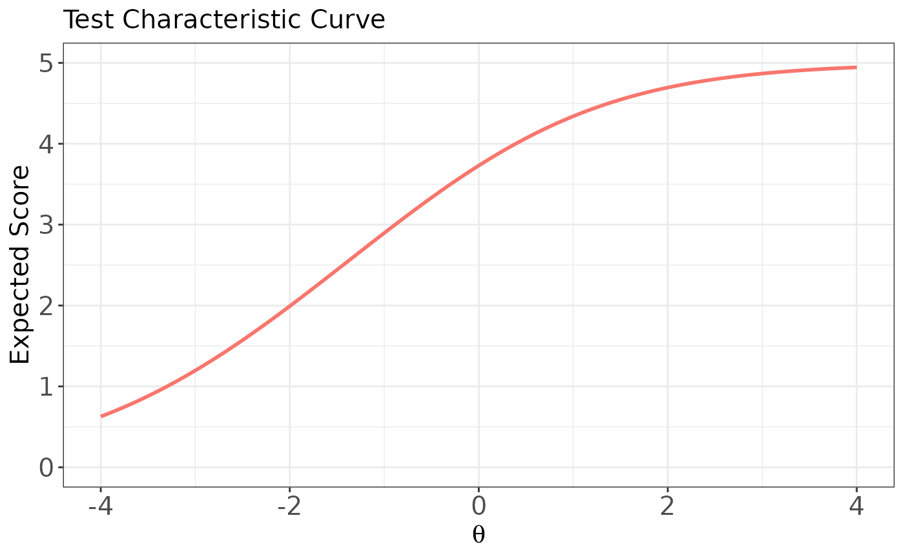
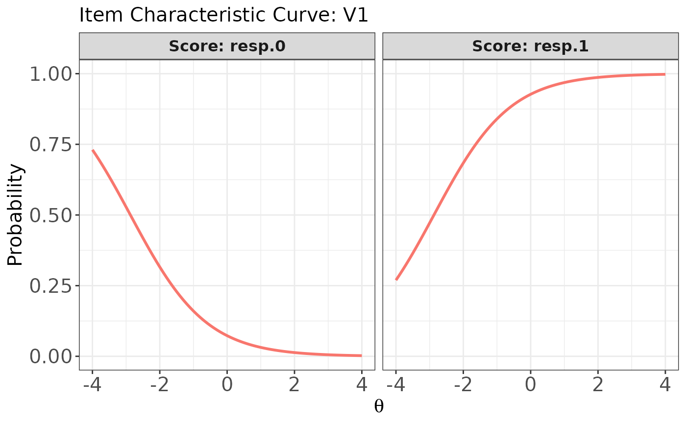
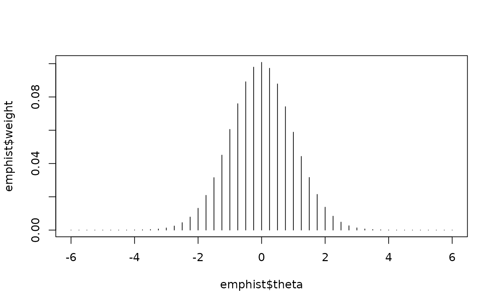
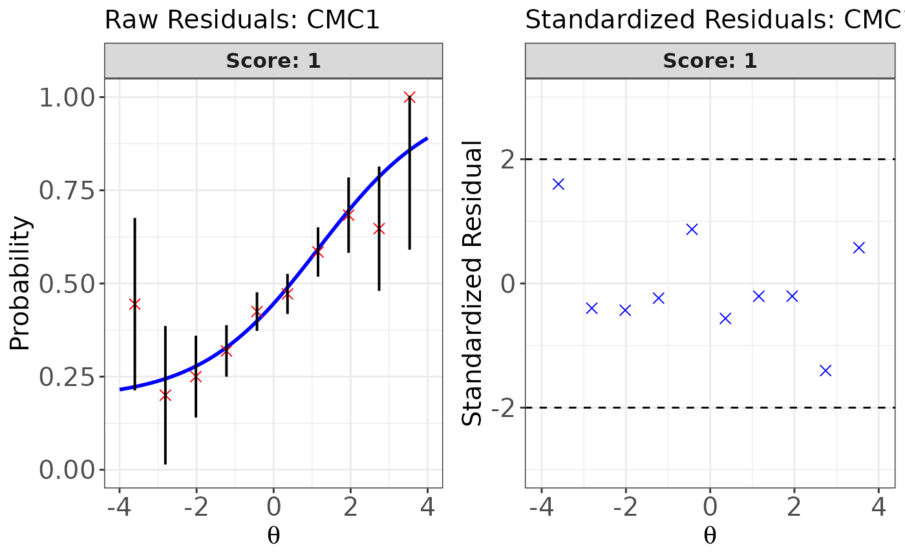
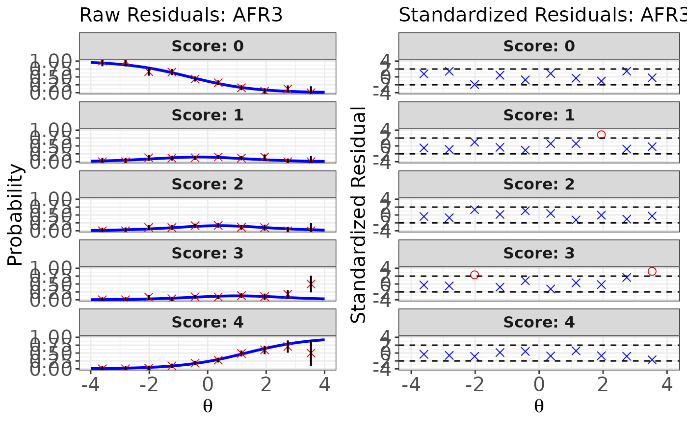
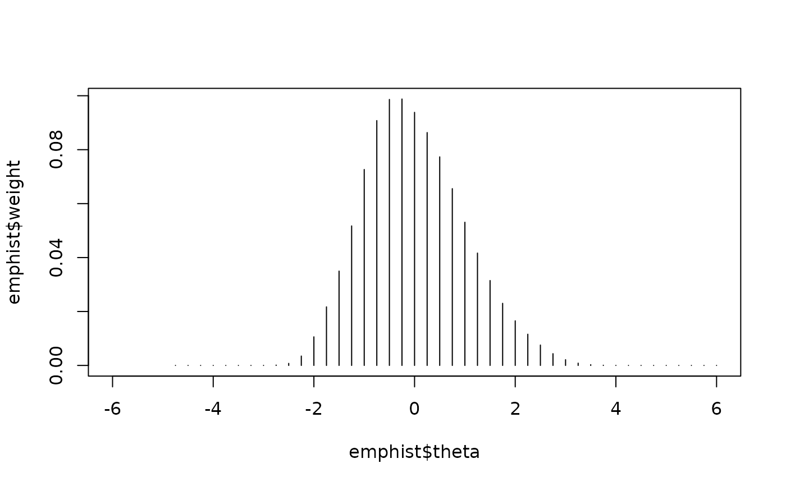
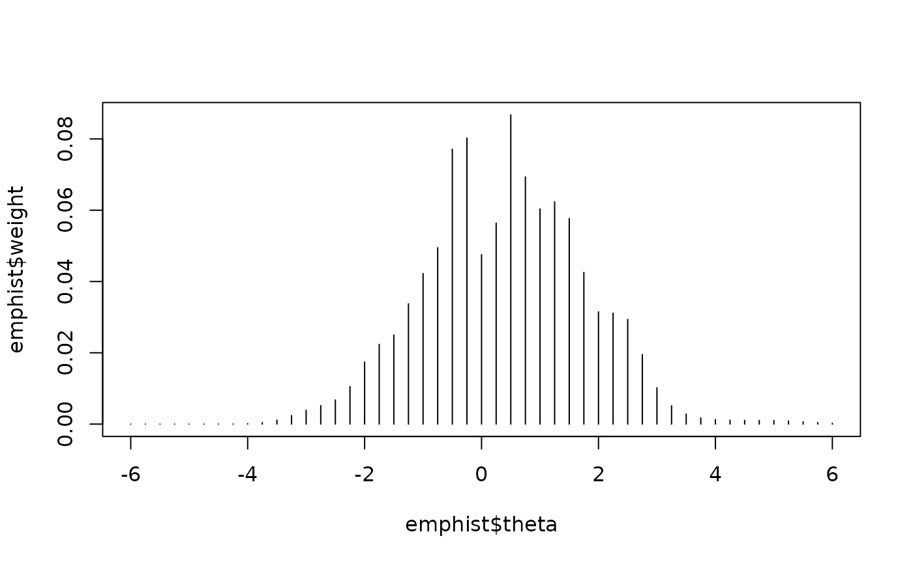
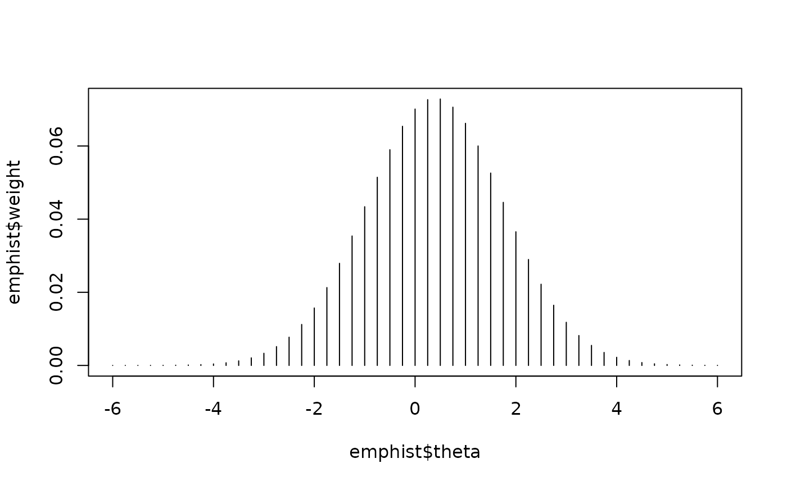
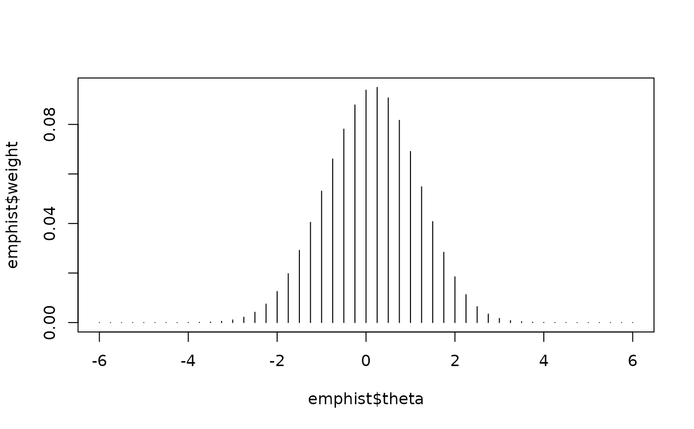
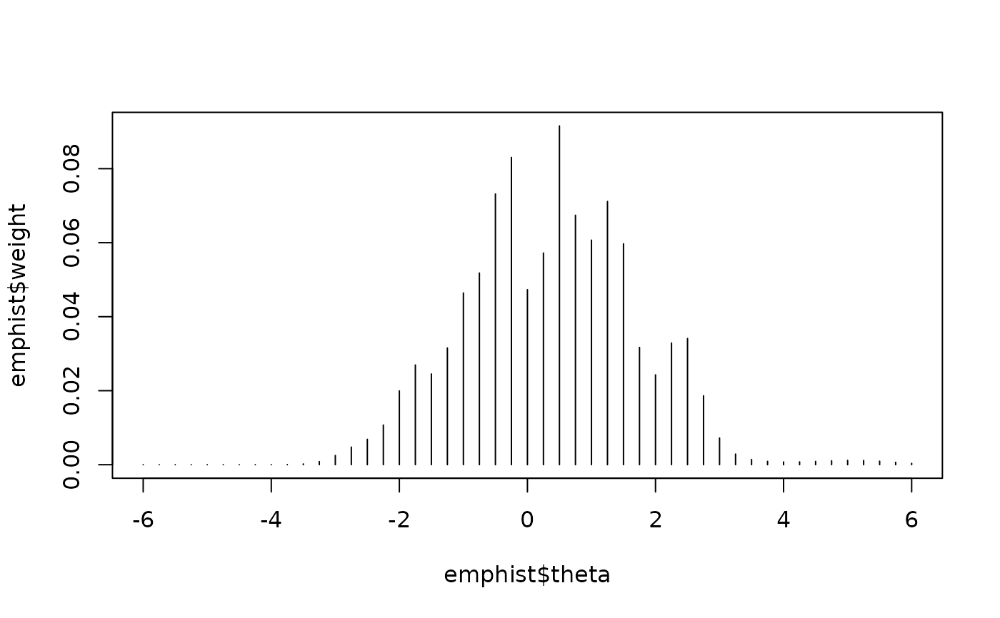

This function fits unidimensional item response theory (IRT) models to mixed-format data comprising both dichotomous and polytomous items, using marginal maximum likelihood estimation via the expectation - maximization (MMLE-EM) algorithm (Bock & Aitkin, 1981). It also supports fixed item parameter calibration (FIPC; Kim, 2006), a practical method for pretest (or newly developed) item calibration in computerized adaptive testing (CAT). FIPC enables the parameter estimates of pretest items to be placed on the same scale as those of operational items (Ban et al., 2001). For dichotomous items, the function supports the one-, two-, and three-parameter logistic models. For polytomous items, it supports the graded response model (GRM) and the (generalized) partial credit model (GPCM).
Usage
est_irt(
x = NULL,
data,
D = 1,
model = NULL,
cats = NULL,
item.id = NULL,
fix.a.1pl = FALSE,
fix.a.gpcm = FALSE,
fix.g = FALSE,
a.val.1pl = 1,
a.val.gpcm = 1,
g.val = 0.2,
use.aprior = FALSE,
use.bprior = FALSE,
use.gprior = TRUE,
aprior = list(dist = "lnorm", params = c(0, 0.5)),
bprior = list(dist = "norm", params = c(0, 1)),
gprior = list(dist = "beta", params = c(5, 16)),
missing = NA,
Quadrature = c(49, 6),
weights = NULL,
group.mean = 0,
group.var = 1,
EmpHist = FALSE,
use.startval = FALSE,
Etol = 1e-04,
MaxE = 500,
control = list(eval.max = 500, iter.max = 200, x.tol = 1e-04),
fipc = FALSE,
fipc.method = "MEM",
fix.loc = NULL,
fix.id = NULL,
se = TRUE,
verbose = TRUE
)Arguments
- x
A data frame containing item metadata. This metadata is required to retrieve essential information for each item (e.g., number of score categories, IRT model type, etc.) necessary for calibration. You can create an empty item metadata frame using the function
shape_df().When
use.startval = TRUE, the item parameters specified in the metadata will be used as starting values for parameter estimation. Ifx = NULL, bothmodelandcatsarguments must be specified. Note that whenfipc = TRUEto implement FIPC, item metadata for the test form must be supplied via thexargument. See below for more details. Default isNULL.- data
A matrix of examinees' item responses corresponding to the items specified in the
xargument. Rows represent examinees and columns represent items.- D
A scaling constant used in IRT models to make the logistic function closely approximate the normal ogive function. A value of 1.7 is commonly used for this purpose. Default is 1.
- model
A character vector specifying the IRT model to fit each item. Available values are:
"1PLM","2PLM","3PLM","DRM"for dichotomous items"GRM","GPCM"for polytomous items
Here,
"GRM"denotes the graded response model and"GPCM"the (generalized) partial credit model. Note that"DRM"serves as a general label covering all three dichotomous IRT models. If a single model name is provided, it is recycled for all items. This argument is only used whenx = NULLandfipc = FALSE. Default isNULL.- cats
Numeric vector specifying the number of score categories per item. For dichotomous items, this should be 2. If a single value is supplied, it will be recycled across all items. When
cats = NULLand all models specified in themodelargument are dichotomous ("1PLM","2PLM","3PLM", or"DRM"), the function defaults to 2 categories per item. This argument is used only whenx = NULLandfipc = FALSE. Default isNULL.- item.id
Character vector of item identifiers. If
NULL, IDs are generated automatically. Whenfipc = TRUE, a provideditem.idwill override any IDs present inx. Default isNULL.- fix.a.1pl
Logical. If
TRUE, the slope parameters of all 1PLM items are fixed toa.val.1pl; otherwise, they are constrained to be equal and estimated. Default isFALSE.- fix.a.gpcm
Logical. If
TRUE, GPCM items are calibrated as PCM with slopes fixed toa.val.gpcm; otherwise, each item's slope is estimated. Default isFALSE.- fix.g
Logical. If
TRUE, all 3PLM guessing parameters are fixed tog.val; otherwise, each guessing parameter is estimated. Default isFALSE.- a.val.1pl
Numeric. Value to which the slope parameters of 1PLM items are fixed when
fix.a.1pl = TRUE. Default is 1.- a.val.gpcm
Numeric. Value to which the slope parameters of GPCM items are fixed when
fix.a.gpcm = TRUE. Default is 1.- g.val
Numeric. Value to which the guessing parameters of 3PLM items are fixed when
fix.g = TRUE. Default is 0.2.- use.aprior
Logical. If
TRUE, applies a prior distribution to all item discrimination (slope) parameters during calibration. Default isFALSE.- use.bprior
Logical. If
TRUE, applies a prior distribution to all item difficulty (or threshold) parameters during calibration. Default isFALSE.- use.gprior
Logical. If
TRUE, applies a prior distribution to all 3PLM guessing parameters during calibration. Default isTRUE.- aprior, bprior, gprior
A list specifying the prior distribution for all item discrimination (slope), difficulty (or threshold), guessing parameters. Three distributions are supported: Beta, Log-normal, and Normal. The list must have two elements:
dist: A character string, one of"beta","lnorm", or"norm".params: A numeric vector of length two giving the distribution's parameters. For details on each parameterization, seestats::dbeta(),stats::dlnorm(), andstats::dnorm().
Defaults are:
aprior = list(dist = "lnorm", params = c(0.0, 0.5))bprior = list(dist = "norm", params = c(0.0, 1.0))gprior = list(dist = "beta", params = c(5, 16))
for discrimination, difficulty, and guessing parameters, respectively.
- missing
A value indicating missing responses in the data set. Default is
NA.- Quadrature
A numeric vector of length two:
first element: number of quadrature points
second element: symmetric bound (absolute value) for those points For example,
c(49, 6)specifies 49 evenly spaced points from -6 to 6. These points are used in the E-step of the EM algorithm. Default isc(49, 6).
- weights
A two-column matrix or data frame containing the quadrature points (in the first column) and their corresponding weights (in the second column) for the latent variable prior distribution. If not
NULL, the scale of the latent ability distribution is fixed to match the scale of the provided quadrature points and weights. The weights and points can be conveniently generated using the functiongen.weight().If
NULL, a normal prior density is used instead, based on the information provided in theQuadrature,group.mean, andgroup.vararguments. Default isNULL.- group.mean
A numeric value specifying the mean of the latent variable prior distribution when
weights = NULL. Default is 0. This value is fixed to resolve the indeterminacy of the item parameter scale during calibration. However, the scale of the prior distribution is updated when FIPC is implemented.- group.var
A positive numeric value specifying the variance of the latent variable prior distribution when
weights = NULL. Default is 1. This value is fixed to resolve the indeterminacy of the item parameter scale during calibration. However, the scale of the prior distribution is updated when FIPC is implemented.- EmpHist
Logical. If
TRUE, the empirical histogram of the latent variable prior distribution is estimated simultaneously with the item parameters using the approach proposed by Woods (2007). Item calibration is conducted relative to the estimated empirical prior. See below for details.- use.startval
Logical. If
TRUE, the item parameters provided in the item metadata (i.e., thexargument) are used as starting values for item parameter estimation. Otherwise, internally generated starting values are used. Default isFALSE.- Etol
A positive numeric value specifying the convergence criterion for the E-step of the EM algorithm. Default is 1e-4. Specifically, the EM algorithm terminates when the largest absolute difference in item parameter estimates between consecutive iterations is smaller than this value.
- MaxE
A positive integer specifying the maximum number of iterations for the E-step in the EM algorithm. Default is
500.- control
A named list of options passed directly to
stats::nlminb()in each M-step optimization of the EM algorithm. By default:control = list(eval.max = 500, iter.max = 200, x.tol = 1e-4), whereeval.max= 500 limits the number of function evaluationsiter.max= 200 caps the number of internal optimizer iterationsx.tol= 1e-4 sets the absolute change threshold in parameter values below whichstats::nlminb()considers the solution to have converged Users may additionally supply othernlminb()control options (such asabs.tol,rel.tol,trace, etc.) as needed.
- fipc
Logical. If
TRUE, fixed item parameter calibration (FIPC) is applied during item parameter estimation. Whenfipc = TRUE, the information on which items are fixed must be provided via eitherfix.locorfix.id. See below for details.- fipc.method
A character string specifying the FIPC method. Available options are:
"OEM": No Prior Weights Updating and One EM Cycle (NWU-OEM; Wainer & Mislevy, 1990)"MEM": Multiple Prior Weights Updating and Multiple EM Cycles (MWU-MEM; Kim, 2006) Whenfipc.method = "OEM", the maximum number of E-steps is automatically set to 1, regardless of the value specified inMaxE.
- fix.loc
A vector of positive integers specifying the row positions of the items to be fixed in the item metadata (i.e.,
x) when FIPC is implemented (i.e.,fipc = TRUE). For example, suppose that five items located in the 1st, 2nd, 4th, 7th, and 9th rows ofxshould be fixed. Then usefix.loc = c(1, 2, 4, 7, 9). Note that iffix.idis notNULL, the information provided infix.locis ignored. See below for details.- fix.id
A character vector specifying the IDs of the items to be fixed when FIPC is implemented (i.e.,
fipc = TRUE). For example, suppose five items with IDs "CMC1", "CMC2", "CMC3", "CMC4", and "CMC5" are to be fixed, and that all item IDs are supplied viaitem.idcolumn in thexargument. Then usefix.id = c("CMC1", "CMC2", "CMC3", "CMC4", "CMC5"). Note that iffix.idis notNULL, the information infix.locis ignored. See below for details.- se
Logical. If
FALSE, standard errors of the item parameter estimates are not computed. Default isTRUE.- verbose
Logical. If
FALSE, all progress messages, including information about the EM algorithm process, are suppressed. Default isTRUE.
Value
This function returns an object of class est_irt. The returned
object contains the following components:
- estimates
A data frame containing both the item parameter estimates and their corresponding standard errors.
- par.est
A data frame of item parameter estimates, structured according to the item metadata format.
- se.est
A data frame of standard errors for the item parameter estimates, computed using the cross-product approximation method (Meilijson, 1989).
- pos.par
A data frame indicating the position index of each estimated item parameter. The position information is useful for interpreting the variance-covariance matrix of item parameter estimates
- covariance
A variance-covariance matrix of the item parameter estimates.
- loglikelihood
The marginal log-likelihood, calculated as the sum of the log-likelihoods across all items.
- aic
Akaike Information Criterion (AIC) based on the log-likelihood.
- bic
Bayesian Information Criterion (BIC) based on the log-likelihood.
- group.par
A data frame containing the mean, variance, and standard deviation of the latent variable prior distribution.
- weights
A two-column data frame of quadrature points (column 1) and corresponding weights (column 2) of the (updated) latent prior distribution.
- posterior.dist
A matrix of normalized posterior densities for all response patterns at each quadrature point. Rows and columns represent response patterns and quadrature points, respectively.
- data
A data frame of examinees' response data.
- scale.D
The scaling factor used in the IRT model.
- ncase
The total number of response patterns.
- nitem
The total number of items in the response data.
- Etol
The convergence criterion for the E-step of the EM algorithm.
- MaxE
The maximum number of E-steps allowed in the EM algorithm.
- aprior
A list describing the prior distribution used for discrimination parameters.
- bprior
A list describing the prior distribution used for difficulty parameters.
- gprior
A list describing the prior distribution used for guessing parameters.
- npar.est
The total number of parameters estimated.
- niter
The number of completed EM cycles.
- maxpar.diff
The maximum absolute change in parameter estimates at convergence.
- EMtime
Time (in seconds) spent on EM cycles.
- SEtime
Time (in seconds) spent computing standard errors.
- TotalTime
Total computation time (in seconds).
- test.1
First-order test result indicating whether the gradient sufficiently vanished for solution stability.
- test.2
Second-order test result indicating whether the information matrix is positive definite, a necessary condition for identifying a local maximum.
- var.note
A note indicating whether the variance-covariance matrix was successfully obtained from the information matrix.
- fipc
Logical. Indicates whether FIPC was used.
- fipc.method
The method used for FIPC.
- fix.loc
A vector of integers specifying the row locations of fixed items when FIPC was applied.
Note that you can easily extract components from the output using the
getirt() function.
Details
A specific format of data frame should be used for the argument x.
The first column should contain item IDs, the second column should contain
the number of unique score categories for each item, and the third column
should specify the IRT model to be fitted to each item. Available IRT models
are:
"1PLM","2PLM","3PLM", and"DRM"for dichotomous item data"GRM"and"GPCM"for polytomous item data
Note that "DRM" serves as a general label covering all dichotomous IRT
models (i.e., "1PLM", "2PLM", and "3PLM"), while "GRM" and "GPCM"
represent the graded response model and (generalized) partial credit model,
respectively.
The subsequent columns should contain the item parameters for the specified
models. For dichotomous items, the fourth, fifth, and sixth columns represent
item discrimination (slope), item difficulty, and item guessing parameters,
respectively. When "1PLM" or "2PLM" is specified in the third column,
NAs must be entered in the sixth column for the guessing parameters.
For polytomous items, the item discrimination (slope) parameter should appear
in the fourth column, and the item difficulty (or threshold) parameters for
category boundaries should occupy the fifth through the last columns. When
the number of unique score categories differs across items, unused parameter
cells should be filled with NAs.
In the irtQ package, the threshold parameters for GPCM items are expressed as the item location (or overall difficulty) minus the threshold values for each score category. Note that when a GPCM item has K unique score categories, K - 1 threshold parameters are required, since the threshold for the first category boundary is always fixed at 0. For example, if a GPCM item has five score categories, four threshold parameters must be provided.
An example of a data frame for a single-format test is shown below:
| ITEM1 | 2 | 1PLM | 1.000 | 1.461 | NA | ITEM2 | 2 |
| 2PLM | 1.921 | -1.049 | NA | ITEM3 | 2 | 3PLM | 1.736 |
| 1.501 | 0.203 | ITEM4 | 2 | 3PLM | 0.835 | -1.049 | 0.182 |
An example of a data frame for a mixed-format test is shown below:
| ITEM1 | 2 | 1PLM | 1.000 | 1.461 | NA | NA | NA |
| ITEM2 | 2 | 2PLM | 1.921 | -1.049 | NA | NA | NA |
| ITEM3 | 2 | 3PLM | 0.926 | 0.394 | 0.099 | NA | NA |
| ITEM4 | 2 | DRM | 1.052 | -0.407 | 0.201 | NA | NA |
| ITEM5 | 4 | GRM | 1.913 | -1.869 | -1.238 | -0.714 | NA |
| ITEM6 | 5 | GRM | 1.278 | -0.724 | -0.068 | 0.568 | 1.072 |
| ITEM7 | 4 | GPCM | 1.137 | -0.374 | 0.215 | 0.848 | NA |
| ITEM8 | 5 | GPCM | 1.233 | -2.078 | -1.347 | -0.705 | -0.116 |
See the IRT Models section in the irtQ-package documentation for more
details about the IRT models used in the irtQ package. A convenient way
to create a data frame for the argument x is by using the function
shape_df().
To fit IRT models to data, the item response data must be accompanied by information on the IRT model and the number of score categories for each item. There are two ways to provide this information:
Supply item metadata to the argument
x. As explained above, such metadata can be easily created usingshape_df().Specify the IRT models and score category information directly through the arguments
modelandcats.
If x = NULL, the function uses the information specified in model and
cats.
To implement FIPC, the item metadata must be provided via the x argument.
This is because the item parameters of the fixed items in the metadata are
used to estimate the characteristics of the underlying latent variable prior
distribution when calibrating the remaining (freely estimated) items. More
specifically, the latent prior distribution is estimated based on the
fixed items, and then used to calibrate the new (pretest) items so that their
parameters are placed on the same scale as those of the fixed items (Kim,
2006).The full item metadata, including both fixed and non-fixed items, can be
conveniently created using the shape_df_fipc() function.
In terms of approaches for FIPC, Kim (2006) described five different methods.
Among them, two methods are available in the est_irt() function. The
first method is "NWU-OEM", which uses a single E-step in the EM
algorithm (involving only the fixed items) followed by a single M-step
(involving only the non-fixed items). This method was proposed by Wainer and
Mislevy (1990) in the context of online calibration and can be implemented by
setting fipc.method = "OEM".
The second method is "MWU-MEM", which iteratively updates the latent
variable prior distribution and estimates the parameters of the non-fixed
items. In this method, the same procedure as the NWU-OEM approach is applied
during the first EM cycle. From the second cycle onward, both the parameters
of the non-fixed items and the weights of the prior distribution are
concurrently updated. This method can be implemented by setting fipc.method = "MEM". See Kim (2006) for more details.
When fipc = TRUE, information about which items are to be fixed must be
provided via either the fix.loc or fix.id argument. For example, suppose
that five items with IDs "CMC1", "CMC2", "CMC3", "CMC4", and "CMC5" should
be fixed, and all item IDs are provided via the x or item.id argument.
Also, assume these five items are located in the 1st through 5th rows of the
item metadata (i.e., x). In this case, the fixed items can be specified
using either fix.loc = c(1, 2, 3, 4, 5) or
fix.id = c("CMC1", "CMC2", "CMC3", "CMC4", "CMC5"). Note that if both
fix.loc and fix.id are not NULL, the information in fix.loc is
ignored.
When EmpHist = TRUE, the empirical histogram of the latent variable prior
distribution (i.e., the densities at the quadrature points) is estimated
simultaneously with the item parameters. If EmpHist = TRUE and
fipc = TRUE, the scale parameters of the empirical
prior distribution (e.g., mean and variance) are also estimated.
If EmpHist = TRUE and fipc = FALSE, the scale parameters are fixed to
the values specified in group.mean and group.var. When EmpHist = FALSE,
a normal prior distribution is used instead. If fipc = TRUE, the scale
parameters of this normal prior are estimated along with the item parameters.
If fipc = FALSE, they are fixed to the values specified in group.mean and
group.var.
References
Ban, J. C., Hanson, B. A., Wang, T., Yi, Q., & Harris, D., J. (2001) A comparative study of on-line pretest item calibration/scaling methods in computerized adaptive testing. Journal of Educational Measurement, 38(3), 191-212.
Bock, R. D., & Aitkin, M. (1981). Marginal maximum likelihood estimation of item parameters: Application of an EM algorithm. Psychometrika, 46, 443-459.
Kim, S. (2006). A comparative study of IRT fixed parameter calibration methods. Journal of Educational Measurement, 43(4), 355-381.
Meilijson, I. (1989). A fast improvement to the EM algorithm on its own terms. Journal of the Royal Statistical Society: Series B (Methodological), 51, 127-138.
Stocking, M. L. (1988). Scale drift in on-line calibration (Research Rep. 88-28). Princeton, NJ: ETS.
Wainer, H., & Mislevy, R. J. (1990). Item response theory, item calibration, and proficiency estimation. In H. Wainer (Ed.), Computer adaptive testing: A primer (Chap. 4, pp.65-102). Hillsdale, NJ: Lawrence Erlbaum.
Woods, C. M. (2007). Empirical histograms in item response theory with ordinal data. Educational and Psychological Measurement, 67(1), 73-87.
Author
Hwanggyu Lim hglim83@gmail.com
Examples
# \donttest{
## --------------------------------------------------------------
## 1. Item parameter estimation for dichotomous item data (LSAT6)
## --------------------------------------------------------------
# Fit the 1PL model to LSAT6 data and estimate a common slope parameter
# (i.e., constrain slope parameters to be equal)
(mod.1pl.c <- est_irt(data = LSAT6, D = 1, model = "1PLM", cats = 2,
fix.a.1pl = FALSE))
#> Parsing input...
#> Estimating item parameters...
#>
EM iteration: 1, Loglike: -3182.3860, Max-Change: 0.385069
EM iteration: 2, Loglike: -2561.3380, Max-Change: 0.00000
#> Computing item parameter var-covariance matrix...
#> Estimation is finished in 0.02 seconds.
#>
#> Call:
#> est_irt(data = LSAT6, D = 1, model = "1PLM", cats = 2, fix.a.1pl = FALSE)
#>
#> Item parameter estimation using MMLE-EM.
#> 2 E-step cycles were completed using 49 quadrature points.
#> First-order test: Convergence criteria are satisfied.
#> Second-order test: Solution is a possible local maximum.
#> Computation of variance-covariance matrix:
#> Variance-covariance matrix of item parameter estimates is obtainable.
#>
#> Log-likelihood: -2483.181
#>
# Display a summary of the estimation results
summary(mod.1pl.c)
#>
#> Call:
#> est_irt(data = LSAT6, D = 1, model = "1PLM", cats = 2, fix.a.1pl = FALSE)
#>
#> Summary of the Data
#> Number of Items: 5
#> Number of Cases: 1000
#>
#> Summary of Estimation Process
#> Maximum number of EM cycles: 500
#> Convergence criterion of E-step: 1e-04
#> Number of rectangular quadrature points: 49
#> Minimum & Maximum quadrature points: -6, 6
#> Number of free parameters: 6
#> Number of fixed items: 0
#> Number of E-step cycles completed: 2
#> Maximum parameter change: 0
#>
#> Processing time (in seconds)
#> EM algorithm: 0.01
#> Standard error computation: 0
#> Total computation: 0.02
#>
#> Convergence and Stability of Solution
#> First-order test: Convergence criteria are satisfied.
#> Second-order test: Solution is a possible local maximum.
#> Computation of variance-covariance matrix:
#> Variance-covariance matrix of item parameter estimates is obtainable.
#>
#> Summary of Estimation Results
#> -2loglikelihood: 4966.362
#> Akaike Information Criterion (AIC): 4978.362
#> Bayesian Information Criterion (BIC): 5007.809
#> Item Parameters:
#> id cats model par.1 se.1 par.2 se.2 par.3 se.3
#> 1 V1 2 1PLM 0.88 0.07 -2.88 0.25 NA NA
#> 2 V2 2 1PLM 0.88 NA -0.88 0.11 NA NA
#> 3 V3 2 1PLM 0.88 NA -0.01 0.08 NA NA
#> 4 V4 2 1PLM 0.88 NA -1.24 0.13 NA NA
#> 5 V5 2 1PLM 0.88 NA -2.15 0.20 NA NA
#> Group Parameters:
#> mu sigma2 sigma
#> estimates 0 1 1
#> se NA NA NA
#>
# Extract the item parameter estimates
getirt(mod.1pl.c, what = "par.est")
#> id cats model par.1 par.2 par.3
#> 1 V1 2 1PLM 0.8838545 -2.875038850 NA
#> 2 V2 2 1PLM 0.8838545 -0.883897344 NA
#> 3 V3 2 1PLM 0.8838545 -0.006691281 NA
#> 4 V4 2 1PLM 0.8838545 -1.239217093 NA
#> 5 V5 2 1PLM 0.8838545 -2.152040565 NA
# Extract the standard error estimates
getirt(mod.1pl.c, what = "se.est")
#> id cats model par.1 par.2 par.3
#> 1 V1 2 1PLM 0.07327231 0.25369712 NA
#> 2 V2 2 1PLM NA 0.11434122 NA
#> 3 V3 2 1PLM NA 0.08447482 NA
#> 4 V4 2 1PLM NA 0.13403090 NA
#> 5 V5 2 1PLM NA 0.19776752 NA
# Fit the 1PL model to LSAT6 data and fix slope parameters to 1.0
(mod.1pl.f <- est_irt(data = LSAT6, D = 1, model = "1PLM", cats = 2,
fix.a.1pl = TRUE, a.val.1pl = 1))
#> Parsing input...
#> Estimating item parameters...
#>
EM iteration: 1, Loglike: -3182.3860, Max-Change: 0.396125
EM iteration: 2, Loglike: -2569.0530, Max-Change: 0.00000
#> Computing item parameter var-covariance matrix...
#> Estimation is finished in 0.03 seconds.
#>
#> Call:
#> est_irt(data = LSAT6, D = 1, model = "1PLM", cats = 2, fix.a.1pl = TRUE,
#> a.val.1pl = 1)
#>
#> Item parameter estimation using MMLE-EM.
#> 2 E-step cycles were completed using 49 quadrature points.
#> First-order test: Convergence criteria are satisfied.
#> Second-order test: Solution is a possible local maximum.
#> Computation of variance-covariance matrix:
#> Variance-covariance matrix of item parameter estimates is obtainable.
#>
#> Log-likelihood: -2491.532
#>
# Display a summary of the estimation results
summary(mod.1pl.f)
#>
#> Call:
#> est_irt(data = LSAT6, D = 1, model = "1PLM", cats = 2, fix.a.1pl = TRUE,
#> a.val.1pl = 1)
#>
#> Summary of the Data
#> Number of Items: 5
#> Number of Cases: 1000
#>
#> Summary of Estimation Process
#> Maximum number of EM cycles: 500
#> Convergence criterion of E-step: 1e-04
#> Number of rectangular quadrature points: 49
#> Minimum & Maximum quadrature points: -6, 6
#> Number of free parameters: 5
#> Number of fixed items: 0
#> Number of E-step cycles completed: 2
#> Maximum parameter change: 0
#>
#> Processing time (in seconds)
#> EM algorithm: 0.02
#> Standard error computation: 0
#> Total computation: 0.03
#>
#> Convergence and Stability of Solution
#> First-order test: Convergence criteria are satisfied.
#> Second-order test: Solution is a possible local maximum.
#> Computation of variance-covariance matrix:
#> Variance-covariance matrix of item parameter estimates is obtainable.
#>
#> Summary of Estimation Results
#> -2loglikelihood: 4983.064
#> Akaike Information Criterion (AIC): 4993.064
#> Bayesian Information Criterion (BIC): 5017.602
#> Item Parameters:
#> id cats model par.1 se.1 par.2 se.2 par.3 se.3
#> 1 V1 2 1PLM 1 NA -2.56 0.13 NA NA
#> 2 V2 2 1PLM 1 NA -0.76 0.08 NA NA
#> 3 V3 2 1PLM 1 NA 0.03 0.08 NA NA
#> 4 V4 2 1PLM 1 NA -1.09 0.09 NA NA
#> 5 V5 2 1PLM 1 NA -1.91 0.11 NA NA
#> Group Parameters:
#> mu sigma2 sigma
#> estimates 0 1 1
#> se NA NA NA
#>
# Fit the 2PL model to LSAT6 data
(mod.2pl <- est_irt(data = LSAT6, D = 1, model = "2PLM", cats = 2))
#> Parsing input...
#> Estimating item parameters...
#>
EM iteration: 1, Loglike: -3182.3860, Max-Change: 0.390402
EM iteration: 2, Loglike: -2561.0478, Max-Change: 0.00000
#> Computing item parameter var-covariance matrix...
#> Estimation is finished in 0.04 seconds.
#>
#> Call:
#> est_irt(data = LSAT6, D = 1, model = "2PLM", cats = 2)
#>
#> Item parameter estimation using MMLE-EM.
#> 2 E-step cycles were completed using 49 quadrature points.
#> First-order test: Convergence criteria are satisfied.
#> Second-order test: Solution is a possible local maximum.
#> Computation of variance-covariance matrix:
#> Variance-covariance matrix of item parameter estimates is obtainable.
#>
#> Log-likelihood: -2482.895
#>
# Display a summary of the estimation results
summary(mod.2pl)
#>
#> Call:
#> est_irt(data = LSAT6, D = 1, model = "2PLM", cats = 2)
#>
#> Summary of the Data
#> Number of Items: 5
#> Number of Cases: 1000
#>
#> Summary of Estimation Process
#> Maximum number of EM cycles: 500
#> Convergence criterion of E-step: 1e-04
#> Number of rectangular quadrature points: 49
#> Minimum & Maximum quadrature points: -6, 6
#> Number of free parameters: 10
#> Number of fixed items: 0
#> Number of E-step cycles completed: 2
#> Maximum parameter change: 0
#>
#> Processing time (in seconds)
#> EM algorithm: 0.03
#> Standard error computation: 0
#> Total computation: 0.04
#>
#> Convergence and Stability of Solution
#> First-order test: Convergence criteria are satisfied.
#> Second-order test: Solution is a possible local maximum.
#> Computation of variance-covariance matrix:
#> Variance-covariance matrix of item parameter estimates is obtainable.
#>
#> Summary of Estimation Results
#> -2loglikelihood: 4965.79
#> Akaike Information Criterion (AIC): 4985.79
#> Bayesian Information Criterion (BIC): 5034.867
#> Item Parameters:
#> id cats model par.1 se.1 par.2 se.2 par.3 se.3
#> 1 V1 2 2PLM 0.89 0.25 -2.87 0.67 NA NA
#> 2 V2 2 2PLM 0.88 0.19 -0.89 0.18 NA NA
#> 3 V3 2 2PLM 0.93 0.20 0.00 0.08 NA NA
#> 4 V4 2 2PLM 0.86 0.19 -1.27 0.25 NA NA
#> 5 V5 2 2PLM 0.84 0.21 -2.25 0.48 NA NA
#> Group Parameters:
#> mu sigma2 sigma
#> estimates 0 1 1
#> se NA NA NA
#>
# Assess the model fit for the 2PL model using the S-X2 fit statistic
(sx2fit.2pl <- sx2_fit(x = mod.2pl))
#> $fit_stat
#> id chisq df crit.val p
#> 1 V1 0.455 2 5.991 0.797
#> 2 V2 1.669 2 5.991 0.434
#> 3 V3 0.872 1 3.841 0.351
#> 4 V4 0.221 2 5.991 0.895
#> 5 V5 0.222 2 5.991 0.895
#>
#> $item_df
#> id cats model par.1 par.2 par.3
#> 1 V1 2 2PLM 0.8851380 -2.872384950 0
#> 2 V2 2 2PLM 0.8780243 -0.890284439 0
#> 3 V3 2 2PLM 0.9305760 0.003668382 0
#> 4 V4 2 2PLM 0.8617347 -1.269897767 0
#> 5 V5 2 2PLM 0.8410096 -2.250964707 0
#>
#> $exp_freq
#> $exp_freq$item.1
#> score.0 score.1
#> score.1 10.21957 9.780426
#> score.2 20.96915 64.030848
#> score.3 26.48137 210.518633
#> score.4 13.89959 343.100414
#>
#> $exp_freq$item.2
#> score.0 score.1
#> score.1 18.30228 1.697724
#> score.2 65.03921 19.960793
#> score.3 123.98326 113.016740
#> score.4 80.96317 276.036828
#>
#> $exp_freq$item.3
#> score.0 score.1
#> score.1 95.11569 9.884315
#> score.3 178.11641 58.883590
#> score.4 175.86804 181.131961
#>
#> $exp_freq$item.4
#> score.0 score.1
#> score.1 17.62697 2.373027
#> score.2 58.32066 26.679344
#> score.3 97.27739 139.722608
#> score.4 59.41978 297.580221
#>
#> $exp_freq$item.5
#> score.0 score.1
#> score.1 14.57256 5.427437
#> score.2 34.83391 50.166085
#> score.3 48.14157 188.858429
#> score.4 26.84942 330.150576
#>
#>
#> $obs_freq
#> $obs_freq$item.1
#> score.0 score.1
#> score.1 10 10
#> score.2 23 62
#> score.3 25 212
#> score.4 15 342
#>
#> $obs_freq$item.2
#> score.0 score.1
#> score.1 19 1
#> score.2 61 24
#> score.3 128 109
#> score.4 80 277
#>
#> $obs_freq$item.3
#> score.0 score.1
#> score.1 97 8
#> score.3 174 63
#> score.4 173 184
#>
#> $obs_freq$item.4
#> score.0 score.1
#> score.1 18 2
#> score.2 57 28
#> score.3 98 139
#> score.4 61 296
#>
#> $obs_freq$item.5
#> score.0 score.1
#> score.1 14 6
#> score.2 36 49
#> score.3 49 188
#> score.4 28 329
#>
#>
#> $exp_prob
#> $exp_prob$item.1
#> score.0 score.1
#> score.1 0.51097868 0.4890213
#> score.2 0.24669591 0.7533041
#> score.3 0.11173572 0.8882643
#> score.4 0.03893441 0.9610656
#>
#> $exp_prob$item.2
#> score.0 score.1
#> score.1 0.9151138 0.08488619
#> score.2 0.7651671 0.23483286
#> score.3 0.5231361 0.47686388
#> score.4 0.2267876 0.77321240
#>
#> $exp_prob$item.3
#> score.0 score.1
#> score.1 0.9058637 0.09413633
#> score.3 0.7515460 0.24845396
#> score.4 0.4926276 0.50737244
#>
#> $exp_prob$item.4
#> score.0 score.1
#> score.1 0.8813486 0.1186514
#> score.2 0.6861254 0.3138746
#> score.3 0.4104531 0.5895469
#> score.4 0.1664420 0.8335580
#>
#> $exp_prob$item.5
#> score.0 score.1
#> score.1 0.72862816 0.2713718
#> score.2 0.40981076 0.5901892
#> score.3 0.20312899 0.7968710
#> score.4 0.07520847 0.9247915
#>
#>
#> $obs_prop
#> $obs_prop$item.1
#> score.0 score.1
#> score.1 0.50000000 0.5000000
#> score.2 0.27058824 0.7294118
#> score.3 0.10548523 0.8945148
#> score.4 0.04201681 0.9579832
#>
#> $obs_prop$item.2
#> score.0 score.1
#> score.1 0.9500000 0.0500000
#> score.2 0.7176471 0.2823529
#> score.3 0.5400844 0.4599156
#> score.4 0.2240896 0.7759104
#>
#> $obs_prop$item.3
#> score.0 score.1
#> score.1 0.9238095 0.07619048
#> score.3 0.7341772 0.26582278
#> score.4 0.4845938 0.51540616
#>
#> $obs_prop$item.4
#> score.0 score.1
#> score.1 0.9000000 0.1000000
#> score.2 0.6705882 0.3294118
#> score.3 0.4135021 0.5864979
#> score.4 0.1708683 0.8291317
#>
#> $obs_prop$item.5
#> score.0 score.1
#> score.1 0.70000000 0.3000000
#> score.2 0.42352941 0.5764706
#> score.3 0.20675105 0.7932489
#> score.4 0.07843137 0.9215686
#>
#>
# Compute item and test information functions at a range of theta values
theta <- seq(-4, 4, 0.1)
(info.2pl <- info(x = mod.2pl, theta = theta))
#> $iif
#> theta.1 theta.2 theta.3 theta.4 theta.5 theta.6 theta.7
#> V1 0.15417498 0.16035066 0.16623981 0.17177329 0.17688236 0.18150033 0.18556420
#> V2 0.04429517 0.04782154 0.05157926 0.05557488 0.05981348 0.06429835 0.06903066
#> V3 0.01989591 0.02173639 0.02373680 0.02590899 0.02826530 0.03081848 0.03358156
#> V4 0.05889695 0.06320541 0.06774334 0.07250875 0.07749687 0.08269985 0.08810626
#> V5 0.10744137 0.11312951 0.11884957 0.12456241 0.13022504 0.13579099 0.14121084
#> theta.8 theta.9 theta.10 theta.11 theta.12 theta.13 theta.14
#> V1 0.18901646 0.19180670 0.19389312 0.19524388 0.19583808 0.19566646 0.19473170
#> V2 0.07400897 0.07922892 0.08468271 0.09035871 0.09624105 0.10230918 0.10853756
#> V3 0.03656779 0.03979045 0.04326264 0.04699713 0.05100600 0.05530035 0.05988995
#> V4 0.09370082 0.09946402 0.10537185 0.11139555 0.11750152 0.12365124 0.12980142
#> V5 0.14643292 0.15140412 0.15607085 0.16038013 0.16428071 0.16772430 0.17066675
#> theta.15 theta.16 theta.17 theta.18 theta.19 theta.20 theta.21
#> V1 0.19304833 0.19064225 0.18754991 0.18381714 0.17949772 0.17465184 0.1693444
#> V2 0.11489541 0.12134651 0.12784915 0.13435627 0.14081568 0.14717061 0.1533603
#> V3 0.06478279 0.06998459 0.07549828 0.08132344 0.08745564 0.09388583 0.1005997
#> V4 0.13590425 0.14190778 0.14775661 0.15339259 0.15875583 0.16378582 0.1684227
#> V5 0.17306923 0.17489925 0.17613162 0.17674913 0.17674310 0.17611362 0.1748695
#> theta.22 theta.23 theta.24 theta.25 theta.26 theta.27 theta.28
#> V1 0.1636431 0.1576171 0.1513353 0.1448648 0.1382698 0.1316106 0.1249428
#> V2 0.1593210 0.1649868 0.1702915 0.1751691 0.1795565 0.1833942 0.1866283
#> V3 0.1075769 0.1147908 0.1222075 0.1297858 0.1374766 0.1452234 0.1529617
#> V4 0.1726085 0.1762889 0.1794143 0.1819412 0.1838338 0.1850645 0.1856154
#> V5 0.1730282 0.1706150 0.1676625 0.1642096 0.1603007 0.1559840 0.1513109
#> theta.29 theta.30 theta.31 theta.32 theta.33 theta.34 theta.35
#> V1 0.1183167 0.1117772 0.1053634 0.09910845 0.09304021 0.08718112 0.08154865
#> V2 0.1892120 0.1911072 0.1922852 0.19272818 0.19242922 0.19139295 0.18963520
#> V3 0.1606203 0.1681214 0.1753823 0.18231615 0.18883449 0.19484877 0.20027282
#> V4 0.1854784 0.1846554 0.1831586 0.18100978 0.17823997 0.17488815 0.17100036
#> V5 0.1463344 0.1411080 0.1356848 0.13011655 0.12445252 0.11873914 0.11301934
#> theta.36 theta.37 theta.38 theta.39 theta.40 theta.41 theta.42
#> V1 0.07615573 0.07101118 0.06612017 0.06148464 0.05710381 0.05297456 0.04909185
#> V2 0.18718253 0.18407140 0.18034701 0.17606194 0.17127468 0.16604793 0.16044706
#> V3 0.20502522 0.20903176 0.21222778 0.21456033 0.21598999 0.21649229 0.21605857
#> V4 0.16662827 0.16182789 0.15665804 0.15117902 0.14545124 0.13953401 0.13348450
#> V5 0.10733218 0.10171261 0.09619137 0.09079497 0.08554582 0.08046233 0.07555920
#> theta.43 theta.44 theta.45 theta.46 theta.47 theta.48 theta.49
#> V1 0.04544904 0.04203831 0.03885084 0.03587715 0.03310729 0.03053105 0.02813808
#> V2 0.15453849 0.14838823 0.14206054 0.13561685 0.12911476 0.12260741 0.11614286
#> V3 0.21469630 0.21242883 0.20929452 0.20534537 0.20064527 0.19526781 0.18929394
#> V4 0.12735683 0.12120135 0.11506412 0.10898655 0.10300520 0.09715175 0.09145304
#> V5 0.07084769 0.06633589 0.06202904 0.05792988 0.05403895 0.05035488 0.04687473
#> theta.50 theta.51 theta.52 theta.53 theta.54 theta.55 theta.56
#> V1 0.02591807 0.02386084 0.02195641 0.02019511 0.01856758 0.01706488 0.01567844
#> V2 0.10976388 0.10350776 0.09740633 0.09148614 0.08576866 0.08027065 0.07500454
#> V3 0.18280959 0.17590317 0.16866336 0.16117697 0.15352722 0.14579222 0.13804382
#> V4 0.08593126 0.08060421 0.07548557 0.07058532 0.06591003 0.06146332 0.05724618
#> V5 0.04359420 0.04050791 0.03760962 0.03489243 0.03234896 0.02997149 0.02775211
#> theta.57 theta.58 theta.59 theta.60 theta.61 theta.62
#> V1 0.01440013 0.01322222 0.01213746 0.01113899 0.01022037 0.009375594
#> V2 0.06997883 0.06519853 0.06066559 0.05637934 0.05233685 0.048533375
#> V3 0.13034684 0.12275856 0.11532852 0.10809852 0.10110291 0.094368976
#> V4 0.05325735 0.04949370 0.04595049 0.04262174 0.03950043 0.036578780
#> V5 0.02568280 0.02375558 0.02196253 0.02029590 0.01874813 0.017311894
#> theta.63 theta.64 theta.65 theta.66 theta.67 theta.68
#> V1 0.00859903 0.007885431 0.007229909 0.006627923 0.006075253 0.005567992
#> V2 0.04496262 0.041617127 0.038488493 0.035567657 0.032845096 0.030311008
#> V3 0.08791742 0.081762990 0.075915104 0.070378499 0.065153881 0.060238539
#> V4 0.03384845 0.031300708 0.028926611 0.026717117 0.024663201 0.022755950
#> V5 0.01598015 0.014746132 0.013603394 0.012545797 0.011567518 0.010663054
#> theta.69 theta.70 theta.71 theta.72 theta.73 theta.74
#> V1 0.005102516 0.004675475 0.004283774 0.003924552 0.003595171 0.003293198
#> V2 0.027955471 0.025768570 0.023740501 0.021861660 0.020122706 0.018514618
#> V3 0.055626934 0.051311232 0.047281785 0.043527568 0.040036553 0.036796034
#> V4 0.020986632 0.019346755 0.017828114 0.016422819 0.015123326 0.013922444
#> V5 0.009827212 0.009055109 0.008342156 0.007684055 0.007076782 0.006516579
#> theta.75 theta.76 theta.77 theta.78 theta.79 theta.80
#> V1 0.003016389 0.002762681 0.002530172 0.002317114 0.002121899 0.001943048
#> V2 0.017028729 0.015656754 0.014390807 0.013223411 0.012147500 0.011156417
#> V3 0.033792908 0.031013905 0.028445776 0.026075456 0.023890179 0.021877580
#> V4 0.012813349 0.011789584 0.010845057 0.009974036 0.009171141 0.008431330
#> V5 0.005999940 0.005523597 0.005084509 0.004679850 0.004306993 0.003963501
#> theta.81
#> V1 0.001779202
#> V2 0.010243907
#> V3 0.020025759
#> V4 0.007749890
#> V5 0.003647113
#>
#> $tif
#> [1] 0.38470439 0.40624352 0.42814879 0.45032832 0.47268306 0.49510800
#> [7] 0.51749351 0.53972696 0.56169420 0.58328117 0.60437541 0.62486736
#> [13] 0.64465153 0.66362739 0.68170001 0.69878039 0.71478558 0.72963856
#> [19] 0.74326798 0.75560772 0.76659655 0.77617772 0.78429870 0.79091107
#> [25] 0.79597056 0.79943738 0.80127665 0.80145908 0.79996178 0.79676922
#> [31] 0.79187425 0.78527910 0.77699641 0.76705013 0.75547636 0.74232393
#> [37] 0.72765485 0.71154437 0.69408091 0.67536554 0.65551112 0.63464118
#> [43] 0.61288837 0.59039260 0.56729905 0.54375579 0.51991148 0.49591290
#> [49] 0.47190266 0.44801701 0.42438388 0.40112129 0.37833596 0.35612246
#> [55] 0.33456256 0.31372509 0.29366595 0.27442860 0.25604460 0.23853448
#> [61] 0.22190870 0.20616862 0.19130767 0.17731239 0.16416351 0.15183699
#> [67] 0.14030495 0.12953654 0.11949877 0.11015714 0.10147633 0.09342065
#> [73] 0.08595454 0.07904287 0.07265132 0.06674652 0.06129632 0.05626987
#> [79] 0.05163771 0.04737188 0.04344587
#>
#> $theta
#> [1] -4.0 -3.9 -3.8 -3.7 -3.6 -3.5 -3.4 -3.3 -3.2 -3.1 -3.0 -2.9 -2.8 -2.7 -2.6
#> [16] -2.5 -2.4 -2.3 -2.2 -2.1 -2.0 -1.9 -1.8 -1.7 -1.6 -1.5 -1.4 -1.3 -1.2 -1.1
#> [31] -1.0 -0.9 -0.8 -0.7 -0.6 -0.5 -0.4 -0.3 -0.2 -0.1 0.0 0.1 0.2 0.3 0.4
#> [46] 0.5 0.6 0.7 0.8 0.9 1.0 1.1 1.2 1.3 1.4 1.5 1.6 1.7 1.8 1.9
#> [61] 2.0 2.1 2.2 2.3 2.4 2.5 2.6 2.7 2.8 2.9 3.0 3.1 3.2 3.3 3.4
#> [76] 3.5 3.6 3.7 3.8 3.9 4.0
#>
#> attr(,"class")
#> [1] "info"
# Plot the test characteristic curve (TCC)
(trace.2pl <- traceline(x = mod.2pl, theta = theta))
#> $prob.cats
#> $prob.cats$V1
#> resp.0 resp.1
#> [1,] 0.730683863 0.2693161
#> [2,] 0.712914450 0.2870856
#> [3,] 0.694462866 0.3055371
#> [4,] 0.675365384 0.3246346
#> [5,] 0.655666082 0.3443339
#> [6,] 0.635416702 0.3645833
#> [7,] 0.614676329 0.3853237
#> [8,] 0.593510872 0.4064891
#> [9,] 0.571992349 0.4280077
#> [10,] 0.550198003 0.4498020
#> [11,] 0.528209246 0.4717908
#> [12,] 0.506110479 0.4938895
#> [13,] 0.483987809 0.5160122
#> [14,] 0.461927719 0.5380723
#> [15,] 0.440015714 0.5599843
#> [16,] 0.418335012 0.5816650
#> [17,] 0.396965295 0.6030347
#> [18,] 0.375981590 0.6240184
#> [19,] 0.355453278 0.6445467
#> [20,] 0.335443291 0.6645567
#> [21,] 0.316007478 0.6839925
#> [22,] 0.297194179 0.7028058
#> [23,] 0.279043984 0.7209560
#> [24,] 0.261589675 0.7384103
#> [25,] 0.244856343 0.7551437
#> [26,] 0.228861650 0.7711383
#> [27,] 0.213616215 0.7863838
#> [28,] 0.199124103 0.8008759
#> [29,] 0.185383388 0.8146166
#> [30,] 0.172386766 0.8276132
#> [31,] 0.160122198 0.8398778
#> [32,] 0.148573556 0.8514264
#> [33,] 0.137721265 0.8622787
#> [34,] 0.127542916 0.8724571
#> [35,] 0.118013850 0.8819862
#> [36,] 0.109107691 0.8908923
#> [37,] 0.100796841 0.8992032
#> [38,] 0.093052917 0.9069471
#> [39,] 0.085847136 0.9141529
#> [40,] 0.079150655 0.9208493
#> [41,] 0.072934855 0.9270651
#> [42,] 0.067171583 0.9328284
#> [43,] 0.061833346 0.9381667
#> [44,] 0.056893474 0.9431065
#> [45,] 0.052326237 0.9476738
#> [46,] 0.048106942 0.9518931
#> [47,] 0.044211995 0.9557880
#> [48,] 0.040618943 0.9593811
#> [49,] 0.037306496 0.9626935
#> [50,] 0.034254532 0.9657455
#> [51,] 0.031444088 0.9685559
#> [52,] 0.028857339 0.9711427
#> [53,] 0.026477572 0.9735224
#> [54,] 0.024289147 0.9757109
#> [55,] 0.022277462 0.9777225
#> [56,] 0.020428900 0.9795711
#> [57,] 0.018730792 0.9812692
#> [58,] 0.017171361 0.9828286
#> [59,] 0.015739678 0.9842603
#> [60,] 0.014425611 0.9855744
#> [61,] 0.013219778 0.9867802
#> [62,] 0.012113502 0.9878865
#> [63,] 0.011098762 0.9889012
#> [64,] 0.010168151 0.9898318
#> [65,] 0.009314835 0.9906852
#> [66,] 0.008532512 0.9914675
#> [67,] 0.007815376 0.9921846
#> [68,] 0.007158078 0.9928419
#> [69,] 0.006555696 0.9934443
#> [70,] 0.006003700 0.9939963
#> [71,] 0.005497926 0.9945021
#> [72,] 0.005034544 0.9949655
#> [73,] 0.004610036 0.9953900
#> [74,] 0.004221170 0.9957788
#> [75,] 0.003864979 0.9961350
#> [76,] 0.003538737 0.9964613
#> [77,] 0.003239944 0.9967601
#> [78,] 0.002966304 0.9970337
#> [79,] 0.002715712 0.9972843
#> [80,] 0.002486237 0.9975138
#> [81,] 0.002276109 0.9977239
#>
#> $prob.cats$V2
#> resp.0 resp.1
#> [1,] 0.93879717 0.06120283
#> [2,] 0.93355365 0.06644635
#> [3,] 0.92789539 0.07210461
#> [4,] 0.92179568 0.07820432
#> [5,] 0.91522709 0.08477291
#> [6,] 0.90816176 0.09183824
#> [7,] 0.90057155 0.09942845
#> [8,] 0.89242833 0.10757167
#> [9,] 0.88370431 0.11629569
#> [10,] 0.87437236 0.12562764
#> [11,] 0.86440649 0.13559351
#> [12,] 0.85378224 0.14621776
#> [13,] 0.84247725 0.15752275
#> [14,] 0.83047175 0.16952825
#> [15,] 0.81774919 0.18225081
#> [16,] 0.80429685 0.19570315
#> [17,] 0.79010642 0.20989358
#> [18,] 0.77517467 0.22482533
#> [19,] 0.75950400 0.24049600
#> [20,] 0.74310305 0.25689695
#> [21,] 0.72598714 0.27401286
#> [22,] 0.70817870 0.29182130
#> [23,] 0.68970754 0.31029246
#> [24,] 0.67061103 0.32938897
#> [25,] 0.65093407 0.34906593
#> [26,] 0.63072891 0.36927109
#> [27,] 0.61005482 0.38994518
#> [28,] 0.58897755 0.41102245
#> [29,] 0.56756857 0.43243143
#> [30,] 0.54590421 0.45409579
#> [31,] 0.52406463 0.47593537
#> [32,] 0.50213261 0.49786739
#> [33,] 0.48019239 0.51980761
#> [34,] 0.45832830 0.54167170
#> [35,] 0.43662352 0.56337648
#> [36,] 0.41515881 0.58484119
#> [37,] 0.39401132 0.60598868
#> [38,] 0.37325356 0.62674644
#> [39,] 0.35295243 0.64704757
#> [40,] 0.33316851 0.66683149
#> [41,] 0.31395546 0.68604454
#> [42,] 0.29535963 0.70464037
#> [43,] 0.27741985 0.72258015
#> [44,] 0.26016739 0.73983261
#> [45,] 0.24362610 0.75637390
#> [46,] 0.22781266 0.77218734
#> [47,] 0.21273695 0.78726305
#> [48,] 0.19840256 0.80159744
#> [49,] 0.18480730 0.81519270
#> [50,] 0.17194381 0.82805619
#> [51,] 0.15980016 0.84019984
#> [52,] 0.14836050 0.85163950
#> [53,] 0.13760566 0.86239434
#> [54,] 0.12751371 0.87248629
#> [55,] 0.11806058 0.88193942
#> [56,] 0.10922052 0.89077948
#> [57,] 0.10096661 0.89903339
#> [58,] 0.09327114 0.90672886
#> [59,] 0.08610602 0.91389398
#> [60,] 0.07944311 0.92055689
#> [61,] 0.07325445 0.92674555
#> [62,] 0.06751253 0.93248747
#> [63,] 0.06219048 0.93780952
#> [64,] 0.05726221 0.94273779
#> [65,] 0.05270252 0.94729748
#> [66,] 0.04848725 0.95151275
#> [67,] 0.04459325 0.95540675
#> [68,] 0.04099850 0.95900150
#> [69,] 0.03768210 0.96231790
#> [70,] 0.03462429 0.96537571
#> [71,] 0.03180640 0.96819360
#> [72,] 0.02921091 0.97078909
#> [73,] 0.02682135 0.97317865
#> [74,] 0.02462231 0.97537769
#> [75,] 0.02259938 0.97740062
#> [76,] 0.02073911 0.97926089
#> [77,] 0.01902900 0.98097100
#> [78,] 0.01745738 0.98254262
#> [79,] 0.01601344 0.98398656
#> [80,] 0.01468715 0.98531285
#> [81,] 0.01346920 0.98653080
#>
#> $prob.cats$V3
#> resp.0 resp.1
#> [1,] 0.97647115 0.02352885
#> [2,] 0.97423562 0.02576438
#> [3,] 0.97179382 0.02820618
#> [4,] 0.96912794 0.03087206
#> [5,] 0.96621885 0.03378115
#> [6,] 0.96304609 0.03695391
#> [7,] 0.95958780 0.04041220
#> [8,] 0.95582072 0.04417928
#> [9,] 0.95172016 0.04827984
#> [10,] 0.94725999 0.05274001
#> [11,] 0.94241273 0.05758727
#> [12,] 0.93714951 0.06285049
#> [13,] 0.93144026 0.06855974
#> [14,] 0.92525374 0.07474626
#> [15,] 0.91855780 0.08144220
#> [16,] 0.91131951 0.08868049
#> [17,] 0.90350549 0.09649451
#> [18,] 0.89508221 0.10491779
#> [19,] 0.88601640 0.11398360
#> [20,] 0.87627551 0.12372449
#> [21,] 0.86582823 0.13417177
#> [22,] 0.85464512 0.14535488
#> [23,] 0.84269924 0.15730076
#> [24,] 0.82996693 0.17003307
#> [25,] 0.81642853 0.18357147
#> [26,] 0.80206925 0.19793075
#> [27,] 0.78687996 0.21312004
#> [28,] 0.77085804 0.22914196
#> [29,] 0.75400818 0.24599182
#> [30,] 0.73634305 0.26365695
#> [31,] 0.71788401 0.28211599
#> [32,] 0.69866149 0.30133851
#> [33,] 0.67871539 0.32128461
#> [34,] 0.65809512 0.34190488
#> [35,] 0.63685951 0.36314049
#> [36,] 0.61507642 0.38492358
#> [37,] 0.59282209 0.40717791
#> [38,] 0.57018023 0.42981977
#> [39,] 0.54724090 0.45275910
#> [40,] 0.52409914 0.47590086
#> [41,] 0.50085343 0.49914657
#> [42,] 0.47760402 0.52239598
#> [43,] 0.45445126 0.54554874
#> [44,] 0.43149380 0.56850620
#> [45,] 0.40882698 0.59117302
#> [46,] 0.38654128 0.61345872
#> [47,] 0.36472093 0.63527907
#> [48,] 0.34344274 0.65655726
#> [49,] 0.32277522 0.67722478
#> [50,] 0.30277786 0.69722214
#> [51,] 0.28350078 0.71649922
#> [52,] 0.26498457 0.73501543
#> [53,] 0.24726037 0.75273963
#> [54,] 0.23035016 0.76964984
#> [55,] 0.21426724 0.78573276
#> [56,] 0.19901687 0.80098313
#> [57,] 0.18459693 0.81540307
#> [58,] 0.17099874 0.82900126
#> [59,] 0.15820790 0.84179210
#> [60,] 0.14620509 0.85379491
#> [61,] 0.13496689 0.86503311
#> [62,] 0.12446660 0.87553340
#> [63,] 0.11467493 0.88532507
#> [64,] 0.10556068 0.89443932
#> [65,] 0.09709139 0.90290861
#> [66,] 0.08923380 0.91076620
#> [67,] 0.08195441 0.91804559
#> [68,] 0.07521981 0.92478019
#> [69,] 0.06899702 0.93100298
#> [70,] 0.06325383 0.93674617
#> [71,] 0.05795893 0.94204107
#> [72,] 0.05308214 0.94691786
#> [73,] 0.04859452 0.95140548
#> [74,] 0.04446848 0.95553152
#> [75,] 0.04067779 0.95932221
#> [76,] 0.03719766 0.96280234
#> [77,] 0.03400471 0.96599529
#> [78,] 0.03107699 0.96892301
#> [79,] 0.02839393 0.97160607
#> [80,] 0.02593631 0.97406369
#> [81,] 0.02368623 0.97631377
#>
#> $prob.cats$V4
#> resp.0 resp.1
#> [1,] 0.91314256 0.08685744
#> [2,] 0.90606009 0.09393991
#> [3,] 0.89846433 0.10153567
#> [4,] 0.89032874 0.10967126
#> [5,] 0.88162716 0.11837284
#> [6,] 0.87233418 0.12766582
#> [7,] 0.86242548 0.13757452
#> [8,] 0.85187831 0.14812169
#> [9,] 0.84067193 0.15932807
#> [10,] 0.82878811 0.17121189
#> [11,] 0.81621169 0.18378831
#> [12,] 0.80293113 0.19706887
#> [13,] 0.78893906 0.21106094
#> [14,] 0.77423289 0.22576711
#> [15,] 0.75881528 0.24118472
#> [16,] 0.74269471 0.25730529
#> [17,] 0.72588588 0.27411412
#> [18,] 0.70841011 0.29158989
#> [19,] 0.69029555 0.30970445
#> [20,] 0.67157736 0.32842264
#> [21,] 0.65229771 0.34770229
#> [22,] 0.63250559 0.36749441
#> [23,] 0.61225655 0.38774345
#> [24,] 0.59161217 0.40838783
#> [25,] 0.57063945 0.42936055
#> [26,] 0.54940998 0.45059002
#> [27,] 0.52799908 0.47200092
#> [28,] 0.50648467 0.49351533
#> [29,] 0.48494622 0.51505378
#> [30,] 0.46346354 0.53653646
#> [31,] 0.44211563 0.55788437
#> [32,] 0.42097950 0.57902050
#> [33,] 0.40012910 0.59987090
#> [34,] 0.37963431 0.62036569
#> [35,] 0.35956005 0.64043995
#> [36,] 0.33996558 0.66003442
#> [37,] 0.32090387 0.67909613
#> [38,] 0.30242124 0.69757876
#> [39,] 0.28455706 0.71544294
#> [40,] 0.26734372 0.73265628
#> [41,] 0.25080661 0.74919339
#> [42,] 0.23496438 0.76503562
#> [43,] 0.21982921 0.78017079
#> [44,] 0.20540721 0.79459279
#> [45,] 0.19169888 0.80830112
#> [46,] 0.17869966 0.82130034
#> [47,] 0.16640046 0.83359954
#> [48,] 0.15478823 0.84521177
#> [49,] 0.14384652 0.85615348
#> [50,] 0.13355605 0.86644395
#> [51,] 0.12389520 0.87610480
#> [52,] 0.11484055 0.88515945
#> [53,] 0.10636730 0.89363270
#> [54,] 0.09844970 0.90155030
#> [55,] 0.09106140 0.90893860
#> [56,] 0.08417579 0.91582421
#> [57,] 0.07776630 0.92223370
#> [58,] 0.07180658 0.92819342
#> [59,] 0.06627078 0.93372922
#> [60,] 0.06113364 0.93886636
#> [61,] 0.05637067 0.94362933
#> [62,] 0.05195826 0.94804174
#> [63,] 0.04787370 0.95212630
#> [64,] 0.04409531 0.95590469
#> [65,] 0.04060241 0.95939759
#> [66,] 0.03737537 0.96262463
#> [67,] 0.03439561 0.96560439
#> [68,] 0.03164561 0.96835439
#> [69,] 0.02910885 0.97089115
#> [70,] 0.02676982 0.97323018
#> [71,] 0.02461397 0.97538603
#> [72,] 0.02262771 0.97737229
#> [73,] 0.02079831 0.97920169
#> [74,] 0.01911392 0.98088608
#> [75,] 0.01756350 0.98243650
#> [76,] 0.01613677 0.98386323
#> [77,] 0.01482419 0.98517581
#> [78,] 0.01361690 0.98638310
#> [79,] 0.01250668 0.98749332
#> [80,] 0.01148593 0.98851407
#> [81,] 0.01054760 0.98945240
#>
#> $prob.cats$V5
#> resp.0 resp.1
#> [1,] 0.813202571 0.1867974
#> [2,] 0.800089611 0.1999104
#> [3,] 0.786298038 0.2137020
#> [4,] 0.771826345 0.2281737
#> [5,] 0.756677910 0.2433221
#> [6,] 0.740861433 0.2591386
#> [7,] 0.724391322 0.2756087
#> [8,] 0.707288002 0.2927120
#> [9,] 0.689578138 0.3104219
#> [10,] 0.671294746 0.3287053
#> [11,] 0.652477190 0.3475228
#> [12,] 0.633171044 0.3668290
#> [13,] 0.613427809 0.3865722
#> [14,] 0.593304496 0.4066955
#> [15,] 0.572863060 0.4271369
#> [16,] 0.552169703 0.4478303
#> [17,] 0.531294069 0.4687059
#> [18,] 0.510308327 0.4896917
#> [19,] 0.489286188 0.5107138
#> [20,] 0.468301876 0.5316981
#> [21,] 0.447429083 0.5525709
#> [22,] 0.426739938 0.5732601
#> [23,] 0.406304025 0.5936960
#> [24,] 0.386187475 0.6138125
#> [25,] 0.366452151 0.6335478
#> [26,] 0.347154963 0.6528450
#> [27,] 0.328347302 0.6716527
#> [28,] 0.310074623 0.6899254
#> [29,] 0.292376170 0.7076238
#> [30,] 0.275284835 0.7247152
#> [31,] 0.258827162 0.7411728
#> [32,] 0.243023457 0.7569765
#> [33,] 0.227888014 0.7721120
#> [34,] 0.213429428 0.7865706
#> [35,] 0.199650978 0.8003490
#> [36,] 0.186551066 0.8134489
#> [37,] 0.174123691 0.8258763
#> [38,] 0.162358948 0.8376411
#> [39,] 0.151243525 0.8487565
#> [40,] 0.140761208 0.8592388
#> [41,] 0.130893354 0.8691066
#> [42,] 0.121619356 0.8783806
#> [43,] 0.112917065 0.8870829
#> [44,] 0.104763188 0.8952368
#> [45,] 0.097133640 0.9028664
#> [46,] 0.090003865 0.9099961
#> [47,] 0.083349114 0.9166509
#> [48,] 0.077144693 0.9228553
#> [49,] 0.071366166 0.9286338
#> [50,] 0.065989528 0.9340105
#> [51,] 0.060991355 0.9390086
#> [52,] 0.056348915 0.9436511
#> [53,] 0.052040256 0.9479597
#> [54,] 0.048044280 0.9519557
#> [55,] 0.044340788 0.9556592
#> [56,] 0.040910511 0.9590895
#> [57,] 0.037735128 0.9622649
#> [58,] 0.034797268 0.9652027
#> [59,] 0.032080510 0.9679195
#> [60,] 0.029569361 0.9704306
#> [61,] 0.027249243 0.9727508
#> [62,] 0.025106459 0.9748935
#> [63,] 0.023128171 0.9768718
#> [64,] 0.021302357 0.9786976
#> [65,] 0.019617784 0.9803822
#> [66,] 0.018063968 0.9819360
#> [67,] 0.016631132 0.9833689
#> [68,] 0.015310178 0.9846898
#> [69,] 0.014092638 0.9859074
#> [70,] 0.012970648 0.9870294
#> [71,] 0.011936904 0.9880631
#> [72,] 0.010984631 0.9890154
#> [73,] 0.010107550 0.9898925
#> [74,] 0.009299841 0.9907002
#> [75,] 0.008556119 0.9914439
#> [76,] 0.007871402 0.9921286
#> [77,] 0.007241080 0.9927589
#> [78,] 0.006660893 0.9933391
#> [79,] 0.006126907 0.9938731
#> [80,] 0.005635486 0.9943645
#> [81,] 0.005183275 0.9948167
#>
#>
#> $icc
#> V1 V2 V3 V4 V5
#> [1,] 0.2693161 0.06120283 0.02352885 0.08685744 0.1867974
#> [2,] 0.2870856 0.06644635 0.02576438 0.09393991 0.1999104
#> [3,] 0.3055371 0.07210461 0.02820618 0.10153567 0.2137020
#> [4,] 0.3246346 0.07820432 0.03087206 0.10967126 0.2281737
#> [5,] 0.3443339 0.08477291 0.03378115 0.11837284 0.2433221
#> [6,] 0.3645833 0.09183824 0.03695391 0.12766582 0.2591386
#> [7,] 0.3853237 0.09942845 0.04041220 0.13757452 0.2756087
#> [8,] 0.4064891 0.10757167 0.04417928 0.14812169 0.2927120
#> [9,] 0.4280077 0.11629569 0.04827984 0.15932807 0.3104219
#> [10,] 0.4498020 0.12562764 0.05274001 0.17121189 0.3287053
#> [11,] 0.4717908 0.13559351 0.05758727 0.18378831 0.3475228
#> [12,] 0.4938895 0.14621776 0.06285049 0.19706887 0.3668290
#> [13,] 0.5160122 0.15752275 0.06855974 0.21106094 0.3865722
#> [14,] 0.5380723 0.16952825 0.07474626 0.22576711 0.4066955
#> [15,] 0.5599843 0.18225081 0.08144220 0.24118472 0.4271369
#> [16,] 0.5816650 0.19570315 0.08868049 0.25730529 0.4478303
#> [17,] 0.6030347 0.20989358 0.09649451 0.27411412 0.4687059
#> [18,] 0.6240184 0.22482533 0.10491779 0.29158989 0.4896917
#> [19,] 0.6445467 0.24049600 0.11398360 0.30970445 0.5107138
#> [20,] 0.6645567 0.25689695 0.12372449 0.32842264 0.5316981
#> [21,] 0.6839925 0.27401286 0.13417177 0.34770229 0.5525709
#> [22,] 0.7028058 0.29182130 0.14535488 0.36749441 0.5732601
#> [23,] 0.7209560 0.31029246 0.15730076 0.38774345 0.5936960
#> [24,] 0.7384103 0.32938897 0.17003307 0.40838783 0.6138125
#> [25,] 0.7551437 0.34906593 0.18357147 0.42936055 0.6335478
#> [26,] 0.7711383 0.36927109 0.19793075 0.45059002 0.6528450
#> [27,] 0.7863838 0.38994518 0.21312004 0.47200092 0.6716527
#> [28,] 0.8008759 0.41102245 0.22914196 0.49351533 0.6899254
#> [29,] 0.8146166 0.43243143 0.24599182 0.51505378 0.7076238
#> [30,] 0.8276132 0.45409579 0.26365695 0.53653646 0.7247152
#> [31,] 0.8398778 0.47593537 0.28211599 0.55788437 0.7411728
#> [32,] 0.8514264 0.49786739 0.30133851 0.57902050 0.7569765
#> [33,] 0.8622787 0.51980761 0.32128461 0.59987090 0.7721120
#> [34,] 0.8724571 0.54167170 0.34190488 0.62036569 0.7865706
#> [35,] 0.8819862 0.56337648 0.36314049 0.64043995 0.8003490
#> [36,] 0.8908923 0.58484119 0.38492358 0.66003442 0.8134489
#> [37,] 0.8992032 0.60598868 0.40717791 0.67909613 0.8258763
#> [38,] 0.9069471 0.62674644 0.42981977 0.69757876 0.8376411
#> [39,] 0.9141529 0.64704757 0.45275910 0.71544294 0.8487565
#> [40,] 0.9208493 0.66683149 0.47590086 0.73265628 0.8592388
#> [41,] 0.9270651 0.68604454 0.49914657 0.74919339 0.8691066
#> [42,] 0.9328284 0.70464037 0.52239598 0.76503562 0.8783806
#> [43,] 0.9381667 0.72258015 0.54554874 0.78017079 0.8870829
#> [44,] 0.9431065 0.73983261 0.56850620 0.79459279 0.8952368
#> [45,] 0.9476738 0.75637390 0.59117302 0.80830112 0.9028664
#> [46,] 0.9518931 0.77218734 0.61345872 0.82130034 0.9099961
#> [47,] 0.9557880 0.78726305 0.63527907 0.83359954 0.9166509
#> [48,] 0.9593811 0.80159744 0.65655726 0.84521177 0.9228553
#> [49,] 0.9626935 0.81519270 0.67722478 0.85615348 0.9286338
#> [50,] 0.9657455 0.82805619 0.69722214 0.86644395 0.9340105
#> [51,] 0.9685559 0.84019984 0.71649922 0.87610480 0.9390086
#> [52,] 0.9711427 0.85163950 0.73501543 0.88515945 0.9436511
#> [53,] 0.9735224 0.86239434 0.75273963 0.89363270 0.9479597
#> [54,] 0.9757109 0.87248629 0.76964984 0.90155030 0.9519557
#> [55,] 0.9777225 0.88193942 0.78573276 0.90893860 0.9556592
#> [56,] 0.9795711 0.89077948 0.80098313 0.91582421 0.9590895
#> [57,] 0.9812692 0.89903339 0.81540307 0.92223370 0.9622649
#> [58,] 0.9828286 0.90672886 0.82900126 0.92819342 0.9652027
#> [59,] 0.9842603 0.91389398 0.84179210 0.93372922 0.9679195
#> [60,] 0.9855744 0.92055689 0.85379491 0.93886636 0.9704306
#> [61,] 0.9867802 0.92674555 0.86503311 0.94362933 0.9727508
#> [62,] 0.9878865 0.93248747 0.87553340 0.94804174 0.9748935
#> [63,] 0.9889012 0.93780952 0.88532507 0.95212630 0.9768718
#> [64,] 0.9898318 0.94273779 0.89443932 0.95590469 0.9786976
#> [65,] 0.9906852 0.94729748 0.90290861 0.95939759 0.9803822
#> [66,] 0.9914675 0.95151275 0.91076620 0.96262463 0.9819360
#> [67,] 0.9921846 0.95540675 0.91804559 0.96560439 0.9833689
#> [68,] 0.9928419 0.95900150 0.92478019 0.96835439 0.9846898
#> [69,] 0.9934443 0.96231790 0.93100298 0.97089115 0.9859074
#> [70,] 0.9939963 0.96537571 0.93674617 0.97323018 0.9870294
#> [71,] 0.9945021 0.96819360 0.94204107 0.97538603 0.9880631
#> [72,] 0.9949655 0.97078909 0.94691786 0.97737229 0.9890154
#> [73,] 0.9953900 0.97317865 0.95140548 0.97920169 0.9898925
#> [74,] 0.9957788 0.97537769 0.95553152 0.98088608 0.9907002
#> [75,] 0.9961350 0.97740062 0.95932221 0.98243650 0.9914439
#> [76,] 0.9964613 0.97926089 0.96280234 0.98386323 0.9921286
#> [77,] 0.9967601 0.98097100 0.96599529 0.98517581 0.9927589
#> [78,] 0.9970337 0.98254262 0.96892301 0.98638310 0.9933391
#> [79,] 0.9972843 0.98398656 0.97160607 0.98749332 0.9938731
#> [80,] 0.9975138 0.98531285 0.97406369 0.98851407 0.9943645
#> [81,] 0.9977239 0.98653080 0.97631377 0.98945240 0.9948167
#>
#> $tcc
#> [1] 0.6277027 0.6731466 0.7210855 0.7715559 0.8245829 0.8801798 0.9383475
#> [8] 0.9990738 1.0623331 1.1280868 1.1962827 1.2668556 1.3397278 1.4148094
#> [15] 1.4919990 1.5711842 1.6522428 1.7350431 1.8194446 1.9052989 1.9924504
#> [22] 2.0807365 2.1699887 2.2600327 2.3506895 2.4417752 2.5331026 2.6244810
#> [29] 2.7157175 2.8066176 2.8969864 2.9866294 3.0753538 3.1629699 3.2492921
#> [36] 3.3341404 3.4173422 3.4987331 3.5781589 3.6554768 3.7305563 3.8032810
#> [43] 3.8735493 3.9412749 4.0063882 4.0688356 4.1285805 4.1856028 4.2398983
#> [50] 4.2914782 4.3403684 4.3866081 4.4302488 4.4713530 4.5099925 4.5462474
#> [57] 4.5802042 4.6119549 4.6415951 4.6692232 4.6949390 4.7188426 4.7410340
#> [64] 4.7616113 4.7806711 4.7983071 4.8146102 4.8296678 4.8435637 4.8563777
#> [71] 4.8681859 4.8790601 4.8890682 4.8982743 4.9067382 4.9145163 4.9216611
#> [78] 4.9282215 4.9342433 4.9397689 4.9448376
#>
#> $theta
#> [1] -4.0 -3.9 -3.8 -3.7 -3.6 -3.5 -3.4 -3.3 -3.2 -3.1 -3.0 -2.9 -2.8 -2.7 -2.6
#> [16] -2.5 -2.4 -2.3 -2.2 -2.1 -2.0 -1.9 -1.8 -1.7 -1.6 -1.5 -1.4 -1.3 -1.2 -1.1
#> [31] -1.0 -0.9 -0.8 -0.7 -0.6 -0.5 -0.4 -0.3 -0.2 -0.1 0.0 0.1 0.2 0.3 0.4
#> [46] 0.5 0.6 0.7 0.8 0.9 1.0 1.1 1.2 1.3 1.4 1.5 1.6 1.7 1.8 1.9
#> [61] 2.0 2.1 2.2 2.3 2.4 2.5 2.6 2.7 2.8 2.9 3.0 3.1 3.2 3.3 3.4
#> [76] 3.5 3.6 3.7 3.8 3.9 4.0
#>
#> attr(,"class")
#> [1] "traceline"
plot(trace.2pl)

# Plot the item characteristic curve (ICC) for the first item
plot(trace.2pl, item.loc = 1)

# Fit the 2PL model and simultaneously estimate an empirical histogram
# of the latent variable prior distribution
# Also apply a looser convergence threshold for the E-step
(mod.2pl.hist <- est_irt(data = LSAT6, D = 1, model = "2PLM", cats = 2,
EmpHist = TRUE, Etol = 0.001))
#> Parsing input...
#> Estimating item parameters...
#>
EM iteration: 1, Loglike: -3182.0286, Max-Change: 0.390402
EM iteration: 2, Loglike: -2561.3283, Max-Change: 0.00000
#> Computing item parameter var-covariance matrix...
#> Estimation is finished in 0.04 seconds.
#>
#> Call:
#> est_irt(data = LSAT6, D = 1, model = "2PLM", cats = 2, EmpHist = TRUE,
#> Etol = 0.001)
#>
#> Item parameter estimation using MMLE-EM.
#> 2 E-step cycles were completed using 49 quadrature points.
#> First-order test: Convergence criteria are satisfied.
#> Second-order test: Solution is a possible local maximum.
#> Computation of variance-covariance matrix:
#> Variance-covariance matrix of item parameter estimates is obtainable.
#>
#> Log-likelihood: -2483.061
#>
(emphist <- getirt(mod.2pl.hist, what = "weights"))
#> theta weight
#> 1 -6.00 1.617355e-07
#> 2 -5.75 3.740294e-07
#> 3 -5.50 8.321624e-07
#> 4 -5.25 1.839588e-06
#> 5 -5.00 4.157944e-06
#> 6 -4.75 9.206948e-06
#> 7 -4.50 2.008824e-05
#> 8 -4.25 4.250338e-05
#> 9 -4.00 8.743428e-05
#> 10 -3.75 1.751977e-04
#> 11 -3.50 3.423963e-04
#> 12 -3.25 6.643040e-04
#> 13 -3.00 1.293993e-03
#> 14 -2.75 2.454560e-03
#> 15 -2.50 4.483589e-03
#> 16 -2.25 7.850725e-03
#> 17 -2.00 1.312508e-02
#> 18 -1.75 2.088394e-02
#> 19 -1.50 3.154106e-02
#> 20 -1.25 4.506213e-02
#> 21 -1.00 6.052027e-02
#> 22 -0.75 7.595840e-02
#> 23 -0.50 8.913691e-02
#> 24 -0.25 9.792572e-02
#> 25 0.00 1.008045e-01
#> 26 0.25 9.724431e-02
#> 27 0.50 8.783762e-02
#> 28 0.75 7.415211e-02
#> 29 1.00 5.883785e-02
#> 30 1.25 4.428401e-02
#> 31 1.50 3.163958e-02
#> 32 1.75 2.144488e-02
#> 33 2.00 1.377189e-02
#> 34 2.25 8.367529e-03
#> 35 2.50 4.802617e-03
#> 36 2.75 2.600272e-03
#> 37 3.00 1.344765e-03
#> 38 3.25 6.802974e-04
#> 39 3.50 3.347808e-04
#> 40 3.75 1.555209e-04
#> 41 4.00 6.799485e-05
#> 42 4.25 2.791781e-05
#> 43 4.50 1.074864e-05
#> 44 4.75 3.876655e-06
#> 45 5.00 1.316673e-06
#> 46 5.25 4.636323e-07
#> 47 5.50 1.647768e-07
#> 48 5.75 5.361660e-08
#> 49 6.00 1.699616e-08
plot(emphist$weight ~ emphist$theta, type = "h")

# Fit the 3PL model and apply a Beta prior to the guessing parameters
(mod.3pl <- est_irt(
data = LSAT6, D = 1, model = "3PLM", cats = 2, use.gprior = TRUE,
gprior = list(dist = "beta", params = c(5, 16))
))
#> Parsing input...
#> Estimating item parameters...
#>
EM iteration: 1, Loglike: -2938.6296, Max-Change: 0.569753
EM iteration: 2, Loglike: -2493.4333, Max-Change: 0.028751
EM iteration: 3, Loglike: -2469.7317, Max-Change: 0.003387
EM iteration: 4, Loglike: -2467.2541, Max-Change: 0.003744
EM iteration: 5, Loglike: -2466.9797, Max-Change: 0.007448
EM iteration: 6, Loglike: -2466.9281, Max-Change: 0.009359
EM iteration: 7, Loglike: -2466.9042, Max-Change: 0.009981
EM iteration: 8, Loglike: -2466.8875, Max-Change: 0.009897
EM iteration: 9, Loglike: -2466.8747, Max-Change: 0.009472
EM iteration: 10, Loglike: -2466.8647, Max-Change: 0.008903
EM iteration: 11, Loglike: -2466.8566, Max-Change: 0.008289
EM iteration: 12, Loglike: -2466.8502, Max-Change: 0.007678
EM iteration: 13, Loglike: -2466.8450, Max-Change: 0.007092
EM iteration: 14, Loglike: -2466.8407, Max-Change: 0.006541
EM iteration: 15, Loglike: -2466.8373, Max-Change: 0.006028
EM iteration: 16, Loglike: -2466.8344, Max-Change: 0.005552
EM iteration: 17, Loglike: -2466.8321, Max-Change: 0.005113
EM iteration: 18, Loglike: -2466.8302, Max-Change: 0.004709
EM iteration: 19, Loglike: -2466.8287, Max-Change: 0.004336
EM iteration: 20, Loglike: -2466.8274, Max-Change: 0.003993
EM iteration: 21, Loglike: -2466.8263, Max-Change: 0.003678
EM iteration: 22, Loglike: -2466.8254, Max-Change: 0.003388
EM iteration: 23, Loglike: -2466.8247, Max-Change: 0.003121
EM iteration: 24, Loglike: -2466.8241, Max-Change: 0.002876
EM iteration: 25, Loglike: -2466.8237, Max-Change: 0.00265
EM iteration: 26, Loglike: -2466.8233, Max-Change: 0.002442
EM iteration: 27, Loglike: -2466.8229, Max-Change: 0.002251
EM iteration: 28, Loglike: -2466.8227, Max-Change: 0.002075
EM iteration: 29, Loglike: -2466.8224, Max-Change: 0.001913
EM iteration: 30, Loglike: -2466.8223, Max-Change: 0.001764
EM iteration: 31, Loglike: -2466.8221, Max-Change: 0.001626
EM iteration: 32, Loglike: -2466.8220, Max-Change: 0.00150
EM iteration: 33, Loglike: -2466.8219, Max-Change: 0.001383
EM iteration: 34, Loglike: -2466.8218, Max-Change: 0.001275
EM iteration: 35, Loglike: -2466.8218, Max-Change: 0.001176
EM iteration: 36, Loglike: -2466.8217, Max-Change: 0.001085
EM iteration: 37, Loglike: -2466.8217, Max-Change: 0.001001
EM iteration: 38, Loglike: -2466.8217, Max-Change: 0.000923
EM iteration: 39, Loglike: -2466.8216, Max-Change: 0.000852
EM iteration: 40, Loglike: -2466.8216, Max-Change: 0.000786
EM iteration: 41, Loglike: -2466.8216, Max-Change: 0.000725
EM iteration: 42, Loglike: -2466.8216, Max-Change: 0.000669
EM iteration: 43, Loglike: -2466.8216, Max-Change: 0.000617
EM iteration: 44, Loglike: -2466.8216, Max-Change: 0.000569
EM iteration: 45, Loglike: -2466.8216, Max-Change: 0.000525
EM iteration: 46, Loglike: -2466.8216, Max-Change: 0.000485
EM iteration: 47, Loglike: -2466.8216, Max-Change: 0.000447
EM iteration: 48, Loglike: -2466.8216, Max-Change: 0.000413
EM iteration: 49, Loglike: -2466.8216, Max-Change: 0.000381
EM iteration: 50, Loglike: -2466.8216, Max-Change: 0.000351
EM iteration: 51, Loglike: -2466.8216, Max-Change: 0.000324
EM iteration: 52, Loglike: -2466.8217, Max-Change: 0.000299
EM iteration: 53, Loglike: -2466.8217, Max-Change: 0.000276
EM iteration: 54, Loglike: -2466.8217, Max-Change: 0.000255
EM iteration: 55, Loglike: -2466.8217, Max-Change: 0.000235
EM iteration: 56, Loglike: -2466.8217, Max-Change: 0.000217
EM iteration: 57, Loglike: -2466.8217, Max-Change: 2e-04
EM iteration: 58, Loglike: -2466.8217, Max-Change: 0.000185
EM iteration: 59, Loglike: -2466.8217, Max-Change: 0.000171
EM iteration: 60, Loglike: -2466.8217, Max-Change: 0.000158
EM iteration: 61, Loglike: -2466.8217, Max-Change: 0.000145
EM iteration: 62, Loglike: -2466.8217, Max-Change: 0.000134
EM iteration: 63, Loglike: -2466.8217, Max-Change: 0.000124
EM iteration: 64, Loglike: -2466.8217, Max-Change: 0.000114
EM iteration: 65, Loglike: -2466.8217, Max-Change: 0.000105
EM iteration: 66, Loglike: -2466.8217, Max-Change: 9.7e-05
#> Computing item parameter var-covariance matrix...
#> Estimation is finished in 0.46 seconds.
#>
#> Call:
#> est_irt(data = LSAT6, D = 1, model = "3PLM", cats = 2, use.gprior = TRUE,
#> gprior = list(dist = "beta", params = c(5, 16)))
#>
#> Item parameter estimation using MMLE-EM.
#> 66 E-step cycles were completed using 49 quadrature points.
#> First-order test: Convergence criteria are satisfied.
#> Second-order test: Solution is a possible local maximum.
#> Computation of variance-covariance matrix:
#> Variance-covariance matrix of item parameter estimates is obtainable.
#>
#> Log-likelihood: -2466.822
#>
# Display a summary of the estimation results
summary(mod.3pl)
#>
#> Call:
#> est_irt(data = LSAT6, D = 1, model = "3PLM", cats = 2, use.gprior = TRUE,
#> gprior = list(dist = "beta", params = c(5, 16)))
#>
#> Summary of the Data
#> Number of Items: 5
#> Number of Cases: 1000
#>
#> Summary of Estimation Process
#> Maximum number of EM cycles: 500
#> Convergence criterion of E-step: 1e-04
#> Number of rectangular quadrature points: 49
#> Minimum & Maximum quadrature points: -6, 6
#> Number of free parameters: 15
#> Number of fixed items: 0
#> Number of E-step cycles completed: 66
#> Maximum parameter change: 9.736372e-05
#>
#> Processing time (in seconds)
#> EM algorithm: 0.44
#> Standard error computation: 0
#> Total computation: 0.46
#>
#> Convergence and Stability of Solution
#> First-order test: Convergence criteria are satisfied.
#> Second-order test: Solution is a possible local maximum.
#> Computation of variance-covariance matrix:
#> Variance-covariance matrix of item parameter estimates is obtainable.
#>
#> Summary of Estimation Results
#> -2loglikelihood: 4933.643
#> Akaike Information Criterion (AIC): 4963.643
#> Bayesian Information Criterion (BIC): 5037.26
#> Item Parameters:
#> id cats model par.1 se.1 par.2 se.2 par.3 se.3
#> 1 V1 2 3PLM 0.85 0.28 -2.96 0.83 0.21 0.09
#> 2 V2 2 3PLM 0.86 0.26 -0.73 0.36 0.21 0.09
#> 3 V3 2 3PLM 1.24 0.51 0.25 0.24 0.20 0.09
#> 4 V4 2 3PLM 0.77 0.23 -1.24 0.44 0.21 0.09
#> 5 V5 2 3PLM 0.71 0.23 -2.51 0.74 0.21 0.09
#> Group Parameters:
#> mu sigma2 sigma
#> estimates 0 1 1
#> se NA NA NA
#>
# Fit the 3PL model and fix the guessing parameters at 0.2
(mod.3pl.f <- est_irt(data = LSAT6, D = 1, model = "3PLM", cats = 2,
fix.g = TRUE, g.val = 0.2))
#> Parsing input...
#> Estimating item parameters...
#>
EM iteration: 1, Loglike: -2938.6296, Max-Change: 0.646515
EM iteration: 2, Loglike: -2493.2423, Max-Change: 0.00000
#> Computing item parameter var-covariance matrix...
#> Estimation is finished in 0.04 seconds.
#>
#> Call:
#> est_irt(data = LSAT6, D = 1, model = "3PLM", cats = 2, fix.g = TRUE,
#> g.val = 0.2)
#>
#> Item parameter estimation using MMLE-EM.
#> 2 E-step cycles were completed using 49 quadrature points.
#> First-order test: Convergence criteria are satisfied.
#> Second-order test: Solution is a possible local maximum.
#> Computation of variance-covariance matrix:
#> Variance-covariance matrix of item parameter estimates is obtainable.
#>
#> Log-likelihood: -2469.754
#>
# Display a summary of the estimation results
summary(mod.3pl.f)
#>
#> Call:
#> est_irt(data = LSAT6, D = 1, model = "3PLM", cats = 2, fix.g = TRUE,
#> g.val = 0.2)
#>
#> Summary of the Data
#> Number of Items: 5
#> Number of Cases: 1000
#>
#> Summary of Estimation Process
#> Maximum number of EM cycles: 500
#> Convergence criterion of E-step: 1e-04
#> Number of rectangular quadrature points: 49
#> Minimum & Maximum quadrature points: -6, 6
#> Number of free parameters: 10
#> Number of fixed items: 0
#> Number of E-step cycles completed: 2
#> Maximum parameter change: 0
#>
#> Processing time (in seconds)
#> EM algorithm: 0.03
#> Standard error computation: 0
#> Total computation: 0.04
#>
#> Convergence and Stability of Solution
#> First-order test: Convergence criteria are satisfied.
#> Second-order test: Solution is a possible local maximum.
#> Computation of variance-covariance matrix:
#> Variance-covariance matrix of item parameter estimates is obtainable.
#>
#> Summary of Estimation Results
#> -2loglikelihood: 4939.508
#> Akaike Information Criterion (AIC): 4959.508
#> Bayesian Information Criterion (BIC): 5008.586
#> Item Parameters:
#> id cats model par.1 se.1 par.2 se.2 par.3 se.3
#> 1 V1 2 3PLM 0.81 0.27 -2.97 0.85 0.2 NA
#> 2 V2 2 3PLM 0.91 0.26 -0.59 0.17 0.2 NA
#> 3 V3 2 3PLM 1.07 0.34 0.40 0.12 0.2 NA
#> 4 V4 2 3PLM 0.86 0.24 -1.03 0.26 0.2 NA
#> 5 V5 2 3PLM 0.80 0.24 -2.16 0.56 0.2 NA
#> Group Parameters:
#> mu sigma2 sigma
#> estimates 0 1 1
#> se NA NA NA
#>
# Fit different dichotomous models to each item in the LSAT6 data:
# Fit the constrained 1PL model to items 1-3, the 2PL model to item 4,
# and the 3PL model with a Beta prior on guessing to item 5
(mod.drm.mix <- est_irt(
data = LSAT6, D = 1, model = c("1PLM", "1PLM", "1PLM", "2PLM", "3PLM"),
cats = 2, fix.a.1pl = FALSE, use.gprior = TRUE,
gprior = list(dist = "beta", params = c(5, 16))
))
#> Parsing input...
#> Estimating item parameters...
#>
EM iteration: 1, Loglike: -3100.6555, Max-Change: 0.336639
EM iteration: 2, Loglike: -2544.0863, Max-Change: 0.00000
#> Computing item parameter var-covariance matrix...
#> Estimation is finished in 0.03 seconds.
#>
#> Call:
#> est_irt(data = LSAT6, D = 1, model = c("1PLM", "1PLM", "1PLM",
#> "2PLM", "3PLM"), cats = 2, fix.a.1pl = FALSE, use.gprior = TRUE,
#> gprior = list(dist = "beta", params = c(5, 16)))
#>
#> Item parameter estimation using MMLE-EM.
#> 2 E-step cycles were completed using 49 quadrature points.
#> First-order test: Convergence criteria are satisfied.
#> Second-order test: Solution is a possible local maximum.
#> Computation of variance-covariance matrix:
#> Variance-covariance matrix of item parameter estimates is obtainable.
#>
#> Log-likelihood: -2479.367
#>
# Display a summary of the estimation results
summary(mod.drm.mix)
#>
#> Call:
#> est_irt(data = LSAT6, D = 1, model = c("1PLM", "1PLM", "1PLM",
#> "2PLM", "3PLM"), cats = 2, fix.a.1pl = FALSE, use.gprior = TRUE,
#> gprior = list(dist = "beta", params = c(5, 16)))
#>
#> Summary of the Data
#> Number of Items: 5
#> Number of Cases: 1000
#>
#> Summary of Estimation Process
#> Maximum number of EM cycles: 500
#> Convergence criterion of E-step: 1e-04
#> Number of rectangular quadrature points: 49
#> Minimum & Maximum quadrature points: -6, 6
#> Number of free parameters: 9
#> Number of fixed items: 0
#> Number of E-step cycles completed: 2
#> Maximum parameter change: 0
#>
#> Processing time (in seconds)
#> EM algorithm: 0.02
#> Standard error computation: 0
#> Total computation: 0.03
#>
#> Convergence and Stability of Solution
#> First-order test: Convergence criteria are satisfied.
#> Second-order test: Solution is a possible local maximum.
#> Computation of variance-covariance matrix:
#> Variance-covariance matrix of item parameter estimates is obtainable.
#>
#> Summary of Estimation Results
#> -2loglikelihood: 4958.734
#> Akaike Information Criterion (AIC): 4976.734
#> Bayesian Information Criterion (BIC): 5020.904
#> Item Parameters:
#> id cats model par.1 se.1 par.2 se.2 par.3 se.3
#> 1 V1 2 1PLM 0.90 0.11 -2.85 0.31 NA NA
#> 2 V2 2 1PLM 0.90 NA -0.89 0.12 NA NA
#> 3 V3 2 1PLM 0.90 NA -0.03 0.08 NA NA
#> 4 V4 2 2PLM 0.85 0.19 -1.31 0.26 NA NA
#> 5 V5 2 3PLM 0.79 0.22 -2.04 0.58 0.21 0.09
#> Group Parameters:
#> mu sigma2 sigma
#> estimates 0 1 1
#> se NA NA NA
#>
## -------------------------------------------------------------------
## 2. Item parameter estimation for mixed-format data (simulated data)
## -------------------------------------------------------------------
## Import the "-prm.txt" output file from flexMIRT
flex_sam <- system.file("extdata", "flexmirt_sample-prm.txt", package = "irtQ")
# Extract item metadata
x <- bring.flexmirt(file = flex_sam, "par")$Group1$full_df
# Modify the item metadata so that the 39th and 40th items use the GPCM
x[39:40, 3] <- "GPCM"
# Generate 1,000 examinees' latent abilities from N(0, 1)
set.seed(37)
score1 <- rnorm(1000, mean = 0, sd = 1)
# Simulate item response data
sim.dat1 <- simdat(x = x, theta = score1, D = 1)
# Fit the 3PL model to all dichotomous items, the GPCM to items 39 and 40,
# and the GRM to items 53, 54, and 55.
# Use a Beta prior for guessing parameters, a log-normal prior for slope
# parameters, and a normal prior for difficulty (threshold) parameters.
# Also, specify the argument `x` to provide IRT model and score category information.
item.meta <- shape_df(item.id = x$id, cats = x$cats, model = x$model,
default.par = TRUE)
(mod.mix1 <- est_irt(
x = item.meta, data = sim.dat1, D = 1, use.aprior = TRUE, use.bprior = TRUE,
use.gprior = TRUE,
aprior = list(dist = "lnorm", params = c(0.0, 0.5)),
bprior = list(dist = "norm", params = c(0.0, 2.0)),
gprior = list(dist = "beta", params = c(5, 16))
))
#> Parsing input...
#> Estimating item parameters...
#>
EM iteration: 1, Loglike: -39032.8987, Max-Change: 2.339566
EM iteration: 2, Loglike: -33980.7119, Max-Change: 0.316376
EM iteration: 3, Loglike: -33966.2963, Max-Change: 0.085202
EM iteration: 4, Loglike: -33965.3783, Max-Change: 0.021805
EM iteration: 5, Loglike: -33965.3380, Max-Change: 0.005862
EM iteration: 6, Loglike: -33965.3884, Max-Change: 0.001885
EM iteration: 7, Loglike: -33965.4397, Max-Change: 0.001181
EM iteration: 8, Loglike: -33965.4817, Max-Change: 0.000808
EM iteration: 9, Loglike: -33965.5149, Max-Change: 0.000585
EM iteration: 10, Loglike: -33965.5412, Max-Change: 0.000437
EM iteration: 11, Loglike: -33965.5620, Max-Change: 0.000333
EM iteration: 12, Loglike: -33965.5784, Max-Change: 0.000256
EM iteration: 13, Loglike: -33965.5915, Max-Change: 0.000198
EM iteration: 14, Loglike: -33965.6019, Max-Change: 0.000153
EM iteration: 15, Loglike: -33965.6102, Max-Change: 0.000117
EM iteration: 16, Loglike: -33965.6168, Max-Change: 9e-05
#> Computing item parameter var-covariance matrix...
#> Estimation is finished in 1.79 seconds.
#>
#> Call:
#> est_irt(x = item.meta, data = sim.dat1, D = 1, use.aprior = TRUE,
#> use.bprior = TRUE, use.gprior = TRUE, aprior = list(dist = "lnorm",
#> params = c(0, 0.5)), bprior = list(dist = "norm", params = c(0,
#> 2)), gprior = list(dist = "beta", params = c(5, 16)))
#>
#> Item parameter estimation using MMLE-EM.
#> 16 E-step cycles were completed using 49 quadrature points.
#> First-order test: Convergence criteria are satisfied.
#> Second-order test: Solution is a possible local maximum.
#> Computation of variance-covariance matrix:
#> Variance-covariance matrix of item parameter estimates is obtainable.
#>
#> Log-likelihood: -33965.62
#>
# Display a summary of the estimation results
summary(mod.mix1)
#>
#> Call:
#> est_irt(x = item.meta, data = sim.dat1, D = 1, use.aprior = TRUE,
#> use.bprior = TRUE, use.gprior = TRUE, aprior = list(dist = "lnorm",
#> params = c(0, 0.5)), bprior = list(dist = "norm", params = c(0,
#> 2)), gprior = list(dist = "beta", params = c(5, 16)))
#>
#> Summary of the Data
#> Number of Items: 55
#> Number of Cases: 1000
#>
#> Summary of Estimation Process
#> Maximum number of EM cycles: 500
#> Convergence criterion of E-step: 1e-04
#> Number of rectangular quadrature points: 49
#> Minimum & Maximum quadrature points: -6, 6
#> Number of free parameters: 175
#> Number of fixed items: 0
#> Number of E-step cycles completed: 16
#> Maximum parameter change: 9.00215e-05
#>
#> Processing time (in seconds)
#> EM algorithm: 1.71
#> Standard error computation: 0.05
#> Total computation: 1.79
#>
#> Convergence and Stability of Solution
#> First-order test: Convergence criteria are satisfied.
#> Second-order test: Solution is a possible local maximum.
#> Computation of variance-covariance matrix:
#> Variance-covariance matrix of item parameter estimates is obtainable.
#>
#> Summary of Estimation Results
#> -2loglikelihood: 67931.24
#> Akaike Information Criterion (AIC): 68281.24
#> Bayesian Information Criterion (BIC): 69140.1
#> Item Parameters:
#> id cats model par.1 se.1 par.2 se.2 par.3 se.3 par.4 se.4
#> 1 CMC1 2 3PLM 0.66 0.15 1.17 0.34 0.19 0.07 NA NA
#> 2 CMC2 2 3PLM 1.64 0.19 -1.04 0.15 0.15 0.06 NA NA
#> 3 CMC3 2 3PLM 0.95 0.16 0.49 0.19 0.15 0.06 NA NA
#> 4 CMC4 2 3PLM 1.21 0.18 -0.31 0.21 0.22 0.07 NA NA
#> 5 CMC5 2 3PLM 0.88 0.17 0.25 0.31 0.25 0.08 NA NA
#> 6 CMC6 2 3PLM 1.50 0.22 0.73 0.10 0.10 0.03 NA NA
#> 7 CMC7 2 3PLM 0.77 0.14 1.13 0.23 0.12 0.05 NA NA
#> 8 CMC8 2 3PLM 0.84 0.17 1.10 0.22 0.14 0.05 NA NA
#> 9 CMC9 2 3PLM 0.84 0.16 0.57 0.26 0.18 0.07 NA NA
#> 10 CMC10 2 3PLM 1.76 0.27 0.32 0.12 0.22 0.05 NA NA
#> 11 CMC11 2 3PLM 0.96 0.12 -0.55 0.21 0.15 0.07 NA NA
#> 12 CMC12 2 3PLM 0.97 0.19 1.32 0.19 0.13 0.04 NA NA
#> 13 CMC13 2 3PLM 1.21 0.26 1.37 0.16 0.16 0.04 NA NA
#> 14 CMC14 2 3PLM 1.58 0.23 0.04 0.14 0.23 0.06 NA NA
#> 15 CMC15 2 3PLM 1.16 0.16 -0.18 0.18 0.15 0.06 NA NA
#> 16 CMC16 2 3PLM 2.08 0.22 0.08 0.07 0.09 0.03 NA NA
#> 17 CMC17 2 3PLM 1.29 0.18 -0.18 0.17 0.16 0.06 NA NA
#> 18 CMC18 2 3PLM 1.34 0.32 1.36 0.16 0.25 0.04 NA NA
#> 19 CMC19 2 3PLM 2.06 0.30 -0.99 0.15 0.20 0.07 NA NA
#> 20 CMC20 2 3PLM 1.49 0.21 -1.58 0.22 0.21 0.09 NA NA
#> 21 CMC21 2 3PLM 2.07 0.29 -0.78 0.15 0.26 0.07 NA NA
#> 22 CMC22 2 3PLM 0.97 0.12 -0.67 0.22 0.15 0.07 NA NA
#> 23 CMC23 2 3PLM 0.87 0.14 -0.10 0.26 0.18 0.07 NA NA
#> 24 CMC24 2 3PLM 1.12 0.32 1.70 0.22 0.24 0.04 NA NA
#> 25 CMC25 2 3PLM 0.72 0.11 -1.51 0.40 0.23 0.10 NA NA
#> 26 CMC26 2 3PLM 1.12 0.14 -1.73 0.24 0.18 0.08 NA NA
#> 27 CMC27 2 3PLM 1.25 0.15 0.05 0.14 0.12 0.05 NA NA
#> 28 CMC28 2 3PLM 1.97 0.24 -0.19 0.10 0.15 0.05 NA NA
#> 29 CMC29 2 3PLM 1.11 0.16 -1.46 0.29 0.24 0.10 NA NA
#> 30 CMC30 2 3PLM 1.14 0.22 0.46 0.20 0.24 0.06 NA NA
#> 31 CMC31 2 3PLM 0.84 0.14 0.74 0.20 0.12 0.05 NA NA
#> 32 CMC32 2 3PLM 1.60 0.25 -0.78 0.21 0.29 0.08 NA NA
#> 33 CMC33 2 3PLM 1.05 0.13 -1.44 0.25 0.18 0.08 NA NA
#> 34 CMC34 2 3PLM 1.30 0.21 0.31 0.16 0.20 0.06 NA NA
#> 35 CMC35 2 3PLM 1.40 0.24 -0.06 0.19 0.25 0.07 NA NA
#> 36 CMC36 2 3PLM 1.09 0.23 1.20 0.17 0.16 0.05 NA NA
#> 37 CMC37 2 3PLM 1.93 0.24 -0.30 0.11 0.15 0.05 NA NA
#> 38 CMC38 2 3PLM 0.63 0.11 -0.48 0.42 0.22 0.09 NA NA
#> 39 CFR1 5 GPCM 1.84 0.15 -1.79 0.13 -1.22 0.10 -0.63 0.08
#> 40 CFR2 5 GPCM 1.25 0.09 -0.60 0.09 0.00 0.09 0.46 0.10
#> 41 AMC1 2 3PLM 1.46 0.29 0.72 0.14 0.24 0.05 NA NA
#> 42 AMC2 2 3PLM 1.65 0.23 -1.50 0.21 0.24 0.09 NA NA
#> 43 AMC3 2 3PLM 1.37 0.20 0.64 0.12 0.14 0.04 NA NA
#> 44 AMC4 2 3PLM 1.11 0.19 0.02 0.23 0.23 0.07 NA NA
#> 45 AMC5 2 3PLM 1.13 0.41 2.52 0.40 0.21 0.03 NA NA
#> 46 AMC6 2 3PLM 2.25 0.61 1.67 0.13 0.19 0.02 NA NA
#> 47 AMC7 2 3PLM 1.27 0.17 -0.02 0.15 0.14 0.05 NA NA
#> 48 AMC8 2 3PLM 1.94 0.30 0.39 0.11 0.25 0.04 NA NA
#> 49 AMC9 2 3PLM 1.31 0.21 0.48 0.15 0.17 0.05 NA NA
#> 50 AMC10 2 3PLM 1.34 0.23 1.35 0.13 0.08 0.03 NA NA
#> 51 AMC11 2 3PLM 1.55 0.17 -1.20 0.16 0.15 0.07 NA NA
#> 52 AMC12 2 3PLM 0.91 0.13 -0.73 0.26 0.18 0.08 NA NA
#> 53 AFR1 5 GRM 1.15 0.09 -0.20 0.07 0.34 0.07 0.96 0.09
#> 54 AFR2 5 GRM 1.18 0.09 -2.09 0.16 -1.39 0.11 -0.73 0.08
#> 55 AFR3 5 GRM 0.91 0.08 -0.62 0.10 0.04 0.08 0.75 0.10
#> par.5 se.5
#> 1 NA NA
#> 2 NA NA
#> 3 NA NA
#> 4 NA NA
#> 5 NA NA
#> 6 NA NA
#> 7 NA NA
#> 8 NA NA
#> 9 NA NA
#> 10 NA NA
#> 11 NA NA
#> 12 NA NA
#> 13 NA NA
#> 14 NA NA
#> 15 NA NA
#> 16 NA NA
#> 17 NA NA
#> 18 NA NA
#> 19 NA NA
#> 20 NA NA
#> 21 NA NA
#> 22 NA NA
#> 23 NA NA
#> 24 NA NA
#> 25 NA NA
#> 26 NA NA
#> 27 NA NA
#> 28 NA NA
#> 29 NA NA
#> 30 NA NA
#> 31 NA NA
#> 32 NA NA
#> 33 NA NA
#> 34 NA NA
#> 35 NA NA
#> 36 NA NA
#> 37 NA NA
#> 38 NA NA
#> 39 -0.31 0.07
#> 40 1.19 0.11
#> 41 NA NA
#> 42 NA NA
#> 43 NA NA
#> 44 NA NA
#> 45 NA NA
#> 46 NA NA
#> 47 NA NA
#> 48 NA NA
#> 49 NA NA
#> 50 NA NA
#> 51 NA NA
#> 52 NA NA
#> 53 1.56 0.12
#> 54 -0.09 0.07
#> 55 1.30 0.13
#> Group Parameters:
#> mu sigma2 sigma
#> estimates 0 1 1
#> se NA NA NA
#>
# Estimate examinees' latent scores using MLE and the estimated item parameters
(score.mle <- est_score(x = mod.mix1, method = "ML", range = c(-4, 4), ncore = 2))
#> Warning: ncore > 1 is not recommended for N < 5,000 as parallel overhead exceeds computation time. Consider using ncore = 1.
#> est.theta se.theta
#> 1 0.3926698834 0.2628306
#> 2 0.4443041473 0.2647445
#> 3 0.9145854801 0.2891536
#> 4 -0.2688323313 0.2535765
#> 5 -1.2821745798 0.3119887
#> 6 -0.4823386934 0.2570999
#> 7 -0.1336745907 0.2531310
#> 8 1.3065436294 0.3163310
#> 9 0.5642704467 0.2698400
#> 10 0.2118460266 0.2574767
#> 11 -0.5221690929 0.2581883
#> 12 -0.0138166295 0.2537651
#> 13 1.4180562339 0.3250442
#> 14 1.0816928214 0.3001525
#> 15 0.3297849339 0.2607268
#> 16 -1.8110504274 0.3964710
#> 17 -4.0000000000 99.9999000
#> 18 -1.5107654187 0.3426095
#> 19 0.4400704980 0.2645793
#> 20 -1.1348522652 0.2961902
#> 21 -0.0926540905 0.2532420
#> 22 1.1910512402 0.3078234
#> 23 1.1917313583 0.3078659
#> 24 -2.4032448576 0.5635179
#> 25 1.0711873432 0.2994352
#> 26 -0.2476063118 0.2534213
#> 27 0.0636918807 0.2546711
#> 28 -0.0959586936 0.2532290
#> 29 -2.0075590241 0.4419410
#> 30 0.3524509223 0.2614587
#> 31 -0.0321754897 0.2536075
#> 32 -0.7041194931 0.2651418
#> 33 0.9145850195 0.2891549
#> 34 -0.5110816439 0.2578702
#> 35 0.2292892819 0.2579000
#> 36 0.1331203695 0.2558089
#> 37 -0.5669504245 0.2595933
#> 38 -0.0223721375 0.2536893
#> 39 -0.0416897298 0.2535342
#> 40 0.8563151325 0.2855492
#> 41 -0.0668277970 0.2533691
#> 42 -0.8507918462 0.2733160
#> 43 -2.3463180857 0.5432782
#> 44 1.7895317064 0.3600823
#> 45 -2.0224135132 0.4457494
#> 46 0.6546191832 0.2742334
#> 47 -0.2552323616 0.2534732
#> 48 1.3183400055 0.3172253
#> 49 -0.7722792361 0.2686464
#> 50 -0.7826624854 0.2692210
#> 51 0.4057273702 0.2632998
#> 52 0.1462171330 0.2560586
#> 53 1.7053732103 0.3510632
#> 54 1.8678574332 0.3691754
#> 55 0.4217975774 0.2638887
#> 56 1.0073615333 0.2951435
#> 57 -1.5833372126 0.3540779
#> 58 -0.7815172447 0.2691570
#> 59 1.6700256244 0.3475063
#> 60 -0.8065434410 0.2705945
#> 61 0.2026571494 0.2572609
#> 62 0.0868703762 0.2550164
#> 63 -1.5606846981 0.3503989
#> 64 1.6047654364 0.3412140
#> 65 -1.7600485830 0.3860640
#> 66 1.3738516018 0.3215261
#> 67 0.3175726535 0.2603486
#> 68 0.7436490125 0.2789874
#> 69 0.5203555463 0.2678714
#> 70 -1.1656388112 0.2992639
#> 71 -0.5224671974 0.2581976
#> 72 -0.9344331872 0.2790529
#> 73 1.3387980152 0.3188005
#> 74 -2.9959887537 0.8370784
#> 75 0.0677756311 0.2547286
#> 76 0.9839712821 0.2936142
#> 77 0.1399768613 0.2559387
#> 78 -1.0247612421 0.2861813
#> 79 0.9095182695 0.2888367
#> 80 1.3127633657 0.3168018
#> 81 -0.8153456867 0.2711188
#> 82 0.0179908149 0.2540893
#> 83 -1.1957758456 0.3023853
#> 84 -1.1446142820 0.2971516
#> 85 0.8784373388 0.2869042
#> 86 -1.8147361960 0.3972143
#> 87 -0.7319748695 0.2665126
#> 88 0.5751696692 0.2703409
#> 89 0.1248067956 0.2556560
#> 90 -4.0000000000 99.9999000
#> 91 -1.7694435269 0.3879539
#> 92 -0.5966868887 0.2606308
#> 93 -1.2843641495 0.3122447
#> 94 1.0065723084 0.2950949
#> 95 -0.2336875746 0.2533367
#> 96 0.0479536362 0.2544539
#> 97 -0.4612997848 0.2565825
#> 98 -0.0792448901 0.2533024
#> 99 -0.3856978358 0.2550419
#> 100 2.9129417078 0.5701693
#> 101 1.5385587025 0.3352130
#> 102 1.5282475213 0.3343093
#> 103 -0.5471215173 0.2589452
#> 104 1.3109204193 0.3166600
#> 105 2.9669162593 0.5846494
#> 106 -0.7141271863 0.2656253
#> 107 0.8706826039 0.2864287
#> 108 1.0607954038 0.2987280
#> 109 -0.2231640729 0.2532826
#> 110 2.1520592395 0.4088856
#> 111 -0.1028672525 0.2532040
#> 112 0.9094741934 0.2888331
#> 113 -0.3926446897 0.2551639
#> 114 -0.0568554504 0.2534291
#> 115 0.6451009377 0.2737453
#> 116 -0.6276612097 0.2618139
#> 117 1.6301626461 0.3436134
#> 118 -1.1490954141 0.2975979
#> 119 -0.1589458673 0.2531184
#> 120 -0.8692088083 0.2745140
#> 121 0.8482889764 0.2850659
#> 122 1.2123619466 0.3093540
#> 123 -0.9700347210 0.2817511
#> 124 1.4592666279 0.3284296
#> 125 -0.0786629476 0.2533053
#> 126 0.6908065857 0.2761158
#> 127 2.1280309263 0.4051027
#> 128 0.7906905965 0.2816617
#> 129 0.1670415421 0.2564787
#> 130 -0.3217792207 0.2541090
#> 131 -0.4017484463 0.2553270
#> 132 -0.0849032011 0.2532752
#> 133 1.3427006797 0.3190977
#> 134 -0.0792449486 0.2533025
#> 135 0.1535739627 0.2562050
#> 136 -0.1018087154 0.2532076
#> 137 -0.8176492949 0.2712575
#> 138 -1.0100504426 0.2849551
#> 139 -1.8178669041 0.3978814
#> 140 1.0974569203 0.3012311
#> 141 0.7137920689 0.2773451
#> 142 -0.7278073849 0.2663027
#> 143 0.3186982136 0.2603838
#> 144 -0.6569978337 0.2630188
#> 145 1.3120901102 0.3167518
#> 146 1.4707293048 0.3293840
#> 147 -1.4234484836 0.3299687
#> 148 0.5195818167 0.2678373
#> 149 0.3573738279 0.2616210
#> 150 0.3009187665 0.2598492
#> 151 -1.5479362786 0.3483744
#> 152 1.0343911886 0.2969465
#> 153 -0.0194416993 0.2537144
#> 154 0.5180585113 0.2677702
#> 155 2.1532687547 0.4090938
#> 156 2.3913456699 0.4510096
#> 157 0.0078640942 0.2539790
#> 158 0.2602393752 0.2587015
#> 159 -0.5582403342 0.2593050
#> 160 0.6710197729 0.2750755
#> 161 -0.6100692794 0.2611282
#> 162 -1.9141855022 0.4191960
#> 163 0.9138360876 0.2891076
#> 164 1.5541436379 0.3366066
#> 165 -0.9512629492 0.2803153
#> 166 -0.4797791889 0.2570329
#> 167 0.4755092369 0.2659860
#> 168 -0.5444272820 0.2588636
#> 169 -1.3217302555 0.3167395
#> 170 -1.5022748620 0.3413185
#> 171 1.7125948111 0.3518024
#> 172 -1.6813543111 0.3710884
#> 173 0.7499645301 0.2793429
#> 174 1.2038975417 0.3087420
#> 175 0.7730018482 0.2806453
#> 176 -0.9021367614 0.2767441
#> 177 -1.5796816945 0.3534810
#> 178 -1.9586849068 0.4297644
#> 179 -0.8501855249 0.2732729
#> 180 -2.1584029400 0.4832041
#> 181 0.6516925762 0.2740792
#> 182 0.7885851373 0.2815394
#> 183 0.2224826378 0.2577329
#> 184 -0.5470540773 0.2589445
#> 185 0.1136284803 0.2554577
#> 186 0.7034502359 0.2767891
#> 187 0.1668002438 0.2564732
#> 188 -0.2531659786 0.2534589
#> 189 0.0916872288 0.2550921
#> 190 0.2377023469 0.2581120
#> 191 0.1421600160 0.2559800
#> 192 -1.1793420161 0.3006689
#> 193 1.9010896957 0.3732727
#> 194 -0.4172774268 0.2556256
#> 195 -0.1337068084 0.2531310
#> 196 1.2687180595 0.3134950
#> 197 0.0536581704 0.2545308
#> 198 -0.2071460559 0.2532146
#> 199 0.6334415579 0.2731572
#> 200 0.1468863931 0.2560719
#> 201 -1.2393254708 0.3070992
#> 202 0.6018108880 0.2716026
#> 203 -1.2808385063 0.3118297
#> 204 -0.7451601498 0.2671904
#> 205 -0.8139605616 0.2710354
#> 206 1.8455291724 0.3665156
#> 207 0.7369450205 0.2786106
#> 208 0.7185621954 0.2776071
#> 209 -0.7206392427 0.2659452
#> 210 0.1028787693 0.2552761
#> 211 0.5194576973 0.2678319
#> 212 0.4336816455 0.2643357
#> 213 0.2610459302 0.2587238
#> 214 -0.5451614025 0.2588849
#> 215 -1.1226870866 0.2950109
#> 216 0.8560225847 0.2855386
#> 217 -0.0935906741 0.2532383
#> 218 -0.5557173051 0.2592234
#> 219 -1.2892087211 0.3128282
#> 220 -0.1249896435 0.2531454
#> 221 -0.1444108165 0.2531204
#> 222 -0.6672535227 0.2634583
#> 223 -0.5013603647 0.2576031
#> 224 1.5396179564 0.3353056
#> 225 -0.4716568925 0.2568314
#> 226 2.3579132994 0.4446413
#> 227 0.8287003340 0.2838863
#> 228 0.0822238605 0.2549439
#> 229 1.2799460932 0.3143293
#> 230 0.4285903253 0.2641445
#> 231 -0.3914980630 0.2551429
#> 232 -0.8597030285 0.2738875
#> 233 1.6130529191 0.3420060
#> 234 0.6770689686 0.2753909
#> 235 -1.3181651429 0.3162969
#> 236 2.1893522303 0.4149159
#> 237 1.5580874442 0.3369541
#> 238 0.4386930970 0.2645285
#> 239 -1.1482589360 0.2975146
#> 240 0.0638275070 0.2546720
#> 241 0.2008635832 0.2572196
#> 242 -0.7625646974 0.2681096
#> 243 2.0549551557 0.3940908
#> 244 0.6815684075 0.2756273
#> 245 -1.0181692519 0.2856242
#> 246 -2.0918198751 0.4642976
#> 247 -2.0152826399 0.4439006
#> 248 0.5543104403 0.2693774
#> 249 3.0428889764 0.6057351
#> 250 -0.4756099111 0.2569292
#> 251 -4.0000000000 99.9999000
#> 252 0.8762671772 0.2867696
#> 253 -0.3692085532 0.2547700
#> 254 -0.7977038313 0.2700832
#> 255 1.5634235246 0.3374389
#> 256 0.7341020022 0.2784586
#> 257 -1.3912485114 0.3256231
#> 258 -1.0485621960 0.2882259
#> 259 -0.5962142653 0.2606175
#> 260 -0.6337500655 0.2620529
#> 261 -2.5394907403 0.6158633
#> 262 -1.5831242961 0.3540323
#> 263 0.6525718160 0.2741244
#> 264 -0.2967979901 0.2538311
#> 265 -0.3078591609 0.2539482
#> 266 -1.4062911827 0.3276296
#> 267 0.7656420395 0.2802234
#> 268 0.3353322496 0.2609030
#> 269 -1.5732657812 0.3524301
#> 270 1.1299102264 0.3034864
#> 271 0.4772487182 0.2660558
#> 272 -1.9436409718 0.4261410
#> 273 1.0336352140 0.2968896
#> 274 0.9095025075 0.2888357
#> 275 0.5465980003 0.2690309
#> 276 2.9747455531 0.5867825
#> 277 -1.4374144878 0.3319114
#> 278 -0.1836690062 0.2531480
#> 279 -2.0762699680 0.4600311
#> 280 0.0479243985 0.2544544
#> 281 0.2049727073 0.2573150
#> 282 -1.0733386006 0.2904248
#> 283 -0.2624918178 0.2535269
#> 284 -1.0591103774 0.2891492
#> 285 0.2893720855 0.2595119
#> 286 0.2029334125 0.2572675
#> 287 0.5358041545 0.2685478
#> 288 1.3920486971 0.3229656
#> 289 -0.4935843977 0.2573929
#> 290 -0.5426962211 0.2588076
#> 291 1.9811047306 0.3837044
#> 292 -0.8122176053 0.2709323
#> 293 -1.0377781162 0.2872954
#> 294 -0.2713408508 0.2535968
#> 295 0.4609837937 0.2654009
#> 296 0.5220386516 0.2679439
#> 297 -1.2711444243 0.3107066
#> 298 0.7868793575 0.2814435
#> 299 0.0700577160 0.2547619
#> 300 0.5355258621 0.2685364
#> 301 -0.2481951275 0.2534249
#> 302 -1.0807492102 0.2910886
#> 303 0.5644372547 0.2698436
#> 304 -0.3707761442 0.2547949
#> 305 -0.4629166725 0.2566202
#> 306 -0.6507808119 0.2627568
#> 307 -0.3621440349 0.2546617
#> 308 -0.0122886830 0.2537793
#> 309 0.4018559953 0.2631579
#> 310 -1.9193125243 0.4204196
#> 311 0.2598096202 0.2586913
#> 312 0.7857042115 0.2813762
#> 313 0.6817708876 0.2756380
#> 314 1.5949954364 0.3403157
#> 315 1.8784625444 0.3704789
#> 316 -0.5422457448 0.2587936
#> 317 1.9983891020 0.3860718
#> 318 0.7892779129 0.2815785
#> 319 1.7266270033 0.3532726
#> 320 0.6715256213 0.2751010
#> 321 2.0338101224 0.3910392
#> 322 1.6507244435 0.3456091
#> 323 -1.2410392888 0.3072944
#> 324 1.8767643271 0.3702705
#> 325 0.5019208923 0.2670789
#> 326 1.4579411880 0.3283154
#> 327 1.1639745632 0.3058834
#> 328 0.8210797418 0.2834386
#> 329 -1.5085453649 0.3422633
#> 330 1.5380647963 0.3351696
#> 331 0.8938681065 0.2878603
#> 332 0.8618349751 0.2858890
#> 333 0.2736845128 0.2590703
#> 334 0.6177854288 0.2723818
#> 335 -0.4708143938 0.2568111
#> 336 0.9417841189 0.2908778
#> 337 -0.5231827884 0.2582186
#> 338 -0.6915481589 0.2645547
#> 339 0.4441762573 0.2647406
#> 340 0.8127129106 0.2829513
#> 341 -0.5579323761 0.2592954
#> 342 -2.3270130234 0.5366241
#> 343 1.5683777260 0.3378805
#> 344 -1.4887986805 0.3393037
#> 345 -1.5196315969 0.3439551
#> 346 -0.0552169738 0.2534401
#> 347 -1.0547754083 0.2887671
#> 348 -0.4802527888 0.2570450
#> 349 1.0305667055 0.2966882
#> 350 -1.7982575030 0.3937889
#> 351 -0.5305975392 0.2584378
#> 352 -0.0460631518 0.2535027
#> 353 -1.4749294104 0.3372861
#> 354 -1.6931010296 0.3732338
#> 355 -1.1553798755 0.2982334
#> 356 1.3072887352 0.3163846
#> 357 0.7508477323 0.2793929
#> 358 -0.4357193694 0.2560054
#> 359 1.6646513735 0.3469695
#> 360 -1.9816952782 0.4354428
#> 361 -0.6104102383 0.2611433
#> 362 -0.7039206147 0.2651352
#> 363 0.4324705918 0.2642881
#> 364 0.7280955550 0.2781275
#> 365 -0.3294652756 0.2542041
#> 366 -0.5855001806 0.2602331
#> 367 3.5882802271 0.7839394
#> 368 0.9516865772 0.2915183
#> 369 0.4678361337 0.2656746
#> 370 1.2532414957 0.3123406
#> 371 1.4822911310 0.3303590
#> 372 0.3110193403 0.2601502
#> 373 -0.9892821730 0.2832683
#> 374 -0.1742105696 0.2531317
#> 375 -0.4749523667 0.2569148
#> 376 -0.4850164049 0.2571686
#> 377 1.3516196842 0.3197908
#> 378 -0.3220945558 0.2541121
#> 379 0.4299712723 0.2641950
#> 380 2.3868429722 0.4501413
#> 381 0.1656490739 0.2564495
#> 382 -0.4179853050 0.2556393
#> 383 0.7292757840 0.2781935
#> 384 -1.3856062918 0.3248663
#> 385 1.2481395635 0.3119678
#> 386 -0.9174422606 0.2778280
#> 387 0.0360131655 0.2543023
#> 388 1.0185441211 0.2958873
#> 389 -1.0963523310 0.2925284
#> 390 0.4764894887 0.2660251
#> 391 -1.6938440276 0.3733738
#> 392 -0.9032607576 0.2768223
#> 393 -0.6032723841 0.2608765
#> 394 -2.1830871395 0.4905656
#> 395 0.8014288555 0.2822874
#> 396 -0.3756334553 0.2548736
#> 397 -0.3392498596 0.2543310
#> 398 0.8322276069 0.2841020
#> 399 -0.8114133975 0.2708830
#> 400 -0.5324137789 0.2584928
#> 401 -0.1099507378 0.2531817
#> 402 -4.0000000000 99.9999000
#> 403 -0.0331003164 0.2536002
#> 404 -0.7274862482 0.2662871
#> 405 -0.8173659131 0.2712381
#> 406 -0.6315602077 0.2619647
#> 407 1.0163126800 0.2957423
#> 408 -0.1310339805 0.2531348
#> 409 1.2195515674 0.3098754
#> 410 -2.0657430366 0.4571820
#> 411 -0.7560215839 0.2677617
#> 412 0.8819501563 0.2871259
#> 413 1.7232960446 0.3529165
#> 414 1.1885746152 0.3076414
#> 415 -0.1001855861 0.2532134
#> 416 0.2175901023 0.2576143
#> 417 1.1196228861 0.3027643
#> 418 0.2890496915 0.2595032
#> 419 -0.3060329002 0.2539283
#> 420 -1.6968004935 0.3739172
#> 421 0.5373519489 0.2686173
#> 422 2.4830747469 0.4692669
#> 423 0.2414664490 0.2582067
#> 424 0.8042503951 0.2824484
#> 425 -1.0734004734 0.2904141
#> 426 -2.1378693949 0.4772414
#> 427 0.6360858933 0.2732906
#> 428 0.7765053031 0.2808440
#> 429 -2.0736764435 0.4593342
#> 430 -0.6137545914 0.2612694
#> 431 -2.7376449546 0.7028052
#> 432 0.7023022138 0.2767274
#> 433 0.9336988755 0.2903644
#> 434 0.8589806439 0.2857120
#> 435 -0.6845130502 0.2642313
#> 436 -0.4244843087 0.2557704
#> 437 1.0931190144 0.3009371
#> 438 1.0813364254 0.3001280
#> 439 0.3582276743 0.2616474
#> 440 -0.1393712563 0.2531244
#> 441 -1.5117616267 0.3427500
#> 442 1.7382819160 0.3545013
#> 443 0.7107530552 0.2771848
#> 444 0.4977865908 0.2669077
#> 445 0.4377136228 0.2644918
#> 446 -0.6797939507 0.2640181
#> 447 -0.9426993815 0.2796723
#> 448 0.0650911336 0.2546896
#> 449 0.5647433220 0.2698572
#> 450 -0.0781786323 0.2533078
#> 451 -0.1037755566 0.2532007
#> 452 2.0718321928 0.3965672
#> 453 0.0589261879 0.2546039
#> 454 -0.9378443422 0.2793106
#> 455 0.3048923289 0.2599658
#> 456 -0.9703696874 0.2817843
#> 457 0.5801664456 0.2705782
#> 458 0.2715717795 0.2590117
#> 459 -0.1796598717 0.2531405
#> 460 -2.6372661228 0.6571052
#> 461 -0.6572400458 0.2630272
#> 462 0.8421976657 0.2847008
#> 463 -1.8298307313 0.4004200
#> 464 0.7367235246 0.2786010
#> 465 1.7854146418 0.3596209
#> 466 1.0642093251 0.2989602
#> 467 -0.2562234378 0.2534802
#> 468 -1.9716458796 0.4329503
#> 469 0.2387809924 0.2581385
#> 470 1.0528028598 0.2981865
#> 471 -1.8224762135 0.3988552
#> 472 -1.4885484322 0.3392689
#> 473 -0.2482119445 0.2534246
#> 474 1.0341516540 0.2969303
#> 475 0.2123811898 0.2574889
#> 476 1.2357106434 0.3110516
#> 477 -0.6073865160 0.2610284
#> 478 -1.0131729613 0.2852100
#> 479 -1.4998661800 0.3409601
#> 480 -0.3316198931 0.2542317
#> 481 0.5438642161 0.2689076
#> 482 -0.7211010508 0.2659690
#> 483 -0.8516710649 0.2733683
#> 484 -0.9006438594 0.2766410
#> 485 -1.5971975098 0.3563549
#> 486 2.3605802698 0.4451384
#> 487 0.2663772081 0.2588673
#> 488 0.6958230617 0.2763838
#> 489 -0.0624244923 0.2533947
#> 490 -0.0542410720 0.2534463
#> 491 -0.0057350981 0.2538415
#> 492 -4.0000000000 99.9999000
#> 493 1.3174123117 0.3171570
#> 494 -0.6804611830 0.2640505
#> 495 0.1176371962 0.2555277
#> 496 -0.4877388416 0.2572384
#> 497 -0.8583234257 0.2737985
#> 498 0.3346777030 0.2608831
#> 499 -0.0598430424 0.2534101
#> 500 0.5115495816 0.2674906
#> 501 -0.2034565174 0.2532020
#> 502 -1.4800226462 0.3380182
#> 503 0.6031800080 0.2716749
#> 504 1.4692477413 0.3292592
#> 505 -0.0551638042 0.2534403
#> 506 -1.1172158161 0.2944895
#> 507 0.2054338610 0.2573258
#> 508 -0.6108423509 0.2611595
#> 509 -0.3548606306 0.2545517
#> 510 0.6811936379 0.2756071
#> 511 -0.2177075507 0.2532572
#> 512 -0.1345564561 0.2531299
#> 513 -0.2739078672 0.2536183
#> 514 1.2468283359 0.3118717
#> 515 -0.1816275951 0.2531439
#> 516 -0.2122956848 0.2532345
#> 517 0.8049934680 0.2824916
#> 518 -1.3580726388 0.3212941
#> 519 0.2582754655 0.2586487
#> 520 2.5653664588 0.4866429
#> 521 -1.0222435267 0.2859716
#> 522 1.4439315073 0.3271565
#> 523 -1.2728466106 0.3109198
#> 524 1.1964977365 0.3082100
#> 525 0.1292552888 0.2557373
#> 526 -2.5237355122 0.6095139
#> 527 0.5013120634 0.2670545
#> 528 0.7050985807 0.2768762
#> 529 0.4165516137 0.2636939
#> 530 1.1537687050 0.3051612
#> 531 -1.5851878814 0.3543737
#> 532 0.7708299952 0.2805247
#> 533 1.0440242123 0.2975936
#> 534 -0.1926403715 0.2531692
#> 535 1.3149597046 0.3169692
#> 536 -0.7439484010 0.2671264
#> 537 -0.6430629762 0.2624327
#> 538 -0.6441850756 0.2624803
#> 539 0.1255534690 0.2556713
#> 540 0.3811233955 0.2624256
#> 541 1.1738010385 0.3065852
#> 542 0.2695200074 0.2589534
#> 543 2.0439021596 0.3924865
#> 544 0.9475385673 0.2912514
#> 545 -0.6331201886 0.2620302
#> 546 0.9288687557 0.2900552
#> 547 0.0904116619 0.2550723
#> 548 -0.8637294283 0.2741512
#> 549 -0.9528021470 0.2804317
#> 550 1.2470329607 0.3118801
#> 551 0.9808865411 0.2934120
#> 552 1.0145774619 0.2956243
#> 553 -0.8604921335 0.2739387
#> 554 0.1438555090 0.2560132
#> 555 0.0059488963 0.2539590
#> 556 1.4098809487 0.3243875
#> 557 -1.7218206359 0.3786105
#> 558 -1.0965766002 0.2925463
#> 559 -1.2492125362 0.3082090
#> 560 0.9033062354 0.2884474
#> 561 -1.0636652241 0.2895570
#> 562 -0.4843279121 0.2571503
#> 563 0.1299591260 0.2557500
#> 564 -0.5888910847 0.2603529
#> 565 -0.8068104751 0.2706120
#> 566 1.4104820331 0.3244349
#> 567 -0.5635427213 0.2594812
#> 568 -0.1711753080 0.2531278
#> 569 0.8374914304 0.2844170
#> 570 -1.3291234933 0.3176450
#> 571 1.1498863487 0.3048896
#> 572 0.2196972581 0.2576650
#> 573 0.5838310730 0.2707478
#> 574 -0.1770780993 0.2531361
#> 575 0.2994517750 0.2598056
#> 576 0.9372029937 0.2905926
#> 577 -0.4795591074 0.2570283
#> 578 1.9390057250 0.3781144
#> 579 3.9291475949 0.9233064
#> 580 -1.4178519145 0.3291925
#> 581 -0.2669167768 0.2535614
#> 582 0.4089804610 0.2634144
#> 583 0.0733657864 0.2548102
#> 584 -0.7713473235 0.2685936
#> 585 -2.5410629092 0.6164963
#> 586 -0.0008670966 0.2538898
#> 587 0.0692996617 0.2547517
#> 588 -0.0183097129 0.2537244
#> 589 0.1638224510 0.2564121
#> 590 -0.9804596373 0.2825650
#> 591 0.6287455947 0.2729244
#> 592 -2.8304389957 0.7481937
#> 593 1.2803202711 0.3143585
#> 594 2.2745679655 0.4294482
#> 595 -0.3381804563 0.2543176
#> 596 -0.8418290904 0.2727427
#> 597 -1.0465716865 0.2880535
#> 598 1.1508196535 0.3049595
#> 599 -1.5932593425 0.3557313
#> 600 -0.3364000422 0.2542930
#> 601 0.3364841806 0.2609396
#> 602 -1.4111454995 0.3282862
#> 603 0.7501775034 0.2793514
#> 604 1.5583189887 0.3369703
#> 605 -0.0577691780 0.2534236
#> 606 0.2923019395 0.2595973
#> 607 -0.8858845966 0.2756268
#> 608 0.0763474195 0.2548547
#> 609 -0.2386631560 0.2533651
#> 610 -0.6069944153 0.2610147
#> 611 0.5168114100 0.2677170
#> 612 2.5846561295 0.4908302
#> 613 -0.0936041224 0.2532383
#> 614 0.5846755621 0.2707886
#> 615 0.7203355524 0.2777030
#> 616 0.4297177459 0.2641878
#> 617 0.6401075710 0.2734924
#> 618 -0.3290296884 0.2541983
#> 619 1.0965411025 0.3011682
#> 620 2.6200008778 0.4986859
#> 621 -3.2522319866 0.9961250
#> 622 0.6823427238 0.2756707
#> 623 -2.2589721536 0.5141364
#> 624 1.5195124215 0.3335415
#> 625 0.2431714677 0.2582512
#> 626 -0.2671007405 0.2535624
#> 627 -3.5447253020 1.2135444
#> 628 -1.4080633971 0.3278682
#> 629 0.0927698427 0.2551087
#> 630 -0.9515081515 0.2803327
#> 631 0.2866155252 0.2594335
#> 632 -0.7097709164 0.2654128
#> 633 0.9760925378 0.2930990
#> 634 1.5870197146 0.3395848
#> 635 2.3593079557 0.4449012
#> 636 -0.0337560325 0.2535952
#> 637 0.3351266974 0.2608947
#> 638 -0.3263604496 0.2541646
#> 639 0.7136458328 0.2773384
#> 640 1.2985899759 0.3157308
#> 641 0.0877183764 0.2550299
#> 642 -0.2847467181 0.2537142
#> 643 -0.8436863562 0.2728609
#> 644 -0.5581434113 0.2593029
#> 645 -0.6840015405 0.2642086
#> 646 0.0189651336 0.2541003
#> 647 0.5921668593 0.2711433
#> 648 -0.6493082423 0.2626918
#> 649 -0.0392097287 0.2535527
#> 650 1.7106638865 0.3516112
#> 651 -0.5690606757 0.2596663
#> 652 0.3757237654 0.2622384
#> 653 -2.1887515230 0.4922889
#> 654 0.5393020040 0.2687002
#> 655 -0.5512625736 0.2590794
#> 656 -0.1376526727 0.2531262
#> 657 1.1691352537 0.3062520
#> 658 1.6264524560 0.3432688
#> 659 0.6210224778 0.2725407
#> 660 0.4572095123 0.2652507
#> 661 0.7612040510 0.2799764
#> 662 1.0372098612 0.2971343
#> 663 0.1028105091 0.2552743
#> 664 0.1262097946 0.2556800
#> 665 -0.2638933637 0.2535374
#> 666 -0.4079958619 0.2554454
#> 667 -2.5311696925 0.6124967
#> 668 0.5215386579 0.2679188
#> 669 1.5597240315 0.3370983
#> 670 -1.9252931086 0.4217942
#> 671 0.1701111791 0.2565422
#> 672 1.4983130755 0.3317097
#> 673 -1.3892353655 0.3253529
#> 674 -1.5312536478 0.3457374
#> 675 1.2526048082 0.3123028
#> 676 1.3835497533 0.3222911
#> 677 0.1312542448 0.2557740
#> 678 -0.6441003419 0.2624774
#> 679 -0.9750546948 0.2821499
#> 680 0.6987269780 0.2765368
#> 681 1.7918062398 0.3603344
#> 682 -0.2064509352 0.2532123
#> 683 0.6525751764 0.2741269
#> 684 0.9260024755 0.2898753
#> 685 -0.4666666513 0.2567099
#> 686 0.6032371308 0.2716739
#> 687 -0.7434254398 0.2671002
#> 688 -1.2937485757 0.3133622
#> 689 -0.1307210351 0.2531353
#> 690 -1.3466027272 0.3198310
#> 691 -1.9128740490 0.4188997
#> 692 0.0444011224 0.2544082
#> 693 0.1220751725 0.2556069
#> 694 0.7496450878 0.2793231
#> 695 -0.5896927796 0.2603792
#> 696 1.0866496696 0.3004940
#> 697 -2.2793445365 0.5207325
#> 698 -1.3394660951 0.3189352
#> 699 1.0410227070 0.2973915
#> 700 0.0322479195 0.2542560
#> 701 0.3199805733 0.2604233
#> 702 0.0566829334 0.2545722
#> 703 0.7705599064 0.2805049
#> 704 -1.0987683831 0.2927535
#> 705 0.3252167255 0.2605825
#> 706 -0.5729393275 0.2597972
#> 707 -0.3429253224 0.2543815
#> 708 0.1579017775 0.2562910
#> 709 1.6767243199 0.3481694
#> 710 0.0662177285 0.2547063
#> 711 0.3868039974 0.2626235
#> 712 -1.1402944698 0.2967279
#> 713 0.0779557482 0.2548788
#> 714 -0.7790933090 0.2690229
#> 715 -0.6061359881 0.2609833
#> 716 1.1672783967 0.3061188
#> 717 0.3581038692 0.2616434
#> 718 1.1310643581 0.3035670
#> 719 -1.1714443748 0.2998555
#> 720 -2.0677533273 0.4576944
#> 721 -1.3565793105 0.3211101
#> 722 0.2130855355 0.2575062
#> 723 2.2668113627 0.4280990
#> 724 1.2267225731 0.3103921
#> 725 1.2053972595 0.3088487
#> 726 -0.2866959576 0.2537325
#> 727 -2.7415487162 0.7046677
#> 728 -0.9401371360 0.2794824
#> 729 -0.3924723539 0.2551585
#> 730 -0.3621891537 0.2546613
#> 731 1.4816888406 0.3303076
#> 732 1.0114263052 0.2954162
#> 733 -0.0627305111 0.2533930
#> 734 -1.2073353897 0.3036098
#> 735 -0.5828418394 0.2601394
#> 736 -0.6745452161 0.2637834
#> 737 -1.0758278824 0.2906414
#> 738 1.7791071738 0.3589176
#> 739 1.6054330775 0.3412829
#> 740 0.5388945374 0.2686858
#> 741 1.7454912662 0.3552695
#> 742 -0.1560490463 0.2531177
#> 743 -0.4987755349 0.2575311
#> 744 0.0305620402 0.2542359
#> 745 1.5161213302 0.3332467
#> 746 -1.2919828117 0.3131589
#> 747 0.1134449442 0.2554556
#> 748 -0.3359421841 0.2542884
#> 749 1.3084904523 0.3164781
#> 750 -0.4270999106 0.2558241
#> 751 -0.9700136763 0.2817474
#> 752 1.4712448467 0.3294274
#> 753 -2.5515941908 0.6208437
#> 754 -1.7270618448 0.3796159
#> 755 -0.5317447505 0.2584700
#> 756 0.6044584088 0.2717312
#> 757 -1.0155335053 0.2854048
#> 758 -0.0544601901 0.2534449
#> 759 -0.1683714326 0.2531247
#> 760 -0.6559634392 0.2629752
#> 761 -0.5885573054 0.2603421
#> 762 1.4670762833 0.3290799
#> 763 -0.0866668174 0.2532678
#> 764 -0.9638146458 0.2812764
#> 765 0.1866103890 0.2568988
#> 766 0.5126080922 0.2675351
#> 767 1.5406403866 0.3353956
#> 768 -1.2111724263 0.3040220
#> 769 -0.9285502241 0.2786250
#> 770 0.8240767151 0.2836147
#> 771 -0.4499056809 0.2563178
#> 772 0.9076750269 0.2887211
#> 773 -0.8245618283 0.2716752
#> 774 -0.0763921308 0.2533168
#> 775 -0.4480594232 0.2562762
#> 776 -0.8989913497 0.2765311
#> 777 0.4147682245 0.2636296
#> 778 0.3020971548 0.2598812
#> 779 -4.0000000000 99.9999000
#> 780 -0.4260156347 0.2558022
#> 781 1.3317817355 0.3182541
#> 782 -0.1542584677 0.2531175
#> 783 -1.0227499762 0.2860108
#> 784 -0.2529170163 0.2534568
#> 785 -0.0532007674 0.2534532
#> 786 0.5161079097 0.2676833
#> 787 -0.6681298622 0.2634990
#> 788 -0.1747585689 0.2531325
#> 789 1.2171213400 0.3096939
#> 790 -0.4149794866 0.2555796
#> 791 1.4407455295 0.3268957
#> 792 -0.5543932632 0.2591803
#> 793 1.8148171922 0.3629445
#> 794 -1.0726140470 0.2903525
#> 795 2.4747709485 0.4675721
#> 796 -1.0956869629 0.2924625
#> 797 0.6831669269 0.2757119
#> 798 0.0636767817 0.2546700
#> 799 1.5467414689 0.3359379
#> 800 0.5946446635 0.2712605
#> 801 0.5232374888 0.2679947
#> 802 0.0900778585 0.2550680
#> 803 1.2435295089 0.3116251
#> 804 -0.0456453375 0.2535054
#> 805 0.4682841989 0.2656927
#> 806 1.5169898359 0.3333241
#> 807 -1.0985435835 0.2927301
#> 808 -0.6520296201 0.2628092
#> 809 0.1530404394 0.2561930
#> 810 -0.3137646429 0.2540158
#> 811 0.4314068557 0.2642506
#> 812 0.4560250747 0.2652040
#> 813 0.1353208921 0.2558492
#> 814 0.0655883657 0.2546980
#> 815 -1.4444122561 0.3329064
#> 816 1.7729841521 0.3582500
#> 817 -1.3367653036 0.3185990
#> 818 -0.1149443242 0.2531680
#> 819 -0.6582394350 0.2630715
#> 820 -0.1056578666 0.2531946
#> 821 -1.2275362161 0.3057992
#> 822 0.9271261593 0.2899485
#> 823 0.6433813105 0.2736539
#> 824 0.2765563826 0.2591483
#> 825 -1.1689515699 0.2996003
#> 826 0.4242795654 0.2639825
#> 827 1.7539469438 0.3561763
#> 828 -0.5784021649 0.2599839
#> 829 -0.7289745739 0.2663619
#> 830 2.0137752373 0.3882015
#> 831 0.1935458495 0.2570524
#> 832 0.8054067046 0.2825184
#> 833 -0.2896258848 0.2537612
#> 834 1.9214649720 0.3758511
#> 835 0.1235520508 0.2556338
#> 836 -1.2384030023 0.3069918
#> 837 0.6318425421 0.2730742
#> 838 0.7053170371 0.2768918
#> 839 0.1504689208 0.2561427
#> 840 2.2414271827 0.4236656
#> 841 2.1076083086 0.4019495
#> 842 -0.2015441800 0.2531952
#> 843 -0.5244332507 0.2582550
#> 844 1.6535991508 0.3458870
#> 845 -0.0119470066 0.2537823
#> 846 1.0648194688 0.2990011
#> 847 0.0285396107 0.2542117
#> 848 -0.2126881875 0.2532363
#> 849 1.2408609787 0.3114335
#> 850 1.4568484562 0.3282294
#> 851 -0.7327799882 0.2665510
#> 852 -0.7059929134 0.2652333
#> 853 -0.2941763334 0.2538059
#> 854 0.5533483736 0.2693363
#> 855 -0.7626317988 0.2681183
#> 856 0.6252475453 0.2727497
#> 857 0.5894840055 0.2710156
#> 858 2.6142326174 0.4973721
#> 859 -0.2272114990 0.2533025
#> 860 0.2841487310 0.2593629
#> 861 -0.1791588514 0.2531396
#> 862 0.7209165399 0.2777335
#> 863 -0.9275013475 0.2785532
#> 864 -0.4825650910 0.2571056
#> 865 0.9456397937 0.2911263
#> 866 -0.3162509155 0.2540434
#> 867 -0.0788825167 0.2533040
#> 868 0.0179195126 0.2540887
#> 869 0.4940334327 0.2667524
#> 870 -0.5951572631 0.2605782
#> 871 -0.9554102424 0.2806333
#> 872 -0.1148312467 0.2531683
#> 873 -0.8282553870 0.2719012
#> 874 -0.6517400041 0.2627995
#> 875 -0.2327986165 0.2533320
#> 876 -1.0163020483 0.2854767
#> 877 0.1253072022 0.2556653
#> 878 1.5386435863 0.3352159
#> 879 -1.7235743818 0.3789449
#> 880 -0.8862124257 0.2756515
#> 881 -0.4551078929 0.2564373
#> 882 -1.4743892406 0.3371920
#> 883 -0.8238395265 0.2716270
#> 884 -2.5608698657 0.6246528
#> 885 0.3697497972 0.2620340
#> 886 0.3824375445 0.2624695
#> 887 -0.0429669924 0.2535253
#> 888 -0.9124384419 0.2774727
#> 889 -0.3571128909 0.2545847
#> 890 1.8188938446 0.3634065
#> 891 -1.3225679810 0.3168406
#> 892 -0.9544074714 0.2805529
#> 893 -1.0906937922 0.2920000
#> 894 0.8275142449 0.2838200
#> 895 -0.7649839314 0.2682461
#> 896 0.2675377709 0.2588991
#> 897 0.7410426973 0.2788418
#> 898 1.0671423941 0.2991602
#> 899 1.2297698639 0.3106250
#> 900 -0.2526851623 0.2534551
#> 901 -0.2411681148 0.2533803
#> 902 -0.1285547194 0.2531388
#> 903 -0.6321302397 0.2619874
#> 904 -1.7656039874 0.3871760
#> 905 -1.6775474103 0.3703914
#> 906 0.8181275944 0.2832622
#> 907 -0.2832778526 0.2537015
#> 908 2.0544990432 0.3940218
#> 909 0.0409247191 0.2543642
#> 910 -2.8931198027 0.7806895
#> 911 -0.6496331626 0.2627058
#> 912 1.1262587003 0.3032312
#> 913 -0.7442422121 0.2671470
#> 914 0.8217258185 0.2834778
#> 915 -1.0183916511 0.2856476
#> 916 -0.6537056064 0.2628797
#> 917 0.3733630942 0.2621591
#> 918 -0.1932370304 0.2531705
#> 919 -2.4139616367 0.5674235
#> 920 -0.4049388950 0.2553876
#> 921 -0.3669849613 0.2547350
#> 922 1.5111033613 0.3328111
#> 923 -0.2344174706 0.2533410
#> 924 0.5071611179 0.2673021
#> 925 -0.1867058859 0.2531546
#> 926 -0.4645667582 0.2566591
#> 927 -2.1260379366 0.4738734
#> 928 -0.2603715890 0.2535105
#> 929 -1.3499917087 0.3202627
#> 930 -0.1670808391 0.2531236
#> 931 0.0956773968 0.2551564
#> 932 -1.1358229106 0.2962891
#> 933 0.2661173379 0.2588630
#> 934 2.2708708115 0.4288041
#> 935 0.4761463231 0.2660100
#> 936 -0.3045366473 0.2539123
#> 937 3.0389209836 0.6046003
#> 938 -0.4057256514 0.2554019
#> 939 0.3949635184 0.2629093
#> 940 0.2816729744 0.2592930
#> 941 0.7155777953 0.2774443
#> 942 -0.3574118244 0.2545881
#> 943 1.7602774901 0.3568614
#> 944 0.1934020948 0.2570501
#> 945 -0.7277461406 0.2662959
#> 946 -0.8611013721 0.2739792
#> 947 -0.0080017551 0.2538195
#> 948 1.9479840665 0.3792848
#> 949 1.0504403796 0.2980261
#> 950 -1.7529129768 0.3846414
#> 951 -0.6980436775 0.2648542
#> 952 -0.0637921059 0.2533868
#> 953 0.4187871294 0.2637778
#> 954 -1.9772051261 0.4343385
#> 955 0.5557266666 0.2694452
#> 956 -4.0000000000 99.9999000
#> 957 0.7508873736 0.2793930
#> 958 -1.2797722150 0.3117054
#> 959 -0.3700172317 0.2547829
#> 960 -1.3975020338 0.3264499
#> 961 -1.0170223798 0.2855296
#> 962 0.1213450846 0.2555937
#> 963 0.6044760379 0.2717297
#> 964 0.3030710099 0.2599096
#> 965 0.2462309375 0.2583319
#> 966 1.4687198865 0.3292090
#> 967 1.3654997833 0.3208723
#> 968 1.0577472831 0.2985217
#> 969 0.1587493332 0.2563076
#> 970 -0.7768177107 0.2689003
#> 971 -2.9770281241 0.8263830
#> 972 -0.0896713966 0.2532545
#> 973 0.2355892697 0.2580583
#> 974 0.0690023661 0.2547473
#> 975 1.4256200539 0.3256601
#> 976 0.8303080671 0.2839873
#> 977 1.2013808007 0.3085609
#> 978 -1.7111854052 0.3766056
#> 979 -3.1873965406 0.9532707
#> 980 0.7253234503 0.2779757
#> 981 -0.4670905238 0.2567220
#> 982 -0.1158751824 0.2531656
#> 983 0.5587207879 0.2695816
#> 984 -1.5501287950 0.3487231
#> 985 -1.0771648556 0.2907563
#> 986 -0.4640633147 0.2566491
#> 987 -0.6683279835 0.2635091
#> 988 0.3454995003 0.2612297
#> 989 0.7975918955 0.2820609
#> 990 -2.9344056367 0.8028161
#> 991 2.9291494337 0.5744741
#> 992 1.6609255511 0.3466091
#> 993 -0.2581559080 0.2534940
#> 994 0.8417065533 0.2846701
#> 995 -0.1528524410 0.2531175
#> 996 -0.3678642720 0.2547488
#> 997 0.0687860312 0.2547434
#> 998 -1.6394378780 0.3635797
#> 999 1.3880054167 0.3226478
#> 1000 -0.5665188704 0.2595787
# Compute traditional model-fit statistics
(fit.mix1 <- irtfit(
x = mod.mix1, score = score.mle$est.theta, group.method = "equal.width",
n.width = 10, loc.theta = "middle"
))
#>
#> Call:
#> irtfit.est_irt(x = mod.mix1, score = score.mle$est.theta, group.method = "equal.width",
#> n.width = 10, loc.theta = "middle")
#>
#> Significance level for chi-square fit statistic: 0.05
#>
#> Item fit statistics:
#> id X2 G2 df.X2 df.G2 crit.val.X2 crit.val.G2 p.X2 p.G2
#> 1 CMC1 5.523 4.998 6 9 12.59 16.92 0.479 0.834
#> 2 CMC2 1.393 1.359 4 7 9.49 14.07 0.845 0.987
#> 3 CMC3 10.793 12.569 6 9 12.59 16.92 0.095 0.183
#> 4 CMC4 6.017 5.756 5 8 11.07 15.51 0.305 0.675
#> 5 CMC5 4.595 4.461 6 9 12.59 16.92 0.597 0.879
#> 6 CMC6 5.463 6.246 4 7 9.49 14.07 0.243 0.511
#> 7 CMC7 5.562 7.898 6 9 12.59 16.92 0.474 0.544
#> 8 CMC8 12.678 13.402 6 9 12.59 16.92 0.048 0.145
#> 9 CMC9 11.143 10.576 6 9 12.59 16.92 0.084 0.306
#> 10 CMC10 9.989 8.999 5 8 11.07 15.51 0.076 0.342
#> 11 CMC11 7.901 10.239 5 8 11.07 15.51 0.162 0.249
#> 12 CMC12 6.493 6.500 6 9 12.59 16.92 0.370 0.689
#> 13 CMC13 3.588 3.573 6 9 12.59 16.92 0.732 0.937
#> 14 CMC14 5.791 5.025 5 8 11.07 15.51 0.327 0.755
#> 15 CMC15 6.141 7.098 5 8 11.07 15.51 0.293 0.526
#> 16 CMC16 3.991 4.027 4 7 9.49 14.07 0.407 0.777
#> 17 CMC17 2.292 2.305 5 8 11.07 15.51 0.807 0.970
#> 18 CMC18 6.437 5.714 6 9 12.59 16.92 0.376 0.768
#> 19 CMC19 5.669 7.700 4 7 9.49 14.07 0.225 0.360
#> 20 CMC20 5.320 7.783 4 7 9.49 14.07 0.256 0.352
#> 21 CMC21 3.703 3.552 4 7 9.49 14.07 0.448 0.830
#> 22 CMC22 9.747 11.143 5 8 11.07 15.51 0.083 0.194
#> 23 CMC23 3.451 3.294 6 9 12.59 16.92 0.750 0.952
#> 24 CMC24 3.880 3.823 6 9 12.59 16.92 0.693 0.923
#> 25 CMC25 7.644 7.757 5 8 11.07 15.51 0.177 0.458
#> 26 CMC26 3.974 4.190 4 7 9.49 14.07 0.410 0.758
#> 27 CMC27 9.858 9.736 5 8 11.07 15.51 0.079 0.284
#> 28 CMC28 2.150 1.987 4 7 9.49 14.07 0.708 0.961
#> 29 CMC29 12.261 13.383 5 8 11.07 15.51 0.031 0.099
#> 30 CMC30 5.702 5.463 5 8 11.07 15.51 0.336 0.707
#> 31 CMC31 10.727 10.688 6 9 12.59 16.92 0.097 0.298
#> 32 CMC32 5.301 6.002 4 7 9.49 14.07 0.258 0.540
#> 33 CMC33 1.608 1.610 5 8 11.07 15.51 0.900 0.991
#> 34 CMC34 8.731 8.515 5 8 11.07 15.51 0.120 0.385
#> 35 CMC35 2.791 3.122 5 8 11.07 15.51 0.732 0.926
#> 36 CMC36 4.198 3.900 6 9 12.59 16.92 0.650 0.918
#> 37 CMC37 3.178 2.895 4 7 9.49 14.07 0.528 0.895
#> 38 CMC38 2.869 2.929 6 9 12.59 16.92 0.825 0.967
#> 39 CFR1 8.201 11.487 3 8 7.81 15.51 0.042 0.176
#> 40 CFR2 2.669 3.034 3 8 7.81 15.51 0.446 0.932
#> 41 AMC1 2.016 1.984 5 8 11.07 15.51 0.847 0.982
#> 42 AMC2 5.755 5.383 4 7 9.49 14.07 0.218 0.613
#> 43 AMC3 1.728 1.610 5 8 11.07 15.51 0.885 0.991
#> 44 AMC4 2.174 2.178 5 8 11.07 15.51 0.825 0.975
#> 45 AMC5 6.069 6.193 6 9 12.59 16.92 0.415 0.720
#> 46 AMC6 10.389 10.762 6 9 12.59 16.92 0.109 0.292
#> 47 AMC7 6.486 6.418 5 8 11.07 15.51 0.262 0.601
#> 48 AMC8 4.792 4.582 5 8 11.07 15.51 0.442 0.801
#> 49 AMC9 3.945 3.907 5 8 11.07 15.51 0.557 0.865
#> 50 AMC10 3.911 5.796 5 8 11.07 15.51 0.562 0.670
#> 51 AMC11 5.235 5.351 4 7 9.49 14.07 0.264 0.617
#> 52 AMC12 11.334 12.624 5 8 11.07 15.51 0.045 0.125
#> 53 AFR1 30.687 29.718 15 20 25.00 31.41 0.010 0.075
#> 54 AFR2 25.557 25.396 15 20 25.00 31.41 0.043 0.187
#> 55 AFR3 20.712 18.962 19 24 30.14 36.42 0.353 0.754
#> outfit infit N overSR.prop
#> 1 1.004 1.004 1000 0.00
#> 2 0.912 0.964 1000 0.00
#> 3 0.984 1.000 1000 0.10
#> 4 0.977 1.000 1000 0.00
#> 5 1.005 1.006 1000 0.00
#> 6 0.954 0.981 1000 0.00
#> 7 0.991 0.998 1000 0.00
#> 8 0.989 0.998 1000 0.00
#> 9 1.008 1.003 1000 0.10
#> 10 0.982 0.992 1000 0.10
#> 11 1.013 0.995 1000 0.10
#> 12 0.990 0.994 1000 0.00
#> 13 0.987 0.991 1000 0.00
#> 14 1.021 0.992 1000 0.00
#> 15 0.993 0.994 1000 0.10
#> 16 0.943 0.960 1000 0.00
#> 17 0.968 0.996 1000 0.00
#> 18 1.004 0.998 1000 0.00
#> 19 0.717 0.974 1000 0.00
#> 20 0.806 0.979 1000 0.00
#> 21 0.862 0.974 1000 0.00
#> 22 1.004 0.993 1000 0.00
#> 23 1.014 1.001 1000 0.00
#> 24 0.996 0.998 1000 0.00
#> 25 0.992 1.001 1000 0.00
#> 26 1.042 0.960 1000 0.00
#> 27 1.010 0.988 1000 0.10
#> 28 0.997 0.971 1000 0.00
#> 29 0.929 0.998 1000 0.10
#> 30 1.001 1.003 1000 0.00
#> 31 1.000 0.999 1000 0.20
#> 32 0.859 0.994 1000 0.00
#> 33 0.992 0.984 1000 0.00
#> 34 1.007 0.996 1000 0.00
#> 35 0.948 1.001 1000 0.00
#> 36 0.994 0.995 1000 0.00
#> 37 0.940 0.971 1000 0.00
#> 38 0.998 1.005 1000 0.00
#> 39 0.840 0.805 1000 0.08
#> 40 0.917 0.903 1000 0.04
#> 41 0.981 0.998 1000 0.00
#> 42 0.819 0.978 1000 0.00
#> 43 1.016 0.988 1000 0.10
#> 44 0.974 1.004 1000 0.00
#> 45 0.997 0.996 1000 0.00
#> 46 0.973 0.974 1000 0.00
#> 47 0.971 0.993 1000 0.00
#> 48 1.016 0.988 1000 0.00
#> 49 0.996 0.992 1000 0.00
#> 50 0.951 0.970 1000 0.00
#> 51 1.021 0.956 1000 0.00
#> 52 0.978 1.000 1000 0.00
#> 53 1.051 0.991 1000 0.12
#> 54 0.979 0.988 1000 0.04
#> 55 0.991 0.996 1000 0.06
#>
#> Caution is needed in interpreting infit and outfit statistics for non-Rasch models.
# Residual plot for the first item (dichotomous)
plot(
x = fit.mix1, item.loc = 1, type = "both", ci.method = "wald",
show.table = TRUE, ylim.sr.adjust = TRUE
)

#> interval point total obs.freq.0 obs.freq.1 obs.prop.0
#> 1 [-4,-3.207085) -3.6035426 9 5 4 0.5555556
#> 2 [-3.207085,-2.41417) -2.8106279 15 12 3 0.8000000
#> 3 [-2.41417,-1.621256) -2.0177131 48 36 12 0.7500000
#> 4 [-1.621256,-0.828341) -1.2247983 138 94 44 0.6811594
#> 5 [-0.828341,-0.0354262) -0.4318836 278 160 118 0.5755396
#> 6 [-0.0354262,0.7574886) 0.3610312 267 141 126 0.5280899
#> 7 [0.7574886,1.550403) 1.1539459 166 69 97 0.4156627
#> 8 [1.550403,2.343318) 1.9468607 60 19 41 0.3166667
#> 9 [2.343318,3.136233) 2.7397755 17 6 11 0.3529412
#> 10 [3.136233,3.929148] 3.5326902 2 0 2 0.0000000
#> obs.prop.1 exp.prob.0 exp.prob.1 raw.rsd.0 raw.rsd.1 se.0
#> 1 0.4444444 0.7773326 0.2226674 -0.221777047 0.221777047 0.13867894
#> 2 0.2000000 0.7557736 0.2442264 0.044226425 -0.044226425 0.11092937
#> 3 0.2500000 0.7220803 0.2779197 0.027919664 -0.027919664 0.06465942
#> 4 0.3188406 0.6717000 0.3283000 0.009459453 -0.009459453 0.03997455
#> 5 0.4244604 0.6011359 0.3988641 -0.025596353 0.025596353 0.02936814
#> 6 0.4719101 0.5108471 0.4891529 0.017242797 -0.017242797 0.03059230
#> 7 0.5843373 0.4077985 0.5922015 0.007864128 -0.007864128 0.03814201
#> 8 0.6833333 0.3044682 0.6955318 0.012198494 -0.012198494 0.05940922
#> 9 0.6470588 0.2134669 0.7865331 0.139474319 -0.139474319 0.09938007
#> 10 1.0000000 0.1420411 0.8579589 -0.142041110 0.142041110 0.24684553
#> se.1 std.rsd.0 std.rsd.1
#> 1 0.13867894 -1.5992122 1.5992122
#> 2 0.11092937 0.3986899 -0.3986899
#> 3 0.06465942 0.4317958 -0.4317958
#> 4 0.03997455 0.2366369 -0.2366369
#> 5 0.02936814 -0.8715688 0.8715688
#> 6 0.03059230 0.5636319 -0.5636319
#> 7 0.03814201 0.2061802 -0.2061802
#> 8 0.05940922 0.2053300 -0.2053300
#> 9 0.09938007 1.4034436 -1.4034436
#> 10 0.24684553 -0.5754251 0.5754251
# Residual plot for the last item (polytomous)
plot(
x = fit.mix1, item.loc = 55, type = "both", ci.method = "wald",
show.table = FALSE, ylim.sr.adjust = TRUE
)

# Fit the 2PL model to all dichotomous items, the GPCM to items 39 and 40,
# and the GRM to items 53, 54, and 55.
# Provide IRT model and score category information via `model` and `cats`
# arguments.
(mod.mix2 <- est_irt(
data = sim.dat1, D = 1,
model = c(rep("2PLM", 38), rep("GPCM", 2), rep("2PLM", 12), rep("GRM", 3)),
cats = c(rep(2, 38), rep(5, 2), rep(2, 12), rep(5, 3))
))
#> Parsing input...
#> Estimating item parameters...
#>
EM iteration: 1, Loglike: -39015.7262, Max-Change: 2.725763
EM iteration: 2, Loglike: -34112.9883, Max-Change: 0.495202
EM iteration: 3, Loglike: -34092.3716, Max-Change: 0.072635
EM iteration: 4, Loglike: -34085.1295, Max-Change: 0.014744
EM iteration: 5, Loglike: -34079.2149, Max-Change: 0.005709
EM iteration: 6, Loglike: -34073.9510, Max-Change: 0.003016
EM iteration: 7, Loglike: -34069.2334, Max-Change: 0.001559
EM iteration: 8, Loglike: -34065.0073, Max-Change: 0.000534
EM iteration: 9, Loglike: -34061.2267, Max-Change: 0.00000
#> Computing item parameter var-covariance matrix...
#> Estimation is finished in 0.65 seconds.
#>
#> Call:
#> est_irt(data = sim.dat1, D = 1, model = c(rep("2PLM", 38), rep("GPCM",
#> 2), rep("2PLM", 12), rep("GRM", 3)), cats = c(rep(2, 38),
#> rep(5, 2), rep(2, 12), rep(5, 3)))
#>
#> Item parameter estimation using MMLE-EM.
#> 9 E-step cycles were completed using 49 quadrature points.
#> First-order test: Convergence criteria are satisfied.
#> Second-order test: Solution is a possible local maximum.
#> Computation of variance-covariance matrix:
#> Variance-covariance matrix of item parameter estimates is obtainable.
#>
#> Log-likelihood: -34057.85
#>
# Display a summary of the estimation results
summary(mod.mix2)
#>
#> Call:
#> est_irt(data = sim.dat1, D = 1, model = c(rep("2PLM", 38), rep("GPCM",
#> 2), rep("2PLM", 12), rep("GRM", 3)), cats = c(rep(2, 38),
#> rep(5, 2), rep(2, 12), rep(5, 3)))
#>
#> Summary of the Data
#> Number of Items: 55
#> Number of Cases: 1000
#>
#> Summary of Estimation Process
#> Maximum number of EM cycles: 500
#> Convergence criterion of E-step: 1e-04
#> Number of rectangular quadrature points: 49
#> Minimum & Maximum quadrature points: -6, 6
#> Number of free parameters: 125
#> Number of fixed items: 0
#> Number of E-step cycles completed: 9
#> Maximum parameter change: 0
#>
#> Processing time (in seconds)
#> EM algorithm: 0.6
#> Standard error computation: 0.03
#> Total computation: 0.65
#>
#> Convergence and Stability of Solution
#> First-order test: Convergence criteria are satisfied.
#> Second-order test: Solution is a possible local maximum.
#> Computation of variance-covariance matrix:
#> Variance-covariance matrix of item parameter estimates is obtainable.
#>
#> Summary of Estimation Results
#> -2loglikelihood: 68115.7
#> Akaike Information Criterion (AIC): 68365.7
#> Bayesian Information Criterion (BIC): 68979.17
#> Item Parameters:
#> id cats model par.1 se.1 par.2 se.2 par.3 se.3 par.4 se.4 par.5
#> 1 V1 2 2PLM 0.50 0.08 0.58 0.15 NA NA NA NA NA
#> 2 V2 2 2PLM 1.78 0.17 -0.90 0.10 NA NA NA NA NA
#> 3 V3 2 2PLM 0.83 0.09 0.26 0.09 NA NA NA NA NA
#> 4 V4 2 2PLM 1.08 0.11 -0.56 0.10 NA NA NA NA NA
#> 5 V5 2 2PLM 0.69 0.09 -0.36 0.13 NA NA NA NA NA
#> 6 V6 2 2PLM 1.24 0.11 0.68 0.08 NA NA NA NA NA
#> 7 V7 2 2PLM 0.65 0.09 0.91 0.14 NA NA NA NA NA
#> 8 V8 2 2PLM 0.68 0.09 0.83 0.13 NA NA NA NA NA
#> 9 V9 2 2PLM 0.70 0.09 0.16 0.11 NA NA NA NA NA
#> 10 V10 2 2PLM 1.21 0.11 0.02 0.08 NA NA NA NA NA
#> 11 V11 2 2PLM 0.97 0.11 -0.62 0.12 NA NA NA NA NA
#> 12 V12 2 2PLM 0.73 0.09 1.16 0.14 NA NA NA NA NA
#> 13 V13 2 2PLM 0.76 0.09 1.21 0.14 NA NA NA NA NA
#> 14 V14 2 2PLM 1.21 0.12 -0.26 0.08 NA NA NA NA NA
#> 15 V15 2 2PLM 1.10 0.11 -0.28 0.09 NA NA NA NA NA
#> 16 V16 2 2PLM 1.88 0.15 0.13 0.06 NA NA NA NA NA
#> 17 V17 2 2PLM 1.21 0.12 -0.30 0.08 NA NA NA NA NA
#> 18 V18 2 2PLM 0.60 0.08 0.91 0.15 NA NA NA NA NA
#> 19 V19 2 2PLM 2.16 0.23 -0.90 0.09 NA NA NA NA NA
#> 20 V20 2 2PLM 1.66 0.20 -1.41 0.15 NA NA NA NA NA
#> 21 V21 2 2PLM 1.85 0.18 -0.88 0.09 NA NA NA NA NA
#> 22 V22 2 2PLM 0.98 0.10 -0.73 0.12 NA NA NA NA NA
#> 23 V23 2 2PLM 0.79 0.09 -0.40 0.12 NA NA NA NA NA
#> 24 V24 2 2PLM 0.50 0.08 1.31 0.22 NA NA NA NA NA
#> 25 V25 2 2PLM 0.72 0.11 -1.78 0.29 NA NA NA NA NA
#> 26 V26 2 2PLM 1.22 0.14 -1.57 0.18 NA NA NA NA NA
#> 27 V27 2 2PLM 1.16 0.11 -0.01 0.08 NA NA NA NA NA
#> 28 V28 2 2PLM 1.74 0.15 -0.23 0.07 NA NA NA NA NA
#> 29 V29 2 2PLM 1.17 0.14 -1.49 0.18 NA NA NA NA NA
#> 30 V30 2 2PLM 0.81 0.09 -0.04 0.10 NA NA NA NA NA
#> 31 V31 2 2PLM 0.74 0.09 0.55 0.11 NA NA NA NA NA
#> 32 V32 2 2PLM 1.43 0.15 -0.99 0.11 NA NA NA NA NA
#> 33 V33 2 2PLM 1.13 0.13 -1.37 0.16 NA NA NA NA NA
#> 34 V34 2 2PLM 1.02 0.10 0.02 0.08 NA NA NA NA NA
#> 35 V35 2 2PLM 1.13 0.12 -0.41 0.09 NA NA NA NA NA
#> 36 V36 2 2PLM 0.74 0.09 0.96 0.13 NA NA NA NA NA
#> 37 V37 2 2PLM 1.77 0.15 -0.32 0.07 NA NA NA NA NA
#> 38 V38 2 2PLM 0.57 0.09 -1.05 0.23 NA NA NA NA NA
#> 39 V39 5 GPCM 2.09 0.17 -1.29 0.12 -0.88 0.10 -0.40 0.08 -0.10
#> 40 V40 5 GPCM 1.38 0.10 -0.34 0.09 0.16 0.09 0.61 0.09 1.35
#> 41 V41 2 2PLM 0.89 0.10 0.28 0.09 NA NA NA NA NA
#> 42 V42 2 2PLM 1.81 0.21 -1.37 0.13 NA NA NA NA NA
#> 43 V43 2 2PLM 1.07 0.10 0.50 0.08 NA NA NA NA NA
#> 44 V44 2 2PLM 0.92 0.10 -0.37 0.11 NA NA NA NA NA
#> 45 V45 2 2PLM 0.31 0.08 3.32 0.81 NA NA NA NA NA
#> 46 V46 2 2PLM 0.62 0.09 1.97 0.26 NA NA NA NA NA
#> 47 V47 2 2PLM 1.18 0.11 -0.11 0.08 NA NA NA NA NA
#> 48 V48 2 2PLM 1.20 0.11 0.03 0.08 NA NA NA NA NA
#> 49 V49 2 2PLM 1.04 0.10 0.26 0.08 NA NA NA NA NA
#> 50 V50 2 2PLM 1.06 0.11 1.39 0.12 NA NA NA NA NA
#> 51 V51 2 2PLM 1.69 0.16 -1.04 0.10 NA NA NA NA NA
#> 52 V52 2 2PLM 0.93 0.11 -0.86 0.13 NA NA NA NA NA
#> 53 V53 5 GRM 1.24 0.09 0.02 0.07 0.52 0.07 1.10 0.09 1.66
#> 54 V54 5 GRM 1.32 0.10 -1.64 0.15 -1.03 0.11 -0.45 0.08 0.13
#> 55 V55 5 GRM 0.99 0.08 -0.36 0.10 0.25 0.08 0.91 0.10 1.42
#> se.5
#> 1 NA
#> 2 NA
#> 3 NA
#> 4 NA
#> 5 NA
#> 6 NA
#> 7 NA
#> 8 NA
#> 9 NA
#> 10 NA
#> 11 NA
#> 12 NA
#> 13 NA
#> 14 NA
#> 15 NA
#> 16 NA
#> 17 NA
#> 18 NA
#> 19 NA
#> 20 NA
#> 21 NA
#> 22 NA
#> 23 NA
#> 24 NA
#> 25 NA
#> 26 NA
#> 27 NA
#> 28 NA
#> 29 NA
#> 30 NA
#> 31 NA
#> 32 NA
#> 33 NA
#> 34 NA
#> 35 NA
#> 36 NA
#> 37 NA
#> 38 NA
#> 39 0.07
#> 40 0.10
#> 41 NA
#> 42 NA
#> 43 NA
#> 44 NA
#> 45 NA
#> 46 NA
#> 47 NA
#> 48 NA
#> 49 NA
#> 50 NA
#> 51 NA
#> 52 NA
#> 53 0.11
#> 54 0.07
#> 55 0.12
#> Group Parameters:
#> mu sigma2 sigma
#> estimates 0 1 1
#> se NA NA NA
#>
# Fit the 2PL model to all dichotomous items, the GPCM to items 39 and 40,
# and the GRM to items 53, 54, and 55.
# Also estimate the empirical histogram of the latent prior distribution.
# Provide IRT model and score category information via `model` and `cats` arguments.
(mod.mix3 <- est_irt(
data = sim.dat1, D = 1,
model = c(rep("2PLM", 38), rep("GPCM", 2), rep("2PLM", 12), rep("GRM", 3)),
cats = c(rep(2, 38), rep(5, 2), rep(2, 12), rep(5, 3)), EmpHist = TRUE
))
#> Parsing input...
#> Estimating item parameters...
#>
EM iteration: 1, Loglike: -39020.4583, Max-Change: 2.725763
EM iteration: 2, Loglike: -34115.0550, Max-Change: 0.511114
EM iteration: 3, Loglike: -34091.1908, Max-Change: 0.101242
EM iteration: 4, Loglike: -34081.4188, Max-Change: 0.041264
EM iteration: 5, Loglike: -34072.9699, Max-Change: 0.025581
EM iteration: 6, Loglike: -34065.3505, Max-Change: 0.016284
EM iteration: 7, Loglike: -34058.5666, Max-Change: 0.00916
EM iteration: 8, Loglike: -34052.6086, Max-Change: 0.00352
EM iteration: 9, Loglike: -34047.6502, Max-Change: 0.00000
#> Computing item parameter var-covariance matrix...
#> Estimation is finished in 0.68 seconds.
#>
#> Call:
#> est_irt(data = sim.dat1, D = 1, model = c(rep("2PLM", 38), rep("GPCM",
#> 2), rep("2PLM", 12), rep("GRM", 3)), cats = c(rep(2, 38),
#> rep(5, 2), rep(2, 12), rep(5, 3)), EmpHist = TRUE)
#>
#> Item parameter estimation using MMLE-EM.
#> 9 E-step cycles were completed using 49 quadrature points.
#> First-order test: Convergence criteria are satisfied.
#> Second-order test: Solution is a possible local maximum.
#> Computation of variance-covariance matrix:
#> Variance-covariance matrix of item parameter estimates is obtainable.
#>
#> Log-likelihood: -34043.39
#>
(emphist <- getirt(mod.mix3, what = "weights"))
#> theta weight
#> 1 -6.00 9.929230e-24
#> 2 -5.75 9.929230e-24
#> 3 -5.50 9.929230e-24
#> 4 -5.25 1.345139e-22
#> 5 -5.00 9.145255e-20
#> 6 -4.75 3.251107e-17
#> 7 -4.50 6.002719e-15
#> 8 -4.25 6.179058e-13
#> 9 -4.00 3.878236e-11
#> 10 -3.75 1.616089e-09
#> 11 -3.50 4.666424e-08
#> 12 -3.25 9.838683e-07
#> 13 -3.00 1.344089e-05
#> 14 -2.75 1.203624e-04
#> 15 -2.50 7.616890e-04
#> 16 -2.25 3.479955e-03
#> 17 -2.00 1.060761e-02
#> 18 -1.75 2.171549e-02
#> 19 -1.50 3.498194e-02
#> 20 -1.25 5.173296e-02
#> 21 -1.00 7.265133e-02
#> 22 -0.75 9.078430e-02
#> 23 -0.50 9.862498e-02
#> 24 -0.25 9.878576e-02
#> 25 0.00 9.383818e-02
#> 26 0.25 8.634560e-02
#> 27 0.50 7.733751e-02
#> 28 0.75 6.555117e-02
#> 29 1.00 5.309237e-02
#> 30 1.25 4.166343e-02
#> 31 1.50 3.148148e-02
#> 32 1.75 2.303139e-02
#> 33 2.00 1.654486e-02
#> 34 2.25 1.157441e-02
#> 35 2.50 7.563358e-03
#> 36 2.75 4.367024e-03
#> 37 3.00 2.129025e-03
#> 38 3.25 8.522742e-04
#> 39 3.50 2.762721e-04
#> 40 3.75 7.226900e-05
#> 41 4.00 1.536423e-05
#> 42 4.25 2.706870e-06
#> 43 4.50 4.063425e-07
#> 44 4.75 5.288701e-08
#> 45 5.00 5.892834e-09
#> 46 5.25 5.452936e-10
#> 47 5.50 4.019318e-11
#> 48 5.75 1.873602e-12
#> 49 6.00 2.027978e-17
plot(emphist$weight ~ emphist$theta, type = "h")

# Fit the 2PL model to all dichotomous items, the PCM to items 39 and 40 by
# fixing slope parameters to 1, and the GRM to items 53, 54, and 55.
# Provide IRT model and score category information via `model` and `cats` arguments.
(mod.mix4 <- est_irt(
data = sim.dat1, D = 1,
model = c(rep("2PLM", 38), rep("GPCM", 2), rep("2PLM", 12), rep("GRM", 3)),
cats = c(rep(2, 38), rep(5, 2), rep(2, 12), rep(5, 3)),
fix.a.gpcm = TRUE, a.val.gpcm = 1
))
#> Parsing input...
#> Estimating item parameters...
#>
EM iteration: 1, Loglike: -39015.7262, Max-Change: 2.725763
EM iteration: 2, Loglike: -34173.8698, Max-Change: 0.522828
EM iteration: 3, Loglike: -34149.9420, Max-Change: 0.117157
EM iteration: 4, Loglike: -34137.5850, Max-Change: 0.05399
EM iteration: 5, Loglike: -34127.7660, Max-Change: 0.037309
EM iteration: 6, Loglike: -34119.6424, Max-Change: 0.027508
EM iteration: 7, Loglike: -34112.8425, Max-Change: 0.020042
EM iteration: 8, Loglike: -34107.1103, Max-Change: 0.014162
EM iteration: 9, Loglike: -34102.2556, Max-Change: 0.009562
EM iteration: 10, Loglike: -34098.1318, Max-Change: 0.006011
EM iteration: 11, Loglike: -34094.6229, Max-Change: 0.00331
EM iteration: 12, Loglike: -34091.6349, Max-Change: 0.001289
EM iteration: 13, Loglike: -34089.0901, Max-Change: 0.00000
#> Computing item parameter var-covariance matrix...
#> Estimation is finished in 0.85 seconds.
#>
#> Call:
#> est_irt(data = sim.dat1, D = 1, model = c(rep("2PLM", 38), rep("GPCM",
#> 2), rep("2PLM", 12), rep("GRM", 3)), cats = c(rep(2, 38),
#> rep(5, 2), rep(2, 12), rep(5, 3)), fix.a.gpcm = TRUE, a.val.gpcm = 1)
#>
#> Item parameter estimation using MMLE-EM.
#> 13 E-step cycles were completed using 49 quadrature points.
#> First-order test: Convergence criteria are satisfied.
#> Second-order test: Solution is a possible local maximum.
#> Computation of variance-covariance matrix:
#> Variance-covariance matrix of item parameter estimates is obtainable.
#>
#> Log-likelihood: -34086.92
#>
# Display a summary of the estimation results
summary(mod.mix4)
#>
#> Call:
#> est_irt(data = sim.dat1, D = 1, model = c(rep("2PLM", 38), rep("GPCM",
#> 2), rep("2PLM", 12), rep("GRM", 3)), cats = c(rep(2, 38),
#> rep(5, 2), rep(2, 12), rep(5, 3)), fix.a.gpcm = TRUE, a.val.gpcm = 1)
#>
#> Summary of the Data
#> Number of Items: 55
#> Number of Cases: 1000
#>
#> Summary of Estimation Process
#> Maximum number of EM cycles: 500
#> Convergence criterion of E-step: 1e-04
#> Number of rectangular quadrature points: 49
#> Minimum & Maximum quadrature points: -6, 6
#> Number of free parameters: 123
#> Number of fixed items: 0
#> Number of E-step cycles completed: 13
#> Maximum parameter change: 0
#>
#> Processing time (in seconds)
#> EM algorithm: 0.78
#> Standard error computation: 0.03
#> Total computation: 0.85
#>
#> Convergence and Stability of Solution
#> First-order test: Convergence criteria are satisfied.
#> Second-order test: Solution is a possible local maximum.
#> Computation of variance-covariance matrix:
#> Variance-covariance matrix of item parameter estimates is obtainable.
#>
#> Summary of Estimation Results
#> -2loglikelihood: 68173.85
#> Akaike Information Criterion (AIC): 68419.85
#> Bayesian Information Criterion (BIC): 69023.5
#> Item Parameters:
#> id cats model par.1 se.1 par.2 se.2 par.3 se.3 par.4 se.4 par.5
#> 1 V1 2 2PLM 0.46 0.07 0.54 0.17 NA NA NA NA NA
#> 2 V2 2 2PLM 1.62 0.15 -1.08 0.10 NA NA NA NA NA
#> 3 V3 2 2PLM 0.76 0.08 0.20 0.10 NA NA NA NA NA
#> 4 V4 2 2PLM 0.99 0.10 -0.70 0.11 NA NA NA NA NA
#> 5 V5 2 2PLM 0.63 0.08 -0.48 0.14 NA NA NA NA NA
#> 6 V6 2 2PLM 1.12 0.10 0.66 0.08 NA NA NA NA NA
#> 7 V7 2 2PLM 0.59 0.08 0.91 0.15 NA NA NA NA NA
#> 8 V8 2 2PLM 0.62 0.08 0.82 0.14 NA NA NA NA NA
#> 9 V9 2 2PLM 0.64 0.08 0.09 0.11 NA NA NA NA NA
#> 10 V10 2 2PLM 1.09 0.10 -0.07 0.08 NA NA NA NA NA
#> 11 V11 2 2PLM 0.89 0.10 -0.77 0.12 NA NA NA NA NA
#> 12 V12 2 2PLM 0.67 0.08 1.18 0.16 NA NA NA NA NA
#> 13 V13 2 2PLM 0.69 0.08 1.24 0.16 NA NA NA NA NA
#> 14 V14 2 2PLM 1.11 0.10 -0.37 0.09 NA NA NA NA NA
#> 15 V15 2 2PLM 1.00 0.10 -0.40 0.09 NA NA NA NA NA
#> 16 V16 2 2PLM 1.70 0.13 0.05 0.06 NA NA NA NA NA
#> 17 V17 2 2PLM 1.09 0.11 -0.42 0.09 NA NA NA NA NA
#> 18 V18 2 2PLM 0.55 0.08 0.92 0.17 NA NA NA NA NA
#> 19 V19 2 2PLM 1.98 0.20 -1.08 0.09 NA NA NA NA NA
#> 20 V20 2 2PLM 1.51 0.19 -1.64 0.16 NA NA NA NA NA
#> 21 V21 2 2PLM 1.67 0.16 -1.07 0.09 NA NA NA NA NA
#> 22 V22 2 2PLM 0.90 0.09 -0.89 0.13 NA NA NA NA NA
#> 23 V23 2 2PLM 0.71 0.08 -0.54 0.13 NA NA NA NA NA
#> 24 V24 2 2PLM 0.46 0.07 1.34 0.24 NA NA NA NA NA
#> 25 V25 2 2PLM 0.65 0.10 -2.05 0.32 NA NA NA NA NA
#> 26 V26 2 2PLM 1.12 0.13 -1.82 0.19 NA NA NA NA NA
#> 27 V27 2 2PLM 1.05 0.10 -0.10 0.08 NA NA NA NA NA
#> 28 V28 2 2PLM 1.57 0.13 -0.34 0.07 NA NA NA NA NA
#> 29 V29 2 2PLM 1.07 0.13 -1.72 0.19 NA NA NA NA NA
#> 30 V30 2 2PLM 0.74 0.08 -0.14 0.11 NA NA NA NA NA
#> 31 V31 2 2PLM 0.68 0.08 0.51 0.12 NA NA NA NA NA
#> 32 V32 2 2PLM 1.31 0.14 -1.18 0.12 NA NA NA NA NA
#> 33 V33 2 2PLM 1.02 0.12 -1.60 0.18 NA NA NA NA NA
#> 34 V34 2 2PLM 0.93 0.09 -0.07 0.09 NA NA NA NA NA
#> 35 V35 2 2PLM 1.02 0.10 -0.55 0.10 NA NA NA NA NA
#> 36 V36 2 2PLM 0.68 0.08 0.96 0.14 NA NA NA NA NA
#> 37 V37 2 2PLM 1.60 0.14 -0.45 0.07 NA NA NA NA NA
#> 38 V38 2 2PLM 0.52 0.08 -1.25 0.25 NA NA NA NA NA
#> 39 V39 5 GPCM 1.00 NA -1.58 0.21 -1.15 0.16 -0.57 0.13 -0.63
#> 40 V40 5 GPCM 1.00 NA -0.40 0.11 0.12 0.11 0.58 0.12 1.40
#> 41 V41 2 2PLM 0.81 0.09 0.21 0.10 NA NA NA NA NA
#> 42 V42 2 2PLM 1.66 0.19 -1.59 0.14 NA NA NA NA NA
#> 43 V43 2 2PLM 0.98 0.09 0.46 0.08 NA NA NA NA NA
#> 44 V44 2 2PLM 0.83 0.09 -0.50 0.11 NA NA NA NA NA
#> 45 V45 2 2PLM 0.29 0.07 3.54 0.89 NA NA NA NA NA
#> 46 V46 2 2PLM 0.56 0.08 2.08 0.29 NA NA NA NA NA
#> 47 V47 2 2PLM 1.07 0.10 -0.21 0.08 NA NA NA NA NA
#> 48 V48 2 2PLM 1.09 0.10 -0.05 0.08 NA NA NA NA NA
#> 49 V49 2 2PLM 0.95 0.09 0.20 0.08 NA NA NA NA NA
#> 50 V50 2 2PLM 0.97 0.10 1.43 0.13 NA NA NA NA NA
#> 51 V51 2 2PLM 1.52 0.14 -1.24 0.11 NA NA NA NA NA
#> 52 V52 2 2PLM 0.84 0.10 -1.04 0.15 NA NA NA NA NA
#> 53 V53 5 GRM 1.13 0.08 -0.06 0.08 0.48 0.08 1.12 0.09 1.74
#> 54 V54 5 GRM 1.20 0.09 -1.90 0.16 -1.22 0.12 -0.58 0.09 0.05
#> 55 V55 5 GRM 0.90 0.08 -0.48 0.10 0.19 0.09 0.91 0.10 1.48
#> se.5
#> 1 NA
#> 2 NA
#> 3 NA
#> 4 NA
#> 5 NA
#> 6 NA
#> 7 NA
#> 8 NA
#> 9 NA
#> 10 NA
#> 11 NA
#> 12 NA
#> 13 NA
#> 14 NA
#> 15 NA
#> 16 NA
#> 17 NA
#> 18 NA
#> 19 NA
#> 20 NA
#> 21 NA
#> 22 NA
#> 23 NA
#> 24 NA
#> 25 NA
#> 26 NA
#> 27 NA
#> 28 NA
#> 29 NA
#> 30 NA
#> 31 NA
#> 32 NA
#> 33 NA
#> 34 NA
#> 35 NA
#> 36 NA
#> 37 NA
#> 38 NA
#> 39 0.10
#> 40 0.13
#> 41 NA
#> 42 NA
#> 43 NA
#> 44 NA
#> 45 NA
#> 46 NA
#> 47 NA
#> 48 NA
#> 49 NA
#> 50 NA
#> 51 NA
#> 52 NA
#> 53 0.12
#> 54 0.07
#> 55 0.13
#> Group Parameters:
#> mu sigma2 sigma
#> estimates 0 1 1
#> se NA NA NA
#>
## ----------------------------------------------------------------
## 3. Fixed item parameter calibration (FIPC) for mixed-format data
## (simulated)
## ----------------------------------------------------------------
## Import the "-prm.txt" output file from flexMIRT
flex_sam <- system.file("extdata", "flexmirt_sample-prm.txt", package = "irtQ")
# Select item metadata
x <- bring.flexmirt(file = flex_sam, "par")$Group1$full_df
# Generate 1,000 examinees' latent abilities from N(0.4, 1.3)
set.seed(20)
score2 <- rnorm(1000, mean = 0.4, sd = 1.3)
# Simulate response data
sim.dat2 <- simdat(x = x, theta = score2, D = 1)
# Fit the 3PL model to all dichotomous items and the GRM to all polytomous items
# Fix five 3PL items (1st - 5th) and three GRM items (53rd - 55th)
# Also estimate the empirical histogram of the latent variable distribution
# Use the MEM method
fix.loc <- c(1:5, 53:55)
(mod.fix1 <- est_irt(
x = x, data = sim.dat2, D = 1, use.gprior = TRUE,
gprior = list(dist = "beta", params = c(5, 16)), EmpHist = TRUE,
Etol = 1e-3, fipc = TRUE, fipc.method = "MEM", fix.loc = fix.loc
))
#> Parsing input...
#> Estimating item parameters...
#>
EM iteration: 1, Loglike: -6799.7353, Max-Change: 3.222649
EM iteration: 2, Loglike: -31337.6995, Max-Change: 0.867069
EM iteration: 3, Loglike: -31073.9672, Max-Change: 0.237885
EM iteration: 4, Loglike: -31063.5310, Max-Change: 0.099662
EM iteration: 5, Loglike: -31059.2570, Max-Change: 0.07400
EM iteration: 6, Loglike: -31056.5795, Max-Change: 0.054547
EM iteration: 7, Loglike: -31054.7969, Max-Change: 0.040231
EM iteration: 8, Loglike: -31053.5770, Max-Change: 0.02986
EM iteration: 9, Loglike: -31052.7248, Max-Change: 0.022385
EM iteration: 10, Loglike: -31052.1188, Max-Change: 0.016975
EM iteration: 11, Loglike: -31051.6809, Max-Change: 0.013019
EM iteration: 12, Loglike: -31051.3592, Max-Change: 0.010476
EM iteration: 13, Loglike: -31051.1191, Max-Change: 0.008984
EM iteration: 14, Loglike: -31050.9366, Max-Change: 0.008296
EM iteration: 15, Loglike: -31050.7953, Max-Change: 0.007586
EM iteration: 16, Loglike: -31050.6836, Max-Change: 0.00689
EM iteration: 17, Loglike: -31050.5935, Max-Change: 0.006231
EM iteration: 18, Loglike: -31050.5191, Max-Change: 0.005619
EM iteration: 19, Loglike: -31050.4563, Max-Change: 0.005059
EM iteration: 20, Loglike: -31050.4021, Max-Change: 0.004551
EM iteration: 21, Loglike: -31050.3545, Max-Change: 0.004095
EM iteration: 22, Loglike: -31050.3118, Max-Change: 0.003686
EM iteration: 23, Loglike: -31050.2729, Max-Change: 0.00332
EM iteration: 24, Loglike: -31050.2371, Max-Change: 0.002993
EM iteration: 25, Loglike: -31050.2037, Max-Change: 0.002701
EM iteration: 26, Loglike: -31050.1723, Max-Change: 0.00244
EM iteration: 27, Loglike: -31050.1425, Max-Change: 0.002207
EM iteration: 28, Loglike: -31050.1142, Max-Change: 0.001997
EM iteration: 29, Loglike: -31050.0870, Max-Change: 0.00181
EM iteration: 30, Loglike: -31050.0609, Max-Change: 0.001641
EM iteration: 31, Loglike: -31050.0358, Max-Change: 0.001488
EM iteration: 32, Loglike: -31050.0115, Max-Change: 0.001351
EM iteration: 33, Loglike: -31049.9881, Max-Change: 0.001227
EM iteration: 34, Loglike: -31049.9654, Max-Change: 0.001115
EM iteration: 35, Loglike: -31049.9433, Max-Change: 0.001013
EM iteration: 36, Loglike: -31049.9220, Max-Change: 0.00092
#> Computing item parameter var-covariance matrix...
#> Estimation is finished in 2.02 seconds.
#>
#> Call:
#> est_irt(x = x, data = sim.dat2, D = 1, use.gprior = TRUE, gprior = list(dist = "beta",
#> params = c(5, 16)), EmpHist = TRUE, Etol = 0.001, fipc = TRUE,
#> fipc.method = "MEM", fix.loc = fix.loc)
#>
#> Item parameter estimation using MMLE-EM.
#> 36 E-step cycles were completed using 49 quadrature points.
#> First-order test: Convergence criteria are satisfied.
#> Second-order test: Solution is a possible local maximum.
#> Computation of variance-covariance matrix:
#> Variance-covariance matrix of item parameter estimates is obtainable.
#>
#> Log-likelihood: -31049.92
#>
# Extract group-level parameter estimates
(prior.par <- mod.fix1$group.par)
#> mu sigma2 sigma
#> estimates 0.39695509 1.87889646 1.37072844
#> se 0.04334624 0.08406885 0.03066576
# Visualize the empirical prior distribution
(emphist <- getirt(mod.fix1, what = "weights"))
#> theta weight
#> 1 -6.00 2.301249e-10
#> 2 -5.75 1.434594e-09
#> 3 -5.50 8.649272e-09
#> 4 -5.25 5.019863e-08
#> 5 -5.00 2.782909e-07
#> 6 -4.75 1.456750e-06
#> 7 -4.50 7.085624e-06
#> 8 -4.25 3.134805e-05
#> 9 -4.00 1.227011e-04
#> 10 -3.75 4.100601e-04
#> 11 -3.50 1.119741e-03
#> 12 -3.25 2.386353e-03
#> 13 -3.00 3.889321e-03
#> 14 -2.75 5.167719e-03
#> 15 -2.50 6.767224e-03
#> 16 -2.25 1.053445e-02
#> 17 -2.00 1.742567e-02
#> 18 -1.75 2.236173e-02
#> 19 -1.50 2.498734e-02
#> 20 -1.25 3.374293e-02
#> 21 -1.00 4.224443e-02
#> 22 -0.75 4.948940e-02
#> 23 -0.50 7.710828e-02
#> 24 -0.25 8.024288e-02
#> 25 0.00 4.752956e-02
#> 26 0.25 5.636581e-02
#> 27 0.50 8.674316e-02
#> 28 0.75 6.936383e-02
#> 29 1.00 6.035964e-02
#> 30 1.25 6.234864e-02
#> 31 1.50 5.768393e-02
#> 32 1.75 4.254008e-02
#> 33 2.00 3.148380e-02
#> 34 2.25 3.111071e-02
#> 35 2.50 2.935626e-02
#> 36 2.75 1.950494e-02
#> 37 3.00 1.019680e-02
#> 38 3.25 5.154557e-03
#> 39 3.50 2.816466e-03
#> 40 3.75 1.753617e-03
#> 41 4.00 1.282170e-03
#> 42 4.25 1.097172e-03
#> 43 4.50 1.050444e-03
#> 44 4.75 1.046478e-03
#> 45 5.00 1.004637e-03
#> 46 5.25 8.721994e-04
#> 47 5.50 6.557355e-04
#> 48 5.75 4.168380e-04
#> 49 6.00 2.220842e-04
plot(emphist$weight ~ emphist$theta, type = "h")

# Display a summary of the estimation results
summary(mod.fix1)
#>
#> Call:
#> est_irt(x = x, data = sim.dat2, D = 1, use.gprior = TRUE, gprior = list(dist = "beta",
#> params = c(5, 16)), EmpHist = TRUE, Etol = 0.001, fipc = TRUE,
#> fipc.method = "MEM", fix.loc = fix.loc)
#>
#> Summary of the Data
#> Number of Items: 55
#> Number of Cases: 1000
#>
#> Summary of Estimation Process
#> Maximum number of EM cycles: 500
#> Convergence criterion of E-step: 0.001
#> Number of rectangular quadrature points: 49
#> Minimum & Maximum quadrature points: -6, 6
#> Number of free parameters: 147
#> Number of fixed items: 8
#> Number of E-step cycles completed: 36
#> Maximum parameter change: 0.000920385
#>
#> Processing time (in seconds)
#> EM algorithm: 1.95
#> Standard error computation: 0.03
#> Total computation: 2.02
#>
#> Convergence and Stability of Solution
#> First-order test: Convergence criteria are satisfied.
#> Second-order test: Solution is a possible local maximum.
#> Computation of variance-covariance matrix:
#> Variance-covariance matrix of item parameter estimates is obtainable.
#>
#> Summary of Estimation Results
#> -2loglikelihood: 62099.84
#> Akaike Information Criterion (AIC): 62393.84
#> Bayesian Information Criterion (BIC): 63115.28
#> Item Parameters:
#> id cats model par.1 se.1 par.2 se.2 par.3 se.3 par.4 se.4
#> 1 CMC1 2 3PLM 0.76 NA 1.46 NA 0.26 NA NA NA
#> 2 CMC2 2 3PLM 1.92 NA -1.05 NA 0.18 NA NA NA
#> 3 CMC3 2 3PLM 0.93 NA 0.39 NA 0.10 NA NA NA
#> 4 CMC4 2 3PLM 1.05 NA -0.41 NA 0.20 NA NA NA
#> 5 CMC5 2 3PLM 0.87 NA -0.12 NA 0.16 NA NA NA
#> 6 CMC6 2 3PLM 1.47 0.15 0.61 0.09 0.07 0.03 NA NA
#> 7 CMC7 2 3PLM 1.45 0.25 1.23 0.14 0.24 0.04 NA NA
#> 8 CMC8 2 3PLM 0.80 0.11 0.82 0.21 0.12 0.05 NA NA
#> 9 CMC9 2 3PLM 0.81 0.13 0.63 0.28 0.20 0.07 NA NA
#> 10 CMC10 2 3PLM 1.55 0.21 0.16 0.14 0.18 0.05 NA NA
#> 11 CMC11 2 3PLM 0.99 0.17 -0.01 0.33 0.32 0.08 NA NA
#> 12 CMC12 2 3PLM 0.86 0.13 1.30 0.18 0.11 0.04 NA NA
#> 13 CMC13 2 3PLM 1.48 0.26 1.61 0.12 0.18 0.03 NA NA
#> 14 CMC14 2 3PLM 1.53 0.21 0.25 0.16 0.27 0.05 NA NA
#> 15 CMC15 2 3PLM 1.53 0.18 -0.11 0.13 0.14 0.05 NA NA
#> 16 CMC16 2 3PLM 2.16 0.22 0.02 0.07 0.08 0.03 NA NA
#> 17 CMC17 2 3PLM 1.39 0.19 0.03 0.17 0.20 0.06 NA NA
#> 18 CMC18 2 3PLM 1.36 0.27 1.34 0.16 0.27 0.04 NA NA
#> 19 CMC19 2 3PLM 2.48 0.37 -0.94 0.12 0.19 0.06 NA NA
#> 20 CMC20 2 3PLM 1.80 0.37 -1.21 0.26 0.40 0.10 NA NA
#> 21 CMC21 2 3PLM 1.76 0.22 -0.98 0.17 0.21 0.07 NA NA
#> 22 CMC22 2 3PLM 0.94 0.13 -0.51 0.27 0.19 0.08 NA NA
#> 23 CMC23 2 3PLM 0.83 0.10 -0.37 0.23 0.13 0.06 NA NA
#> 24 CMC24 2 3PLM 0.98 0.21 1.86 0.20 0.22 0.04 NA NA
#> 25 CMC25 2 3PLM 0.63 0.09 -2.01 0.47 0.21 0.09 NA NA
#> 26 CMC26 2 3PLM 1.13 0.14 -1.68 0.28 0.22 0.09 NA NA
#> 27 CMC27 2 3PLM 1.19 0.14 0.01 0.16 0.14 0.05 NA NA
#> 28 CMC28 2 3PLM 2.23 0.26 -0.13 0.09 0.15 0.04 NA NA
#> 29 CMC29 2 3PLM 1.31 0.16 -1.32 0.22 0.19 0.08 NA NA
#> 30 CMC30 2 3PLM 1.63 0.30 1.03 0.15 0.37 0.04 NA NA
#> 31 CMC31 2 3PLM 1.03 0.15 0.93 0.17 0.15 0.05 NA NA
#> 32 CMC32 2 3PLM 1.55 0.21 -0.75 0.20 0.26 0.08 NA NA
#> 33 CMC33 2 3PLM 1.24 0.19 -1.09 0.30 0.31 0.10 NA NA
#> 34 CMC34 2 3PLM 1.34 0.16 0.31 0.15 0.17 0.05 NA NA
#> 35 CMC35 2 3PLM 1.24 0.15 -0.36 0.20 0.19 0.07 NA NA
#> 36 CMC36 2 3PLM 1.06 0.17 1.05 0.17 0.15 0.05 NA NA
#> 37 CMC37 2 3PLM 2.11 0.26 -0.29 0.11 0.16 0.05 NA NA
#> 38 CMC38 2 3PLM 0.57 0.11 -0.30 0.55 0.26 0.10 NA NA
#> 39 CFR1 5 GRM 2.09 0.13 -1.81 0.10 -1.14 0.07 -0.68 0.06
#> 40 CFR2 5 GRM 1.38 0.08 -0.70 0.08 -0.08 0.07 0.48 0.06
#> 41 AMC1 2 3PLM 1.25 0.18 0.62 0.16 0.18 0.05 NA NA
#> 42 AMC2 2 3PLM 1.79 0.22 -1.61 0.18 0.17 0.07 NA NA
#> 43 AMC3 2 3PLM 1.37 0.17 0.64 0.12 0.12 0.04 NA NA
#> 44 AMC4 2 3PLM 0.94 0.11 -0.22 0.23 0.16 0.06 NA NA
#> 45 AMC5 2 3PLM 1.11 0.33 2.83 0.26 0.21 0.03 NA NA
#> 46 AMC6 2 3PLM 2.22 0.37 1.70 0.09 0.19 0.02 NA NA
#> 47 AMC7 2 3PLM 1.16 0.13 0.02 0.14 0.10 0.04 NA NA
#> 48 AMC8 2 3PLM 1.31 0.16 0.33 0.15 0.18 0.05 NA NA
#> 49 AMC9 2 3PLM 1.22 0.13 0.30 0.12 0.09 0.04 NA NA
#> 50 AMC10 2 3PLM 1.83 0.28 1.48 0.09 0.15 0.03 NA NA
#> 51 AMC11 2 3PLM 1.68 0.22 -1.08 0.17 0.19 0.07 NA NA
#> 52 AMC12 2 3PLM 0.91 0.13 -0.82 0.35 0.26 0.09 NA NA
#> 53 AFR1 5 GRM 1.14 NA -0.37 NA 0.22 NA 0.85 NA
#> 54 AFR2 5 GRM 1.23 NA -2.08 NA -1.35 NA -0.71 NA
#> 55 AFR3 5 GRM 0.88 NA -0.76 NA -0.01 NA 0.67 NA
#> par.5 se.5
#> 1 NA NA
#> 2 NA NA
#> 3 NA NA
#> 4 NA NA
#> 5 NA NA
#> 6 NA NA
#> 7 NA NA
#> 8 NA NA
#> 9 NA NA
#> 10 NA NA
#> 11 NA NA
#> 12 NA NA
#> 13 NA NA
#> 14 NA NA
#> 15 NA NA
#> 16 NA NA
#> 17 NA NA
#> 18 NA NA
#> 19 NA NA
#> 20 NA NA
#> 21 NA NA
#> 22 NA NA
#> 23 NA NA
#> 24 NA NA
#> 25 NA NA
#> 26 NA NA
#> 27 NA NA
#> 28 NA NA
#> 29 NA NA
#> 30 NA NA
#> 31 NA NA
#> 32 NA NA
#> 33 NA NA
#> 34 NA NA
#> 35 NA NA
#> 36 NA NA
#> 37 NA NA
#> 38 NA NA
#> 39 -0.24 0.05
#> 40 1.05 0.07
#> 41 NA NA
#> 42 NA NA
#> 43 NA NA
#> 44 NA NA
#> 45 NA NA
#> 46 NA NA
#> 47 NA NA
#> 48 NA NA
#> 49 NA NA
#> 50 NA NA
#> 51 NA NA
#> 52 NA NA
#> 53 1.38 NA
#> 54 -0.12 NA
#> 55 1.25 NA
#> Group Parameters:
#> mu sigma2 sigma
#> estimates 0.40 1.88 1.37
#> se 0.04 0.08 0.03
#>
# Alternatively, fix the same items by providing their item IDs
# using the `fix.id` argument. In this case, set `fix.loc = NULL`
fix.id <- c(x$id[1:5], x$id[53:55])
(mod.fix1 <- est_irt(
x = x, data = sim.dat2, D = 1, use.gprior = TRUE,
gprior = list(dist = "beta", params = c(5, 16)), EmpHist = TRUE,
Etol = 1e-3, fipc = TRUE, fipc.method = "MEM", fix.loc = NULL,
fix.id = fix.id
))
#> Parsing input...
#> Estimating item parameters...
#>
EM iteration: 1, Loglike: -6799.7353, Max-Change: 3.222649
EM iteration: 2, Loglike: -31337.6995, Max-Change: 0.867069
EM iteration: 3, Loglike: -31073.9672, Max-Change: 0.237885
EM iteration: 4, Loglike: -31063.5310, Max-Change: 0.099662
EM iteration: 5, Loglike: -31059.2570, Max-Change: 0.07400
EM iteration: 6, Loglike: -31056.5795, Max-Change: 0.054547
EM iteration: 7, Loglike: -31054.7969, Max-Change: 0.040231
EM iteration: 8, Loglike: -31053.5770, Max-Change: 0.02986
EM iteration: 9, Loglike: -31052.7248, Max-Change: 0.022385
EM iteration: 10, Loglike: -31052.1188, Max-Change: 0.016975
EM iteration: 11, Loglike: -31051.6809, Max-Change: 0.013019
EM iteration: 12, Loglike: -31051.3592, Max-Change: 0.010476
EM iteration: 13, Loglike: -31051.1191, Max-Change: 0.008984
EM iteration: 14, Loglike: -31050.9366, Max-Change: 0.008296
EM iteration: 15, Loglike: -31050.7953, Max-Change: 0.007586
EM iteration: 16, Loglike: -31050.6836, Max-Change: 0.00689
EM iteration: 17, Loglike: -31050.5935, Max-Change: 0.006231
EM iteration: 18, Loglike: -31050.5191, Max-Change: 0.005619
EM iteration: 19, Loglike: -31050.4563, Max-Change: 0.005059
EM iteration: 20, Loglike: -31050.4021, Max-Change: 0.004551
EM iteration: 21, Loglike: -31050.3545, Max-Change: 0.004095
EM iteration: 22, Loglike: -31050.3118, Max-Change: 0.003686
EM iteration: 23, Loglike: -31050.2729, Max-Change: 0.00332
EM iteration: 24, Loglike: -31050.2371, Max-Change: 0.002993
EM iteration: 25, Loglike: -31050.2037, Max-Change: 0.002701
EM iteration: 26, Loglike: -31050.1723, Max-Change: 0.00244
EM iteration: 27, Loglike: -31050.1425, Max-Change: 0.002207
EM iteration: 28, Loglike: -31050.1142, Max-Change: 0.001997
EM iteration: 29, Loglike: -31050.0870, Max-Change: 0.00181
EM iteration: 30, Loglike: -31050.0609, Max-Change: 0.001641
EM iteration: 31, Loglike: -31050.0358, Max-Change: 0.001488
EM iteration: 32, Loglike: -31050.0115, Max-Change: 0.001351
EM iteration: 33, Loglike: -31049.9881, Max-Change: 0.001227
EM iteration: 34, Loglike: -31049.9654, Max-Change: 0.001115
EM iteration: 35, Loglike: -31049.9433, Max-Change: 0.001013
EM iteration: 36, Loglike: -31049.9220, Max-Change: 0.00092
#> Computing item parameter var-covariance matrix...
#> Estimation is finished in 2.31 seconds.
#>
#> Call:
#> est_irt(x = x, data = sim.dat2, D = 1, use.gprior = TRUE, gprior = list(dist = "beta",
#> params = c(5, 16)), EmpHist = TRUE, Etol = 0.001, fipc = TRUE,
#> fipc.method = "MEM", fix.loc = NULL, fix.id = fix.id)
#>
#> Item parameter estimation using MMLE-EM.
#> 36 E-step cycles were completed using 49 quadrature points.
#> First-order test: Convergence criteria are satisfied.
#> Second-order test: Solution is a possible local maximum.
#> Computation of variance-covariance matrix:
#> Variance-covariance matrix of item parameter estimates is obtainable.
#>
#> Log-likelihood: -31049.92
#>
# Display a summary of the estimation results
summary(mod.fix1)
#>
#> Call:
#> est_irt(x = x, data = sim.dat2, D = 1, use.gprior = TRUE, gprior = list(dist = "beta",
#> params = c(5, 16)), EmpHist = TRUE, Etol = 0.001, fipc = TRUE,
#> fipc.method = "MEM", fix.loc = NULL, fix.id = fix.id)
#>
#> Summary of the Data
#> Number of Items: 55
#> Number of Cases: 1000
#>
#> Summary of Estimation Process
#> Maximum number of EM cycles: 500
#> Convergence criterion of E-step: 0.001
#> Number of rectangular quadrature points: 49
#> Minimum & Maximum quadrature points: -6, 6
#> Number of free parameters: 147
#> Number of fixed items: 8
#> Number of E-step cycles completed: 36
#> Maximum parameter change: 0.000920385
#>
#> Processing time (in seconds)
#> EM algorithm: 1.96
#> Standard error computation: 0.32
#> Total computation: 2.31
#>
#> Convergence and Stability of Solution
#> First-order test: Convergence criteria are satisfied.
#> Second-order test: Solution is a possible local maximum.
#> Computation of variance-covariance matrix:
#> Variance-covariance matrix of item parameter estimates is obtainable.
#>
#> Summary of Estimation Results
#> -2loglikelihood: 62099.84
#> Akaike Information Criterion (AIC): 62393.84
#> Bayesian Information Criterion (BIC): 63115.28
#> Item Parameters:
#> id cats model par.1 se.1 par.2 se.2 par.3 se.3 par.4 se.4
#> 1 CMC1 2 3PLM 0.76 NA 1.46 NA 0.26 NA NA NA
#> 2 CMC2 2 3PLM 1.92 NA -1.05 NA 0.18 NA NA NA
#> 3 CMC3 2 3PLM 0.93 NA 0.39 NA 0.10 NA NA NA
#> 4 CMC4 2 3PLM 1.05 NA -0.41 NA 0.20 NA NA NA
#> 5 CMC5 2 3PLM 0.87 NA -0.12 NA 0.16 NA NA NA
#> 6 CMC6 2 3PLM 1.47 0.15 0.61 0.09 0.07 0.03 NA NA
#> 7 CMC7 2 3PLM 1.45 0.25 1.23 0.14 0.24 0.04 NA NA
#> 8 CMC8 2 3PLM 0.80 0.11 0.82 0.21 0.12 0.05 NA NA
#> 9 CMC9 2 3PLM 0.81 0.13 0.63 0.28 0.20 0.07 NA NA
#> 10 CMC10 2 3PLM 1.55 0.21 0.16 0.14 0.18 0.05 NA NA
#> 11 CMC11 2 3PLM 0.99 0.17 -0.01 0.33 0.32 0.08 NA NA
#> 12 CMC12 2 3PLM 0.86 0.13 1.30 0.18 0.11 0.04 NA NA
#> 13 CMC13 2 3PLM 1.48 0.26 1.61 0.12 0.18 0.03 NA NA
#> 14 CMC14 2 3PLM 1.53 0.21 0.25 0.16 0.27 0.05 NA NA
#> 15 CMC15 2 3PLM 1.53 0.18 -0.11 0.13 0.14 0.05 NA NA
#> 16 CMC16 2 3PLM 2.16 0.22 0.02 0.07 0.08 0.03 NA NA
#> 17 CMC17 2 3PLM 1.39 0.19 0.03 0.17 0.20 0.06 NA NA
#> 18 CMC18 2 3PLM 1.36 0.27 1.34 0.16 0.27 0.04 NA NA
#> 19 CMC19 2 3PLM 2.48 0.37 -0.94 0.12 0.19 0.06 NA NA
#> 20 CMC20 2 3PLM 1.80 0.37 -1.21 0.26 0.40 0.10 NA NA
#> 21 CMC21 2 3PLM 1.76 0.22 -0.98 0.17 0.21 0.07 NA NA
#> 22 CMC22 2 3PLM 0.94 0.13 -0.51 0.27 0.19 0.08 NA NA
#> 23 CMC23 2 3PLM 0.83 0.10 -0.37 0.23 0.13 0.06 NA NA
#> 24 CMC24 2 3PLM 0.98 0.21 1.86 0.20 0.22 0.04 NA NA
#> 25 CMC25 2 3PLM 0.63 0.09 -2.01 0.47 0.21 0.09 NA NA
#> 26 CMC26 2 3PLM 1.13 0.14 -1.68 0.28 0.22 0.09 NA NA
#> 27 CMC27 2 3PLM 1.19 0.14 0.01 0.16 0.14 0.05 NA NA
#> 28 CMC28 2 3PLM 2.23 0.26 -0.13 0.09 0.15 0.04 NA NA
#> 29 CMC29 2 3PLM 1.31 0.16 -1.32 0.22 0.19 0.08 NA NA
#> 30 CMC30 2 3PLM 1.63 0.30 1.03 0.15 0.37 0.04 NA NA
#> 31 CMC31 2 3PLM 1.03 0.15 0.93 0.17 0.15 0.05 NA NA
#> 32 CMC32 2 3PLM 1.55 0.21 -0.75 0.20 0.26 0.08 NA NA
#> 33 CMC33 2 3PLM 1.24 0.19 -1.09 0.30 0.31 0.10 NA NA
#> 34 CMC34 2 3PLM 1.34 0.16 0.31 0.15 0.17 0.05 NA NA
#> 35 CMC35 2 3PLM 1.24 0.15 -0.36 0.20 0.19 0.07 NA NA
#> 36 CMC36 2 3PLM 1.06 0.17 1.05 0.17 0.15 0.05 NA NA
#> 37 CMC37 2 3PLM 2.11 0.26 -0.29 0.11 0.16 0.05 NA NA
#> 38 CMC38 2 3PLM 0.57 0.11 -0.30 0.55 0.26 0.10 NA NA
#> 39 CFR1 5 GRM 2.09 0.13 -1.81 0.10 -1.14 0.07 -0.68 0.06
#> 40 CFR2 5 GRM 1.38 0.08 -0.70 0.08 -0.08 0.07 0.48 0.06
#> 41 AMC1 2 3PLM 1.25 0.18 0.62 0.16 0.18 0.05 NA NA
#> 42 AMC2 2 3PLM 1.79 0.22 -1.61 0.18 0.17 0.07 NA NA
#> 43 AMC3 2 3PLM 1.37 0.17 0.64 0.12 0.12 0.04 NA NA
#> 44 AMC4 2 3PLM 0.94 0.11 -0.22 0.23 0.16 0.06 NA NA
#> 45 AMC5 2 3PLM 1.11 0.33 2.83 0.26 0.21 0.03 NA NA
#> 46 AMC6 2 3PLM 2.22 0.37 1.70 0.09 0.19 0.02 NA NA
#> 47 AMC7 2 3PLM 1.16 0.13 0.02 0.14 0.10 0.04 NA NA
#> 48 AMC8 2 3PLM 1.31 0.16 0.33 0.15 0.18 0.05 NA NA
#> 49 AMC9 2 3PLM 1.22 0.13 0.30 0.12 0.09 0.04 NA NA
#> 50 AMC10 2 3PLM 1.83 0.28 1.48 0.09 0.15 0.03 NA NA
#> 51 AMC11 2 3PLM 1.68 0.22 -1.08 0.17 0.19 0.07 NA NA
#> 52 AMC12 2 3PLM 0.91 0.13 -0.82 0.35 0.26 0.09 NA NA
#> 53 AFR1 5 GRM 1.14 NA -0.37 NA 0.22 NA 0.85 NA
#> 54 AFR2 5 GRM 1.23 NA -2.08 NA -1.35 NA -0.71 NA
#> 55 AFR3 5 GRM 0.88 NA -0.76 NA -0.01 NA 0.67 NA
#> par.5 se.5
#> 1 NA NA
#> 2 NA NA
#> 3 NA NA
#> 4 NA NA
#> 5 NA NA
#> 6 NA NA
#> 7 NA NA
#> 8 NA NA
#> 9 NA NA
#> 10 NA NA
#> 11 NA NA
#> 12 NA NA
#> 13 NA NA
#> 14 NA NA
#> 15 NA NA
#> 16 NA NA
#> 17 NA NA
#> 18 NA NA
#> 19 NA NA
#> 20 NA NA
#> 21 NA NA
#> 22 NA NA
#> 23 NA NA
#> 24 NA NA
#> 25 NA NA
#> 26 NA NA
#> 27 NA NA
#> 28 NA NA
#> 29 NA NA
#> 30 NA NA
#> 31 NA NA
#> 32 NA NA
#> 33 NA NA
#> 34 NA NA
#> 35 NA NA
#> 36 NA NA
#> 37 NA NA
#> 38 NA NA
#> 39 -0.24 0.05
#> 40 1.05 0.07
#> 41 NA NA
#> 42 NA NA
#> 43 NA NA
#> 44 NA NA
#> 45 NA NA
#> 46 NA NA
#> 47 NA NA
#> 48 NA NA
#> 49 NA NA
#> 50 NA NA
#> 51 NA NA
#> 52 NA NA
#> 53 1.38 NA
#> 54 -0.12 NA
#> 55 1.25 NA
#> Group Parameters:
#> mu sigma2 sigma
#> estimates 0.40 1.88 1.37
#> se 0.04 0.08 0.03
#>
# Fit the 3PL model to all dichotomous items and the GRM to all polytomous items
# Fix the same items as before (1st - 5th and 53rd - 55th)
# This time, do not estimate the empirical histogram of the latent prior
# Instead, estimate the scale of the normal prior distribution
# Use the MEM method
fix.loc <- c(1:5, 53:55)
(mod.fix2 <- est_irt(
x = x, data = sim.dat2, D = 1, use.gprior = TRUE,
gprior = list(dist = "beta", params = c(5, 16)), EmpHist = FALSE,
Etol = 1e-3, fipc = TRUE, fipc.method = "MEM", fix.loc = fix.loc
))
#> Parsing input...
#> Estimating item parameters...
#>
EM iteration: 1, Loglike: -6800.6017, Max-Change: 3.222649
EM iteration: 2, Loglike: -31330.2705, Max-Change: 0.799829
EM iteration: 3, Loglike: -31073.8931, Max-Change: 0.197432
EM iteration: 4, Loglike: -31063.4621, Max-Change: 0.083067
EM iteration: 5, Loglike: -31059.7618, Max-Change: 0.048836
EM iteration: 6, Loglike: -31057.5133, Max-Change: 0.033394
EM iteration: 7, Loglike: -31056.0049, Max-Change: 0.026974
EM iteration: 8, Loglike: -31054.9624, Max-Change: 0.022481
EM iteration: 9, Loglike: -31054.2321, Max-Change: 0.018797
EM iteration: 10, Loglike: -31053.7165, Max-Change: 0.015766
EM iteration: 11, Loglike: -31053.3505, Max-Change: 0.013259
EM iteration: 12, Loglike: -31053.0897, Max-Change: 0.011177
EM iteration: 13, Loglike: -31052.9032, Max-Change: 0.009441
EM iteration: 14, Loglike: -31052.7695, Max-Change: 0.007988
EM iteration: 15, Loglike: -31052.6735, Max-Change: 0.006769
EM iteration: 16, Loglike: -31052.6045, Max-Change: 0.005743
EM iteration: 17, Loglike: -31052.5547, Max-Change: 0.004878
EM iteration: 18, Loglike: -31052.5187, Max-Change: 0.004148
EM iteration: 19, Loglike: -31052.4928, Max-Change: 0.003556
EM iteration: 20, Loglike: -31052.4740, Max-Change: 0.003059
EM iteration: 21, Loglike: -31052.4604, Max-Change: 0.002633
EM iteration: 22, Loglike: -31052.4506, Max-Change: 0.002267
EM iteration: 23, Loglike: -31052.4435, Max-Change: 0.001953
EM iteration: 24, Loglike: -31052.4383, Max-Change: 0.001683
EM iteration: 25, Loglike: -31052.4346, Max-Change: 0.001451
EM iteration: 26, Loglike: -31052.4319, Max-Change: 0.001252
EM iteration: 27, Loglike: -31052.4300, Max-Change: 0.00108
EM iteration: 28, Loglike: -31052.4286, Max-Change: 0.000933
#> Computing item parameter var-covariance matrix...
#> Estimation is finished in 1.65 seconds.
#>
#> Call:
#> est_irt(x = x, data = sim.dat2, D = 1, use.gprior = TRUE, gprior = list(dist = "beta",
#> params = c(5, 16)), EmpHist = FALSE, Etol = 0.001, fipc = TRUE,
#> fipc.method = "MEM", fix.loc = fix.loc)
#>
#> Item parameter estimation using MMLE-EM.
#> 28 E-step cycles were completed using 49 quadrature points.
#> First-order test: Convergence criteria are satisfied.
#> Second-order test: Solution is a possible local maximum.
#> Computation of variance-covariance matrix:
#> Variance-covariance matrix of item parameter estimates is obtainable.
#>
#> Log-likelihood: -31052.43
#>
# Extract group-level parameter estimates
(prior.par <- mod.fix2$group.par)
#> mu sigma2 sigma
#> estimates 0.39326312 1.86244126 1.36471289
#> se 0.04315601 0.08333258 0.03053118
# Visualize the prior distribution
(emphist <- getirt(mod.fix2, what = "weights"))
#> theta weight
#> 1 -6.00 1.256938e-06
#> 2 -5.75 2.915002e-06
#> 3 -5.50 6.537229e-06
#> 4 -5.25 1.417680e-05
#> 5 -5.00 2.972983e-05
#> 6 -4.75 6.028877e-05
#> 7 -4.50 1.182252e-04
#> 8 -4.25 2.241886e-04
#> 9 -4.00 4.110994e-04
#> 10 -3.75 7.289703e-04
#> 11 -3.50 1.249978e-03
#> 12 -3.25 2.072645e-03
#> 13 -3.00 3.323359e-03
#> 14 -2.75 5.152988e-03
#> 15 -2.50 7.726287e-03
#> 16 -2.25 1.120243e-02
#> 17 -2.00 1.570665e-02
#> 18 -1.75 2.129533e-02
#> 19 -1.50 2.791998e-02
#> 20 -1.25 3.539774e-02
#> 21 -1.00 4.339760e-02
#> 22 -0.75 5.145003e-02
#> 23 -0.50 5.898414e-02
#> 24 -0.25 6.539050e-02
#> 25 0.00 7.010094e-02
#> 26 0.25 7.267127e-02
#> 27 0.50 7.285030e-02
#> 28 0.75 7.062033e-02
#> 29 1.00 6.619999e-02
#> 30 1.25 6.000891e-02
#> 31 1.50 5.260214e-02
#> 32 1.75 4.458829e-02
#> 33 2.00 3.654836e-02
#> 34 2.25 2.896975e-02
#> 35 2.50 2.220503e-02
#> 36 2.75 1.645840e-02
#> 37 3.00 1.179652e-02
#> 38 3.25 8.176165e-03
#> 39 3.50 5.479933e-03
#> 40 3.75 3.551653e-03
#> 41 4.00 2.225951e-03
#> 42 4.25 1.349058e-03
#> 43 4.50 7.906332e-04
#> 44 4.75 4.480736e-04
#> 45 5.00 2.455576e-04
#> 46 5.25 1.301329e-04
#> 47 5.50 6.668847e-05
#> 48 5.75 3.304792e-05
#> 49 6.00 1.583679e-05
plot(emphist$weight ~ emphist$theta, type = "h")

# Fit the 3PL model to all dichotomous items and the GRM to all polytomous items
# Fix only the five 3PL items (1st - 5th) and estimate the empirical histogram
# Use the OEM method (i.e., only one EM cycle is used)
fix.loc <- c(1:5)
(mod.fix3 <- est_irt(
x = x, data = sim.dat2, D = 1, use.gprior = TRUE,
gprior = list(dist = "beta", params = c(5, 16)), EmpHist = TRUE,
Etol = 1e-3, fipc = TRUE, fipc.method = "OEM", fix.loc = fix.loc
))
#> Parsing input...
#> Estimating item parameters...
#>
EM iteration: 1, Loglike: -2966.5364, Max-Change: 4.112978
#> Warning: Convergence criteria are not satisfied.
#> Computing item parameter var-covariance matrix...
#> Estimation is finished in 0.33 seconds.
#>
#> Call:
#> est_irt(x = x, data = sim.dat2, D = 1, use.gprior = TRUE, gprior = list(dist = "beta",
#> params = c(5, 16)), EmpHist = TRUE, Etol = 0.001, fipc = TRUE,
#> fipc.method = "OEM", fix.loc = fix.loc)
#>
#> Item parameter estimation using MMLE-EM.
#> 1 E-step cycles were completed using 49 quadrature points.
#> First-order test: Convergence criteria are not satisfied.
#> Second-order test: Information matrix of item parameter estimates is positive definite.
#> Computation of variance-covariance matrix:
#> Variance-covariance matrix of item parameter estimates is obtainable.
#>
#> Log-likelihood: -32191.75
#>
# Extract group-level parameter estimates
(prior.par <- mod.fix3$group.par)
#> mu sigma2 sigma
#> estimates 0.11933891 1.0777865 1.03816496
#> se 0.03282966 0.0482242 0.02322569
# Visualize the prior distribution
(emphist <- getirt(mod.fix3, what = "weights"))
#> theta weight
#> 1 -6.00 1.504352e-09
#> 2 -5.75 6.532989e-09
#> 3 -5.50 2.664992e-08
#> 4 -5.25 1.021152e-07
#> 5 -5.00 3.675193e-07
#> 6 -4.75 1.242357e-06
#> 7 -4.50 3.944238e-06
#> 8 -4.25 1.175972e-05
#> 9 -4.00 3.292330e-05
#> 10 -3.75 8.654148e-05
#> 11 -3.50 2.135422e-04
#> 12 -3.25 4.945193e-04
#> 13 -3.00 1.074478e-03
#> 14 -2.75 2.189644e-03
#> 15 -2.50 4.183470e-03
#> 16 -2.25 7.490661e-03
#> 17 -2.00 1.256715e-02
#> 18 -1.75 1.976148e-02
#> 19 -1.50 2.916253e-02
#> 20 -1.25 4.049533e-02
#> 21 -1.00 5.311614e-02
#> 22 -0.75 6.606955e-02
#> 23 -0.50 7.813346e-02
#> 24 -0.25 8.787908e-02
#> 25 0.00 9.385941e-02
#> 26 0.25 9.495165e-02
#> 27 0.50 9.072679e-02
#> 28 0.75 8.166412e-02
#> 29 1.00 6.908936e-02
#> 30 1.25 5.483993e-02
#> 31 1.50 4.078625e-02
#> 32 1.75 2.839721e-02
#> 33 2.00 1.849942e-02
#> 34 2.25 1.127370e-02
#> 35 2.50 6.426944e-03
#> 36 2.75 3.428038e-03
#> 37 3.00 1.711230e-03
#> 38 3.25 7.997202e-04
#> 39 3.50 3.500189e-04
#> 40 3.75 1.435247e-04
#> 41 4.00 5.515645e-05
#> 42 4.25 1.987202e-05
#> 43 4.50 6.714177e-06
#> 44 4.75 2.127959e-06
#> 45 5.00 6.327824e-07
#> 46 5.25 1.765846e-07
#> 47 5.50 4.625232e-08
#> 48 5.75 1.137259e-08
#> 49 6.00 2.625333e-09
plot(emphist$weight ~ emphist$theta, type = "h")

# Display a summary of the estimation results
summary(mod.fix3)
#>
#> Call:
#> est_irt(x = x, data = sim.dat2, D = 1, use.gprior = TRUE, gprior = list(dist = "beta",
#> params = c(5, 16)), EmpHist = TRUE, Etol = 0.001, fipc = TRUE,
#> fipc.method = "OEM", fix.loc = fix.loc)
#>
#> Summary of the Data
#> Number of Items: 55
#> Number of Cases: 1000
#>
#> Summary of Estimation Process
#> Maximum number of EM cycles: 1
#> Convergence criterion of E-step: 0.001
#> Number of rectangular quadrature points: 49
#> Minimum & Maximum quadrature points: -6, 6
#> Number of free parameters: 162
#> Number of fixed items: 5
#> Number of E-step cycles completed: 1
#> Maximum parameter change: 4.112978
#>
#> Processing time (in seconds)
#> EM algorithm: 0.25
#> Standard error computation: 0.04
#> Total computation: 0.33
#>
#> Convergence and Stability of Solution
#> First-order test: Convergence criteria are not satisfied.
#> Second-order test: Information matrix of item parameter estimates is positive definite.
#> Computation of variance-covariance matrix:
#> Variance-covariance matrix of item parameter estimates is obtainable.
#>
#> Summary of Estimation Results
#> -2loglikelihood: 64383.51
#> Akaike Information Criterion (AIC): 64707.51
#> Bayesian Information Criterion (BIC): 65502.56
#> Item Parameters:
#> id cats model par.1 se.1 par.2 se.2 par.3 se.3 par.4 se.4
#> 1 CMC1 2 3PLM 0.76 NA 1.46 NA 0.26 NA NA NA
#> 2 CMC2 2 3PLM 1.92 NA -1.05 NA 0.18 NA NA NA
#> 3 CMC3 2 3PLM 0.93 NA 0.39 NA 0.10 NA NA NA
#> 4 CMC4 2 3PLM 1.05 NA -0.41 NA 0.20 NA NA NA
#> 5 CMC5 2 3PLM 0.87 NA -0.12 NA 0.16 NA NA NA
#> 6 CMC6 2 3PLM 0.70 0.12 0.68 0.27 0.13 0.06 NA NA
#> 7 CMC7 2 3PLM 0.53 0.13 1.25 0.43 0.19 0.07 NA NA
#> 8 CMC8 2 3PLM 0.48 0.10 1.11 0.47 0.18 0.08 NA NA
#> 9 CMC9 2 3PLM 0.50 0.09 0.37 0.47 0.18 0.08 NA NA
#> 10 CMC10 2 3PLM 0.73 0.12 -0.22 0.33 0.18 0.07 NA NA
#> 11 CMC11 2 3PLM 0.44 0.08 -1.20 0.60 0.20 0.09 NA NA
#> 12 CMC12 2 3PLM 0.58 0.11 1.42 0.31 0.14 0.06 NA NA
#> 13 CMC13 2 3PLM 0.52 0.14 2.12 0.37 0.16 0.06 NA NA
#> 14 CMC14 2 3PLM 0.60 0.11 -0.43 0.44 0.20 0.08 NA NA
#> 15 CMC15 2 3PLM 0.73 0.12 -0.46 0.33 0.17 0.07 NA NA
#> 16 CMC16 2 3PLM 0.89 0.15 -0.19 0.24 0.14 0.06 NA NA
#> 17 CMC17 2 3PLM 0.64 0.12 -0.38 0.42 0.20 0.08 NA NA
#> 18 CMC18 2 3PLM 0.54 0.11 0.99 0.40 0.18 0.07 NA NA
#> 19 CMC19 2 3PLM 0.95 0.21 -1.57 0.35 0.23 0.09 NA NA
#> 20 CMC20 2 3PLM 0.71 0.16 -2.88 0.51 0.22 0.10 NA NA
#> 21 CMC21 2 3PLM 0.85 0.14 -1.67 0.38 0.23 0.09 NA NA
#> 22 CMC22 2 3PLM 0.57 0.09 -1.08 0.45 0.19 0.08 NA NA
#> 23 CMC23 2 3PLM 0.54 0.08 -0.64 0.47 0.19 0.08 NA NA
#> 24 CMC24 2 3PLM 0.41 0.14 2.77 0.58 0.21 0.08 NA NA
#> 25 CMC25 2 3PLM 0.41 0.07 -3.25 0.74 0.21 0.09 NA NA
#> 26 CMC26 2 3PLM 0.66 0.10 -2.69 0.47 0.22 0.09 NA NA
#> 27 CMC27 2 3PLM 0.58 0.10 -0.25 0.42 0.18 0.08 NA NA
#> 28 CMC28 2 3PLM 0.87 0.16 -0.50 0.29 0.18 0.08 NA NA
#> 29 CMC29 2 3PLM 0.68 0.11 -2.26 0.44 0.21 0.09 NA NA
#> 30 CMC30 2 3PLM 0.41 0.09 0.18 0.62 0.20 0.09 NA NA
#> 31 CMC31 2 3PLM 0.50 0.11 1.21 0.45 0.18 0.08 NA NA
#> 32 CMC32 2 3PLM 0.80 0.12 -1.51 0.36 0.21 0.09 NA NA
#> 33 CMC33 2 3PLM 0.52 0.10 -2.77 0.60 0.21 0.09 NA NA
#> 34 CMC34 2 3PLM 0.67 0.11 0.01 0.34 0.17 0.07 NA NA
#> 35 CMC35 2 3PLM 0.63 0.10 -0.91 0.43 0.20 0.09 NA NA
#> 36 CMC36 2 3PLM 0.50 0.12 1.34 0.43 0.17 0.07 NA NA
#> 37 CMC37 2 3PLM 0.88 0.16 -0.70 0.31 0.19 0.08 NA NA
#> 38 CMC38 2 3PLM 0.27 0.06 -1.65 1.03 0.21 0.09 NA NA
#> 39 CFR1 5 GRM 0.88 0.10 -2.98 0.25 -1.97 0.16 -1.30 0.13
#> 40 CFR2 5 GRM 0.67 0.07 -1.47 0.18 -0.55 0.14 0.27 0.12
#> 41 AMC1 2 3PLM 0.61 0.11 0.41 0.37 0.17 0.07 NA NA
#> 42 AMC2 2 3PLM 0.85 0.15 -2.49 0.39 0.22 0.09 NA NA
#> 43 AMC3 2 3PLM 0.64 0.12 0.63 0.32 0.15 0.06 NA NA
#> 44 AMC4 2 3PLM 0.53 0.09 -0.59 0.49 0.20 0.08 NA NA
#> 45 AMC5 2 3PLM 0.45 0.21 4.11 0.73 0.18 0.06 NA NA
#> 46 AMC6 2 3PLM 0.58 0.17 2.37 0.34 0.17 0.06 NA NA
#> 47 AMC7 2 3PLM 0.68 0.11 -0.11 0.35 0.17 0.07 NA NA
#> 48 AMC8 2 3PLM 0.61 0.11 0.04 0.39 0.18 0.07 NA NA
#> 49 AMC9 2 3PLM 0.67 0.11 0.24 0.31 0.15 0.07 NA NA
#> 50 AMC10 2 3PLM 0.63 0.13 1.72 0.26 0.12 0.05 NA NA
#> 51 AMC11 2 3PLM 0.81 0.15 -1.77 0.39 0.22 0.09 NA NA
#> 52 AMC12 2 3PLM 0.53 0.08 -1.79 0.53 0.21 0.09 NA NA
#> 53 AFR1 5 GRM 0.53 0.06 -1.18 0.20 -0.20 0.15 0.78 0.15
#> 54 AFR2 5 GRM 0.60 0.06 -3.88 0.36 -2.60 0.25 -1.61 0.19
#> 55 AFR3 5 GRM 0.47 0.05 -1.61 0.25 -0.50 0.18 0.59 0.16
#> par.5 se.5
#> 1 NA NA
#> 2 NA NA
#> 3 NA NA
#> 4 NA NA
#> 5 NA NA
#> 6 NA NA
#> 7 NA NA
#> 8 NA NA
#> 9 NA NA
#> 10 NA NA
#> 11 NA NA
#> 12 NA NA
#> 13 NA NA
#> 14 NA NA
#> 15 NA NA
#> 16 NA NA
#> 17 NA NA
#> 18 NA NA
#> 19 NA NA
#> 20 NA NA
#> 21 NA NA
#> 22 NA NA
#> 23 NA NA
#> 24 NA NA
#> 25 NA NA
#> 26 NA NA
#> 27 NA NA
#> 28 NA NA
#> 29 NA NA
#> 30 NA NA
#> 31 NA NA
#> 32 NA NA
#> 33 NA NA
#> 34 NA NA
#> 35 NA NA
#> 36 NA NA
#> 37 NA NA
#> 38 NA NA
#> 39 -0.71 0.11
#> 40 1.08 0.14
#> 41 NA NA
#> 42 NA NA
#> 43 NA NA
#> 44 NA NA
#> 45 NA NA
#> 46 NA NA
#> 47 NA NA
#> 48 NA NA
#> 49 NA NA
#> 50 NA NA
#> 51 NA NA
#> 52 NA NA
#> 53 1.72 0.19
#> 54 -0.56 0.14
#> 55 1.43 0.20
#> Group Parameters:
#> mu sigma2 sigma
#> estimates 0.12 1.08 1.04
#> se 0.03 0.05 0.02
#>
# Fit the 3PL model to all dichotomous items and the GRM to all polytomous items
# Fix all 55 items and estimate only the latent ability distribution
# Use the MEM method
fix.loc <- c(1:55)
(mod.fix4 <- est_irt(
x = x, data = sim.dat2, D = 1, EmpHist = TRUE,
Etol = 1e-3, fipc = TRUE, fipc.method = "MEM", fix.loc = fix.loc
))
#> Parsing input...
#> Estimating item parameters...
#>
EM iteration: 1, Loglike: -31130.3586, Max-Change: 0.528058
EM iteration: 2, Loglike: -31125.5269, Max-Change: 0.14546
EM iteration: 3, Loglike: -31124.6717, Max-Change: 0.040942
EM iteration: 4, Loglike: -31124.3171, Max-Change: 0.015804
EM iteration: 5, Loglike: -31124.1190, Max-Change: 0.008253
EM iteration: 6, Loglike: -31123.9854, Max-Change: 0.00518
EM iteration: 7, Loglike: -31123.8815, Max-Change: 0.00365
EM iteration: 8, Loglike: -31123.7927, Max-Change: 0.002811
EM iteration: 9, Loglike: -31123.7123, Max-Change: 0.002331
EM iteration: 10, Loglike: -31123.6373, Max-Change: 0.002051
EM iteration: 11, Loglike: -31123.5659, Max-Change: 0.001887
EM iteration: 12, Loglike: -31123.4976, Max-Change: 0.001791
EM iteration: 13, Loglike: -31123.4317, Max-Change: 0.001732
EM iteration: 14, Loglike: -31123.3682, Max-Change: 0.001695
EM iteration: 15, Loglike: -31123.3067, Max-Change: 0.001669
EM iteration: 16, Loglike: -31123.2472, Max-Change: 0.001648
EM iteration: 17, Loglike: -31123.1897, Max-Change: 0.001628
EM iteration: 18, Loglike: -31123.1340, Max-Change: 0.001606
EM iteration: 19, Loglike: -31123.0800, Max-Change: 0.001583
EM iteration: 20, Loglike: -31123.0278, Max-Change: 0.001558
EM iteration: 21, Loglike: -31122.9773, Max-Change: 0.001531
EM iteration: 22, Loglike: -31122.9284, Max-Change: 0.001503
EM iteration: 23, Loglike: -31122.8810, Max-Change: 0.001474
EM iteration: 24, Loglike: -31122.8352, Max-Change: 0.001444
EM iteration: 25, Loglike: -31122.7908, Max-Change: 0.001414
EM iteration: 26, Loglike: -31122.7478, Max-Change: 0.001383
EM iteration: 27, Loglike: -31122.7061, Max-Change: 0.001353
EM iteration: 28, Loglike: -31122.6658, Max-Change: 0.001323
EM iteration: 29, Loglike: -31122.6267, Max-Change: 0.001294
EM iteration: 30, Loglike: -31122.5889, Max-Change: 0.001265
EM iteration: 31, Loglike: -31122.5522, Max-Change: 0.001237
EM iteration: 32, Loglike: -31122.5167, Max-Change: 0.001209
EM iteration: 33, Loglike: -31122.4822, Max-Change: 0.001183
EM iteration: 34, Loglike: -31122.4489, Max-Change: 0.001157
EM iteration: 35, Loglike: -31122.4165, Max-Change: 0.001131
EM iteration: 36, Loglike: -31122.3851, Max-Change: 0.001107
EM iteration: 37, Loglike: -31122.3547, Max-Change: 0.001083
EM iteration: 38, Loglike: -31122.3252, Max-Change: 0.00106
EM iteration: 39, Loglike: -31122.2966, Max-Change: 0.001037
EM iteration: 40, Loglike: -31122.2688, Max-Change: 0.001015
EM iteration: 41, Loglike: -31122.2419, Max-Change: 0.000993
#> Estimation is finished in 0.29 seconds.
#>
#> Call:
#> est_irt(x = x, data = sim.dat2, D = 1, EmpHist = TRUE, Etol = 0.001,
#> fipc = TRUE, fipc.method = "MEM", fix.loc = fix.loc)
#>
#> Item parameter estimation using MMLE-EM.
#> 41 E-step cycles were completed using 49 quadrature points.
#> First-order test: Convergence criteria are satisfied.
#> Second-order test: Solution is a possible local maximum.
#> Computation of variance-covariance matrix:
#> Variance-covariance matrix of item parameter estimates was not estimated.
#>
#> Log-likelihood: -31122.24
#>
# Extract group-level parameter estimates
(prior.par <- mod.fix4$group.par)
#> mu sigma2 sigma
#> estimates 0.37036369 1.79753259 1.34072092
#> se 0.04239732 0.08042833 0.02999443
# Visualize the prior distribution
(emphist <- getirt(mod.fix4, what = "weights"))
#> theta weight
#> 1 -6.00 3.677170e-12
#> 2 -5.75 2.188873e-11
#> 3 -5.50 1.295005e-10
#> 4 -5.25 7.667966e-10
#> 5 -5.00 4.573080e-09
#> 6 -4.75 2.760422e-08
#> 7 -4.50 1.689564e-07
#> 8 -4.25 1.044329e-06
#> 9 -4.00 6.419815e-06
#> 10 -3.75 3.787026e-05
#> 11 -3.50 1.999956e-04
#> 12 -3.25 8.447505e-04
#> 13 -3.00 2.488156e-03
#> 14 -2.75 4.758835e-03
#> 15 -2.50 6.860545e-03
#> 16 -2.25 1.071855e-02
#> 17 -2.00 1.994145e-02
#> 18 -1.75 2.694815e-02
#> 19 -1.50 2.452203e-02
#> 20 -1.25 3.155507e-02
#> 21 -1.00 4.641204e-02
#> 22 -0.75 5.181014e-02
#> 23 -0.50 7.316168e-02
#> 24 -0.25 8.304573e-02
#> 25 0.00 4.728912e-02
#> 26 0.25 5.720852e-02
#> 27 0.50 9.156180e-02
#> 28 0.75 6.741923e-02
#> 29 1.00 6.068827e-02
#> 30 1.25 7.113787e-02
#> 31 1.50 5.970141e-02
#> 32 1.75 3.169634e-02
#> 33 2.00 2.427735e-02
#> 34 2.25 3.288801e-02
#> 35 2.50 3.409639e-02
#> 36 2.75 1.861733e-02
#> 37 3.00 7.217021e-03
#> 38 3.25 2.868751e-03
#> 39 3.50 1.407924e-03
#> 40 3.75 9.019656e-04
#> 41 4.00 7.485840e-04
#> 42 4.25 7.645929e-04
#> 43 4.50 8.834549e-04
#> 44 4.75 1.048111e-03
#> 45 5.00 1.168700e-03
#> 46 5.25 1.145483e-03
#> 47 5.50 9.459614e-04
#> 48 5.75 6.445798e-04
#> 49 6.00 3.605678e-04
plot(emphist$weight ~ emphist$theta, type = "h")

# Display a summary of the estimation results
summary(mod.fix4)
#>
#> Call:
#> est_irt(x = x, data = sim.dat2, D = 1, EmpHist = TRUE, Etol = 0.001,
#> fipc = TRUE, fipc.method = "MEM", fix.loc = fix.loc)
#>
#> Summary of the Data
#> Number of Items: 55
#> Number of Cases: 1000
#>
#> Summary of Estimation Process
#> Maximum number of EM cycles: 500
#> Convergence criterion of E-step: 0.001
#> Number of rectangular quadrature points: 49
#> Minimum & Maximum quadrature points: -6, 6
#> Number of free parameters: 2
#> Number of fixed items: 55
#> Number of E-step cycles completed: 41
#> Maximum parameter change: 0.000993239
#>
#> Processing time (in seconds)
#> EM algorithm: 0.26
#> Standard error computation:
#> Total computation: 0.29
#>
#> Convergence and Stability of Solution
#> First-order test: Convergence criteria are satisfied.
#> Second-order test: Solution is a possible local maximum.
#> Computation of variance-covariance matrix:
#> Variance-covariance matrix of item parameter estimates was not estimated.
#>
#> Summary of Estimation Results
#> -2loglikelihood: 62244.48
#> Akaike Information Criterion (AIC): 62248.48
#> Bayesian Information Criterion (BIC): 62258.3
#> Item Parameters:
#> id cats model par.1 se.1 par.2 se.2 par.3 se.3 par.4 se.4
#> 1 CMC1 2 3PLM 0.76 NA 1.46 NA 0.26 NA NA NA
#> 2 CMC2 2 3PLM 1.92 NA -1.05 NA 0.18 NA NA NA
#> 3 CMC3 2 3PLM 0.93 NA 0.39 NA 0.10 NA NA NA
#> 4 CMC4 2 3PLM 1.05 NA -0.41 NA 0.20 NA NA NA
#> 5 CMC5 2 3PLM 0.87 NA -0.12 NA 0.16 NA NA NA
#> 6 CMC6 2 3PLM 1.70 NA 0.63 NA 0.07 NA NA NA
#> 7 CMC7 2 3PLM 0.91 NA 1.02 NA 0.12 NA NA NA
#> 8 CMC8 2 3PLM 0.84 NA 0.80 NA 0.11 NA NA NA
#> 9 CMC9 2 3PLM 0.85 NA 0.85 NA 0.26 NA NA NA
#> 10 CMC10 2 3PLM 1.53 NA 0.09 NA 0.14 NA NA NA
#> 11 CMC11 2 3PLM 1.00 NA -0.46 NA 0.13 NA NA NA
#> 12 CMC12 2 3PLM 0.88 NA 1.18 NA 0.09 NA NA NA
#> 13 CMC13 2 3PLM 1.46 NA 1.41 NA 0.18 NA NA NA
#> 14 CMC14 2 3PLM 1.51 NA 0.18 NA 0.25 NA NA NA
#> 15 CMC15 2 3PLM 1.30 NA -0.23 NA 0.11 NA NA NA
#> 16 CMC16 2 3PLM 2.05 NA -0.09 NA 0.05 NA NA NA
#> 17 CMC17 2 3PLM 1.40 NA -0.13 NA 0.18 NA NA NA
#> 18 CMC18 2 3PLM 1.70 NA 1.25 NA 0.27 NA NA NA
#> 19 CMC19 2 3PLM 2.31 NA -1.01 NA 0.18 NA NA NA
#> 20 CMC20 2 3PLM 1.45 NA -1.65 NA 0.19 NA NA NA
#> 21 CMC21 2 3PLM 1.63 NA -1.19 NA 0.12 NA NA NA
#> 22 CMC22 2 3PLM 0.83 NA -0.68 NA 0.20 NA NA NA
#> 23 CMC23 2 3PLM 0.98 NA -0.26 NA 0.13 NA NA NA
#> 24 CMC24 2 3PLM 1.14 NA 1.68 NA 0.25 NA NA NA
#> 25 CMC25 2 3PLM 0.79 NA -1.39 NA 0.26 NA NA NA
#> 26 CMC26 2 3PLM 1.09 NA -1.85 NA 0.17 NA NA NA
#> 27 CMC27 2 3PLM 1.17 NA 0.07 NA 0.13 NA NA NA
#> 28 CMC28 2 3PLM 2.15 NA -0.09 NA 0.21 NA NA NA
#> 29 CMC29 2 3PLM 1.28 NA -1.38 NA 0.20 NA NA NA
#> 30 CMC30 2 3PLM 1.35 NA 0.82 NA 0.32 NA NA NA
#> 31 CMC31 2 3PLM 0.82 NA 0.71 NA 0.08 NA NA NA
#> 32 CMC32 2 3PLM 1.52 NA -0.89 NA 0.26 NA NA NA
#> 33 CMC33 2 3PLM 1.27 NA -1.31 NA 0.19 NA NA NA
#> 34 CMC34 2 3PLM 1.31 NA 0.19 NA 0.16 NA NA NA
#> 35 CMC35 2 3PLM 1.47 NA -0.14 NA 0.23 NA NA NA
#> 36 CMC36 2 3PLM 0.89 NA 1.10 NA 0.13 NA NA NA
#> 37 CMC37 2 3PLM 1.73 NA -0.41 NA 0.10 NA NA NA
#> 38 CMC38 2 3PLM 0.73 NA -0.37 NA 0.22 NA NA NA
#> 39 CFR1 5 GRM 1.91 NA -1.87 NA -1.24 NA -0.71 NA
#> 40 CFR2 5 GRM 1.28 NA -0.72 NA -0.07 NA 0.57 NA
#> 41 AMC1 2 3PLM 1.47 NA 0.64 NA 0.23 NA NA NA
#> 42 AMC2 2 3PLM 1.76 NA -1.53 NA 0.16 NA NA NA
#> 43 AMC3 2 3PLM 1.44 NA 0.54 NA 0.14 NA NA NA
#> 44 AMC4 2 3PLM 0.98 NA -0.37 NA 0.13 NA NA NA
#> 45 AMC5 2 3PLM 0.99 NA 2.37 NA 0.16 NA NA NA
#> 46 AMC6 2 3PLM 2.27 NA 1.62 NA 0.18 NA NA NA
#> 47 AMC7 2 3PLM 1.23 NA -0.07 NA 0.13 NA NA NA
#> 48 AMC8 2 3PLM 1.64 NA 0.17 NA 0.18 NA NA NA
#> 49 AMC9 2 3PLM 1.21 NA 0.24 NA 0.08 NA NA NA
#> 50 AMC10 2 3PLM 1.32 NA 1.34 NA 0.08 NA NA NA
#> 51 AMC11 2 3PLM 1.74 NA -1.00 NA 0.25 NA NA NA
#> 52 AMC12 2 3PLM 0.97 NA -0.73 NA 0.22 NA NA NA
#> 53 AFR1 5 GRM 1.14 NA -0.37 NA 0.22 NA 0.85 NA
#> 54 AFR2 5 GRM 1.23 NA -2.08 NA -1.35 NA -0.71 NA
#> 55 AFR3 5 GRM 0.88 NA -0.76 NA -0.01 NA 0.67 NA
#> par.5 se.5
#> 1 NA NA
#> 2 NA NA
#> 3 NA NA
#> 4 NA NA
#> 5 NA NA
#> 6 NA NA
#> 7 NA NA
#> 8 NA NA
#> 9 NA NA
#> 10 NA NA
#> 11 NA NA
#> 12 NA NA
#> 13 NA NA
#> 14 NA NA
#> 15 NA NA
#> 16 NA NA
#> 17 NA NA
#> 18 NA NA
#> 19 NA NA
#> 20 NA NA
#> 21 NA NA
#> 22 NA NA
#> 23 NA NA
#> 24 NA NA
#> 25 NA NA
#> 26 NA NA
#> 27 NA NA
#> 28 NA NA
#> 29 NA NA
#> 30 NA NA
#> 31 NA NA
#> 32 NA NA
#> 33 NA NA
#> 34 NA NA
#> 35 NA NA
#> 36 NA NA
#> 37 NA NA
#> 38 NA NA
#> 39 -0.23 NA
#> 40 1.07 NA
#> 41 NA NA
#> 42 NA NA
#> 43 NA NA
#> 44 NA NA
#> 45 NA NA
#> 46 NA NA
#> 47 NA NA
#> 48 NA NA
#> 49 NA NA
#> 50 NA NA
#> 51 NA NA
#> 52 NA NA
#> 53 1.38 NA
#> 54 -0.12 NA
#> 55 1.25 NA
#> Group Parameters:
#> mu sigma2 sigma
#> estimates 0.37 1.80 1.34
#> se 0.04 0.08 0.03
#>
# Alternatively, fix all 55 items by providing their item IDs
# using the `fix.id` argument. In this case, set `fix.loc = NULL`
fix.id <- x$id
(mod.fix4 <- est_irt(
x = x, data = sim.dat2, D = 1, EmpHist = TRUE,
Etol = 1e-3, fipc = TRUE, fipc.method = "MEM", fix.loc = NULL,
fix.id = fix.id
))
#> Parsing input...
#> Estimating item parameters...
#>
EM iteration: 1, Loglike: -31130.3586, Max-Change: 0.528058
EM iteration: 2, Loglike: -31125.5269, Max-Change: 0.14546
EM iteration: 3, Loglike: -31124.6717, Max-Change: 0.040942
EM iteration: 4, Loglike: -31124.3171, Max-Change: 0.015804
EM iteration: 5, Loglike: -31124.1190, Max-Change: 0.008253
EM iteration: 6, Loglike: -31123.9854, Max-Change: 0.00518
EM iteration: 7, Loglike: -31123.8815, Max-Change: 0.00365
EM iteration: 8, Loglike: -31123.7927, Max-Change: 0.002811
EM iteration: 9, Loglike: -31123.7123, Max-Change: 0.002331
EM iteration: 10, Loglike: -31123.6373, Max-Change: 0.002051
EM iteration: 11, Loglike: -31123.5659, Max-Change: 0.001887
EM iteration: 12, Loglike: -31123.4976, Max-Change: 0.001791
EM iteration: 13, Loglike: -31123.4317, Max-Change: 0.001732
EM iteration: 14, Loglike: -31123.3682, Max-Change: 0.001695
EM iteration: 15, Loglike: -31123.3067, Max-Change: 0.001669
EM iteration: 16, Loglike: -31123.2472, Max-Change: 0.001648
EM iteration: 17, Loglike: -31123.1897, Max-Change: 0.001628
EM iteration: 18, Loglike: -31123.1340, Max-Change: 0.001606
EM iteration: 19, Loglike: -31123.0800, Max-Change: 0.001583
EM iteration: 20, Loglike: -31123.0278, Max-Change: 0.001558
EM iteration: 21, Loglike: -31122.9773, Max-Change: 0.001531
EM iteration: 22, Loglike: -31122.9284, Max-Change: 0.001503
EM iteration: 23, Loglike: -31122.8810, Max-Change: 0.001474
EM iteration: 24, Loglike: -31122.8352, Max-Change: 0.001444
EM iteration: 25, Loglike: -31122.7908, Max-Change: 0.001414
EM iteration: 26, Loglike: -31122.7478, Max-Change: 0.001383
EM iteration: 27, Loglike: -31122.7061, Max-Change: 0.001353
EM iteration: 28, Loglike: -31122.6658, Max-Change: 0.001323
EM iteration: 29, Loglike: -31122.6267, Max-Change: 0.001294
EM iteration: 30, Loglike: -31122.5889, Max-Change: 0.001265
EM iteration: 31, Loglike: -31122.5522, Max-Change: 0.001237
EM iteration: 32, Loglike: -31122.5167, Max-Change: 0.001209
EM iteration: 33, Loglike: -31122.4822, Max-Change: 0.001183
EM iteration: 34, Loglike: -31122.4489, Max-Change: 0.001157
EM iteration: 35, Loglike: -31122.4165, Max-Change: 0.001131
EM iteration: 36, Loglike: -31122.3851, Max-Change: 0.001107
EM iteration: 37, Loglike: -31122.3547, Max-Change: 0.001083
EM iteration: 38, Loglike: -31122.3252, Max-Change: 0.00106
EM iteration: 39, Loglike: -31122.2966, Max-Change: 0.001037
EM iteration: 40, Loglike: -31122.2688, Max-Change: 0.001015
EM iteration: 41, Loglike: -31122.2419, Max-Change: 0.000993
#> Estimation is finished in 0.29 seconds.
#>
#> Call:
#> est_irt(x = x, data = sim.dat2, D = 1, EmpHist = TRUE, Etol = 0.001,
#> fipc = TRUE, fipc.method = "MEM", fix.loc = NULL, fix.id = fix.id)
#>
#> Item parameter estimation using MMLE-EM.
#> 41 E-step cycles were completed using 49 quadrature points.
#> First-order test: Convergence criteria are satisfied.
#> Second-order test: Solution is a possible local maximum.
#> Computation of variance-covariance matrix:
#> Variance-covariance matrix of item parameter estimates was not estimated.
#>
#> Log-likelihood: -31122.24
#>
# Display a summary of the estimation results
summary(mod.fix4)
#>
#> Call:
#> est_irt(x = x, data = sim.dat2, D = 1, EmpHist = TRUE, Etol = 0.001,
#> fipc = TRUE, fipc.method = "MEM", fix.loc = NULL, fix.id = fix.id)
#>
#> Summary of the Data
#> Number of Items: 55
#> Number of Cases: 1000
#>
#> Summary of Estimation Process
#> Maximum number of EM cycles: 500
#> Convergence criterion of E-step: 0.001
#> Number of rectangular quadrature points: 49
#> Minimum & Maximum quadrature points: -6, 6
#> Number of free parameters: 2
#> Number of fixed items: 55
#> Number of E-step cycles completed: 41
#> Maximum parameter change: 0.000993239
#>
#> Processing time (in seconds)
#> EM algorithm: 0.26
#> Standard error computation:
#> Total computation: 0.29
#>
#> Convergence and Stability of Solution
#> First-order test: Convergence criteria are satisfied.
#> Second-order test: Solution is a possible local maximum.
#> Computation of variance-covariance matrix:
#> Variance-covariance matrix of item parameter estimates was not estimated.
#>
#> Summary of Estimation Results
#> -2loglikelihood: 62244.48
#> Akaike Information Criterion (AIC): 62248.48
#> Bayesian Information Criterion (BIC): 62258.3
#> Item Parameters:
#> id cats model par.1 se.1 par.2 se.2 par.3 se.3 par.4 se.4
#> 1 CMC1 2 3PLM 0.76 NA 1.46 NA 0.26 NA NA NA
#> 2 CMC2 2 3PLM 1.92 NA -1.05 NA 0.18 NA NA NA
#> 3 CMC3 2 3PLM 0.93 NA 0.39 NA 0.10 NA NA NA
#> 4 CMC4 2 3PLM 1.05 NA -0.41 NA 0.20 NA NA NA
#> 5 CMC5 2 3PLM 0.87 NA -0.12 NA 0.16 NA NA NA
#> 6 CMC6 2 3PLM 1.70 NA 0.63 NA 0.07 NA NA NA
#> 7 CMC7 2 3PLM 0.91 NA 1.02 NA 0.12 NA NA NA
#> 8 CMC8 2 3PLM 0.84 NA 0.80 NA 0.11 NA NA NA
#> 9 CMC9 2 3PLM 0.85 NA 0.85 NA 0.26 NA NA NA
#> 10 CMC10 2 3PLM 1.53 NA 0.09 NA 0.14 NA NA NA
#> 11 CMC11 2 3PLM 1.00 NA -0.46 NA 0.13 NA NA NA
#> 12 CMC12 2 3PLM 0.88 NA 1.18 NA 0.09 NA NA NA
#> 13 CMC13 2 3PLM 1.46 NA 1.41 NA 0.18 NA NA NA
#> 14 CMC14 2 3PLM 1.51 NA 0.18 NA 0.25 NA NA NA
#> 15 CMC15 2 3PLM 1.30 NA -0.23 NA 0.11 NA NA NA
#> 16 CMC16 2 3PLM 2.05 NA -0.09 NA 0.05 NA NA NA
#> 17 CMC17 2 3PLM 1.40 NA -0.13 NA 0.18 NA NA NA
#> 18 CMC18 2 3PLM 1.70 NA 1.25 NA 0.27 NA NA NA
#> 19 CMC19 2 3PLM 2.31 NA -1.01 NA 0.18 NA NA NA
#> 20 CMC20 2 3PLM 1.45 NA -1.65 NA 0.19 NA NA NA
#> 21 CMC21 2 3PLM 1.63 NA -1.19 NA 0.12 NA NA NA
#> 22 CMC22 2 3PLM 0.83 NA -0.68 NA 0.20 NA NA NA
#> 23 CMC23 2 3PLM 0.98 NA -0.26 NA 0.13 NA NA NA
#> 24 CMC24 2 3PLM 1.14 NA 1.68 NA 0.25 NA NA NA
#> 25 CMC25 2 3PLM 0.79 NA -1.39 NA 0.26 NA NA NA
#> 26 CMC26 2 3PLM 1.09 NA -1.85 NA 0.17 NA NA NA
#> 27 CMC27 2 3PLM 1.17 NA 0.07 NA 0.13 NA NA NA
#> 28 CMC28 2 3PLM 2.15 NA -0.09 NA 0.21 NA NA NA
#> 29 CMC29 2 3PLM 1.28 NA -1.38 NA 0.20 NA NA NA
#> 30 CMC30 2 3PLM 1.35 NA 0.82 NA 0.32 NA NA NA
#> 31 CMC31 2 3PLM 0.82 NA 0.71 NA 0.08 NA NA NA
#> 32 CMC32 2 3PLM 1.52 NA -0.89 NA 0.26 NA NA NA
#> 33 CMC33 2 3PLM 1.27 NA -1.31 NA 0.19 NA NA NA
#> 34 CMC34 2 3PLM 1.31 NA 0.19 NA 0.16 NA NA NA
#> 35 CMC35 2 3PLM 1.47 NA -0.14 NA 0.23 NA NA NA
#> 36 CMC36 2 3PLM 0.89 NA 1.10 NA 0.13 NA NA NA
#> 37 CMC37 2 3PLM 1.73 NA -0.41 NA 0.10 NA NA NA
#> 38 CMC38 2 3PLM 0.73 NA -0.37 NA 0.22 NA NA NA
#> 39 CFR1 5 GRM 1.91 NA -1.87 NA -1.24 NA -0.71 NA
#> 40 CFR2 5 GRM 1.28 NA -0.72 NA -0.07 NA 0.57 NA
#> 41 AMC1 2 3PLM 1.47 NA 0.64 NA 0.23 NA NA NA
#> 42 AMC2 2 3PLM 1.76 NA -1.53 NA 0.16 NA NA NA
#> 43 AMC3 2 3PLM 1.44 NA 0.54 NA 0.14 NA NA NA
#> 44 AMC4 2 3PLM 0.98 NA -0.37 NA 0.13 NA NA NA
#> 45 AMC5 2 3PLM 0.99 NA 2.37 NA 0.16 NA NA NA
#> 46 AMC6 2 3PLM 2.27 NA 1.62 NA 0.18 NA NA NA
#> 47 AMC7 2 3PLM 1.23 NA -0.07 NA 0.13 NA NA NA
#> 48 AMC8 2 3PLM 1.64 NA 0.17 NA 0.18 NA NA NA
#> 49 AMC9 2 3PLM 1.21 NA 0.24 NA 0.08 NA NA NA
#> 50 AMC10 2 3PLM 1.32 NA 1.34 NA 0.08 NA NA NA
#> 51 AMC11 2 3PLM 1.74 NA -1.00 NA 0.25 NA NA NA
#> 52 AMC12 2 3PLM 0.97 NA -0.73 NA 0.22 NA NA NA
#> 53 AFR1 5 GRM 1.14 NA -0.37 NA 0.22 NA 0.85 NA
#> 54 AFR2 5 GRM 1.23 NA -2.08 NA -1.35 NA -0.71 NA
#> 55 AFR3 5 GRM 0.88 NA -0.76 NA -0.01 NA 0.67 NA
#> par.5 se.5
#> 1 NA NA
#> 2 NA NA
#> 3 NA NA
#> 4 NA NA
#> 5 NA NA
#> 6 NA NA
#> 7 NA NA
#> 8 NA NA
#> 9 NA NA
#> 10 NA NA
#> 11 NA NA
#> 12 NA NA
#> 13 NA NA
#> 14 NA NA
#> 15 NA NA
#> 16 NA NA
#> 17 NA NA
#> 18 NA NA
#> 19 NA NA
#> 20 NA NA
#> 21 NA NA
#> 22 NA NA
#> 23 NA NA
#> 24 NA NA
#> 25 NA NA
#> 26 NA NA
#> 27 NA NA
#> 28 NA NA
#> 29 NA NA
#> 30 NA NA
#> 31 NA NA
#> 32 NA NA
#> 33 NA NA
#> 34 NA NA
#> 35 NA NA
#> 36 NA NA
#> 37 NA NA
#> 38 NA NA
#> 39 -0.23 NA
#> 40 1.07 NA
#> 41 NA NA
#> 42 NA NA
#> 43 NA NA
#> 44 NA NA
#> 45 NA NA
#> 46 NA NA
#> 47 NA NA
#> 48 NA NA
#> 49 NA NA
#> 50 NA NA
#> 51 NA NA
#> 52 NA NA
#> 53 1.38 NA
#> 54 -0.12 NA
#> 55 1.25 NA
#> Group Parameters:
#> mu sigma2 sigma
#> estimates 0.37 1.80 1.34
#> se 0.04 0.08 0.03
#>
# }